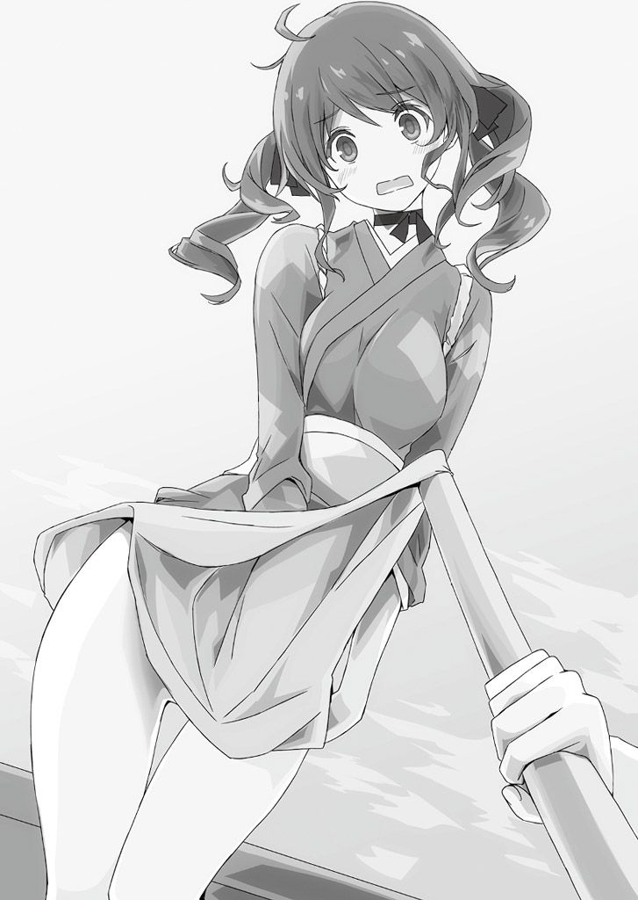

| 桜ノ杜ぶんこ 戦国ぼっち5 | |
| 瀧津孝 | |
| (2014) | |
桜ノ杜ぶんこ
戦国ぼっち５
Phantom ship in Setouchi
瀧津 孝
一章 仇 敵
「た・か・す・ぎ・い・ち・ろ・う・た！」
一言一言、刻み付けるようにして、そいつは俺の名前を呼んだ。
「竹中 安治 から聞いておったおのれの名だけは、この頭の中にしっかりと刻ませてもろうた。おのれと再び相 まみえるこの時を、一日 千秋 の思いで待ち焦 がれながらな！」
「お、お前は！」
「よもやわしの顔を忘れてはおるまい？ おのれを地獄に叩き落とすため、海の底から舞い戻ったわしの顔を！ ハハハハハッ、ハーッハッハッハッ！」
俺のすぐ目の前にいる大男。
こいつの顔......忘れようったって、忘れられるはずがない。
肩よりも長い髪をオールバックにして垂 らした総髪 （髪を後ろで結わいだ髪型）に、鋭い目、鼻筋の中央部が出っ張ったワシ鼻。
身長が一九〇センチ近くあるだろう巨体の上半身は鎧下着の上に胴丸 （胴体周囲を覆 う鎧）と籠 手 （腕や手甲 の防具）を身に付け、腰から下は水色の袴 に佩楯 （大腿 部 から膝 を守る防具）という出で立ち。
そう、こいつは......越 智 玄 養 斎 ！
豊臣水軍が建造した巨大戦艦・九 頭 竜 丸 を乗っ取った海賊衆の副将として、俺たちと死闘した強敵。
奴が口にした竹中 安治 とは、関白 ・秀 吉 の近習 として大坂に潜 り込んでいた島 津 家の間 者 で、一時期俺たちと行動を共にしていたものの、九 頭 竜 丸 で麗 と沙 希 が倒している。
そして玄 養 斎 も、九 頭 竜 丸 が沈没する時に生じた大きな渦 に呑み込まれて死んだはずじゃ？
俺を海に引きずり込もうとした奴に、とどめの一撃を杖 で見舞ったのは俺だ。
玄 養 斎 の右手には、俺の身長ほどもありそうな八角 の鉄棒にとがった星（四 角 錐 型の鋲 ）を打った金 砕 棒 がしっかりと握 られている。
以前に奴が使っていた武器は大 太 刀 だったのだが、そんなことをあれこれと考えている暇はなかった。
玄 養 斎 は「死ねーい！」と叫ぶなり、金 砕 棒 を俺の頭上目掛けて勢いよく振り下ろしてきた。
あんな物を杖 でまともに受け止めたら、杖 ごと頭を叩きつぶされてしまうだろう。
揺れる甲 板 の上で、足が絡 まりそうになりながらも俺はその一撃を辛 うじてかわした。
甲 板 では、麗 、有 貴 姫 、りよ、そして出会ったばかりのあの女の子 が、茂 平 や海 坊 主 たちと共に、乗り込んできた敵の一団と激しい戦いを繰り広げている。
そう、ここは海の上。りよの父、茂 平 が指揮する関 船 の上 甲 板 だ。そして、この関 船 に奇 襲 をかけてきた玄 養 斎 たちの一味によって、俺たちは窮 地 に立たされていた......。
話は少し遡 る。
俺、高 杉 一 郎 太 は、現代の東京に住む高校二年生だった。
それがひょんなことから戦国時代にタイムトリップし、関東、関西、四国を巡りつつ、何度となく死線をくぐりながら、ついこの間までは九州の地にいた。
日向 （宮崎県）で島 津 家が密かに製造していた〝戦国版戦車〟亀 甲 車 の大部隊を撃滅し、茂 平 の関 船 に乗って〝幽霊船〟が現れたという芸 予 諸島へと向かっている。
豊 後 （大分県中南部）の中心地・府 内 の湊 から出航する時には、俺たちを庇護 し、協力してくれた大友 宗麟 、義統 親子や、共に島 津 軍と戦った立花 誾 千 代 、立花 宗茂 夫婦も見送りに来てくれた。
この時宗麟 は、日向 方面の最前線に位置する朝 日 岳 城からもたらされたばかりの急報を俺たちに明かした。
日向 の縣 に一旦集結し、豊 後 侵攻の構えを見せていた島 津 家 久 の大軍は、Ｕターンを始めたというのだ。
亀 甲 車 部隊の全滅が、計画を大きく狂わせたのは間違いない。
家 久 は、日向 における島 津 家の軍事拠点であり、自 らが城主を務める佐 土 原 城に引き揚 げ、攻撃計画を練り直すつもりだろう。
これで本来の歴史どおり、島 津 の本格的な豊 後 攻めが始まるのは一年後に先延ばしされるはずだ。
朗報にホッとはしたものの、次なる問題が〝幽霊船〟だった。
茂 平 の話によると、九 頭 竜 丸 が能 島 村上水軍の脱走者たちによって強奪された直後、淡 路 島の周辺海域に停泊 していた九 鬼 水軍の安 宅 船 一艘、阿波 水軍の関 船 二艘が相次いで謎の沈没を遂げる事件が起こっていた。
どの船も、関白 ・羽 柴 秀 吉 が起こした四国征伐 に動員されている軍船だ。
当時、周囲に敵らしい船の姿はなく、どの船も突如舷 側 （船の側面）で爆発が起こってから短時間のうちに沈んでおり、原因はわからず仕舞い。
そのうち乗組員たちの目撃談に尾ひれがつき、「幽霊船が船を沈めた」というまことしやかな噂話が征伐 軍全体にまで広まっていった。
秀 吉 は事態を憂慮 し、忍 び目 付 であり、当時九 頭 竜 丸 事件解決のために伊予 （愛媛県）へ渡っていた俺に、その任務を片付け次第、今度は〝幽霊船〟の真相を明らかにするよう命じてきたんだ。
それにしても、九 頭 竜 丸 の任務からして生きて帰れるかどうかもわからない危険極まりないミッションだったのに、それが解決するのを前提としてまた新たな、しかもこれまた難解そうな任務を言って寄越してくるんだから、秀 吉 という男は人使いが荒いというか、楽天家というか......。
その〝幽霊船〟が今度は、淡 路 島から一〇〇キロ以上西に離れた瀬戸内海の生 口 島と因 島 にも現れたという。
この二つの島は、安芸 （広島県西部）・備 後 （広島県東部）と伊予 の間に位置する大小数百もの島から構成される芸 予 諸島の安芸 ・備 後 側にある。
現代の芸 予 諸島の東寄り海域には、広島県尾 道 市と愛媛県今治 市をつなぐ西瀬戸自動車道、いわゆる「しまなみ海道」が通っていて、観光客でにぎわっているのを何度かテレビのニュースやバラエティ番組で見たこともあったっけ。
もちろん戦国時代に、島々をつなぐ大橋などは存在しない。
交通手段は、船のみだ。
しかも、周辺海域は、潮の流れが特に激しく、潮流は複雑で、刻々と流れの向きや速さを変化させる。
九 頭 竜 丸 を巡り芸 予 諸島の伊予 側海域で展開した戦いでは、この潮流に俺たちは散々悩まされたんだ。
ここで動き回るには、この海域の〝性質〟を熟知した水先案内人が欠かせない。
そんな意味では、俺たちを船に乗せてくれている茂 平 たち、来島 村上水軍の兵士たちはとても心強い。
俺たちが乗る関 船 は、当時の軍船を小型、中型、大型でクラス分けするなら、中型に分類される。
櫓 の数は、左右合わせて四〇挺なので、関 船 の中では平均的な大きさだ。
ちなみに、櫓 の数が二〇挺前後の小型船は小 早 と呼ばれ、軽快なスピードを出せるため、偵察や伝令に使われる。
五〇から一〇〇もの櫓 を有し、総矢倉（船体上に設 けられた防弾構造物）に大筒や鉄砲を多数備えた大型船は、安 宅 船 だ。
近現代の海軍で当てはめると、小 早 は高速で汎用 性の高い駆 逐 艦 、関 船 は戦艦と駆 逐 艦 の中間サイズと定義される巡 洋 艦 、安 宅 船 は鈍足だが強大な火力を有する戦艦に相当する。
小 早 ほどのスピードは出ないものの、俺たちの関 船 は四〇人の水夫 が全力で櫓 を漕 いでくれるお陰で、府 内 から豊 後 水道を順調に東北へと進み、すでに瀬戸内海の安芸 灘と伊予 灘との間にある忽 那 諸島に到達していた。
ここを抜けて、斎 灘 をさらに三〇キロほど行けば、瀬戸内で最も島が密集している海域の中に生 口 島と因 島 が見えてくるはずだ。
生 口 島は、因 島 と五〇〇メートルくらいしか離れておらず、位置的にはどう見ても備 後 エリアなんだけど、どういう訳か尾 道 と今治 の間にある諸島群の中で、この島だけ安芸 の国に属している。
俺たちは二つの島のうち、進行方向から見てより近い生 口 島から先に調査をする予定だった。
俺と危険な道 中 を共にしてくれている仲間、今ではもうそう言い切っても構わないメンバーの一人である風 葉 は、この船にいない。
彼女は、中国地方の中心地とも言える安芸 の情勢を探るため、大友 水軍の協力を得て、小 早 で別行動をとった。
当時、中国地方のかなりの部分を領有しているのは、毛 利 家だ。
安芸 の小領主に過ぎなかった毛 利 元 就 は、抜群の知 謀 と勇戦によって中国地方随一の戦国大名としてのし上がり、一時は四国や九州の北部にまで影響力を及ぼす大大名へと成長した。
彼の死後、毛 利 家を継いだのは、早世 した嫡 男 ・隆元 の子、つまり孫にあたる輝 元 である。
幼い輝 元 を補佐したのが、元 就 の次男で主に山陰方面を担当した吉 川 元 春 と、三男で山陽方面、瀬戸内海を任された小 早 川 隆 景 だった。
輝 元 にとって二人の叔父はとても頼りになる存在で、吉 川 と小 早 川 の名字に共通する〝川〟の字をとって、毛 利 家の政治システムは、〝毛 利 両 川 体制〟とも呼ばれていたんだ。
その毛 利 家も、今では関白 ・秀 吉 に臣 従 を誓い、最大勢力を誇った時よりは領土を圧縮されたものの、主に安芸 、備 後 、長 門 （山口県西部）、周防 （山口県東部）、石 見 （島根県西部）、出雲 （島根県東部）、隠岐 （隠岐 の島）を治める国内屈指の有力大名であることに違いはない。
当主・輝 元 は、安芸 の北部にある吉 田 郡 山 城を居城にしており、もう三〇代の前半に入っている。
結構いい年になってるんだけれど、二人の叔父が政治にも軍事にも極めて優秀で、存命でもあることから、〝毛 利 両 川 体制〟は現在も継続しているだろう。
それを示唆するように、四国征伐 において毛 利 家からは輝 元 でなく、小 早 川 隆 景 が総大将になって出陣し、伊予 攻略軍の指揮も執っている。
でも、吉 川 元 春 の方は三年前に隠居して、家 督 を嫡 男 の元長 に譲ったはずだ。
今では元長 が元 春 に代わって〝両 川 〟の一翼を担い、俺の記憶では四国征伐 にも参加していたんじゃなかったかな。
〝幽霊船〟が備 後 沖に現れたことで、瀬戸内海に面する毛 利 家の領内でそのほかに不審な出来事が起こっていないかどうかを確かめながら、風 葉 は陸伝いに安芸 から備 後 へ入るという。
そしてもう一人、沙 希 も、日向 ・縣 沖で島 津 の亀 甲 車 残存部隊を大筒で粉 砕 してくれた能 島 村上水軍の安 宅 船 、関 船 の艦隊と一緒に伊予 へ向かった。
この艦隊は、能 島 水軍の頭領・村上武吉 が、娘同然に可愛がっている沙 希 を豊 後 に無事送り届けるため、わざわざ寄越してくれた部隊だ。
艦隊の指揮官である島 吉利 は、四国征伐 に関わる戦闘ならばいざ知らず、まだ戦端も切っていない島 津 を相手に大筒を撃ち込むなど言語道断と猛反対した。
でも、沙 希 が懸命に説得し、「全ての責任はあたしが負う。聞き入れてくれねば、この場で自害する」とまで言い出し、実際腰の脇差しに手を掛けて抜こうとまでしたもんだから、吉利 もとうとう折れた。
沙 希 は、四国征伐 軍の一員として伊予 の道 後 沖で待機している武吉 に面会し、自 らの一存で部隊を戦闘に参加させてしまったことを詫 びるために俺たちと別れた。
二章 眼鏡っ娘
快晴で、ほぼ無風。
朝日を受けてキラキラと輝く水面は、大きなうねりや白波も見えず、とても穏やかだ。
そんな瀬戸内海を、関 船 は突っ切っていく。
俺は乗組員たちの邪 魔 にならない上 甲 板 の後方で、麗 と向き合っていた。
「キエーーーーーーーーイ！」
鋭い気合いと同時に、麗 の木刀が俺の頭上に落ちてきた。
俺は右手の杖 を素早く両手に持ち替えて正面で受ける。
カキーーン！
金属音のような高く、鋭い音を響かせ、木刀を受けた時の衝撃 は、思ったよりも軽い。
これまで使っていた杖 よりも少し重いけれど、さすがに世界で一番堅い木・黒檀 で作られた杖 だけのことはある。
時を移さず、杖 を回転させるようにして木刀を下にはたき落とし、その回転を止めることなく今度は上方に動かして相手の喉 元 を突いて、気合いを掛ける。
「エイッ！」
俺が東京の上野で習ってた杖 術 の稽古では、初心者は一二本の基本技を繰り返し練習させられていた。
この技もその一つで「巻 落 」。
基本技を習得してから習う様々な「形」は、全て基本技の組み合わせだから、これらをきちんとマスターしておかないと上達はしない。
戦国時代に来てから、暇さえあれば基本技の素振りをしていたから、少々長めに練習しても、後からひどい筋肉痛には悩まされなくなっていた。
俺の流派は、対戦する相手の武器を主に太 刀 と想定している。
基本技の練習では、ただひたすら一人で黙々と単独動作（素振り）をこなすばかりで、相対 動作（二人一組になった組稽古）はあまりやらせてもらえなかった。
でも、相手がいてくれた方が、少しでも実戦感覚を身に付けられる。
それで、船内にあった木刀を借り、麗 に稽古を付き合ってもらっている。
「一 郎 太 様、そろそろ一息入れてはいかがです？」
三〇分以上休まずに同じ技の稽古ばかりしてるから、麗 は少し心配そうに首を傾げた。俺も麗 も上 気 して、首筋 に汗がにじんでいる。
「いや、もうちょっと付き合ってくれるかな？ 今度は『体 外 打 』だ。麗 さんは前に進んで打ち込んできて」
腕はかなり疲れてきていた。
でも、休憩する気なんて全然起こらない。
俺はもっと......もっと強くならなくちゃ。
そうじゃなきゃ、力ある者だけが生き残れる戦国の世で、俺はいつも誰かに助けてもらうばかり......。身近にいる仲間たちさえ、満足に守れないんだ。
有 貴 姫 、りよ、風 葉 、沙 希 .........そして麗 。彼女たちをちゃんと守れる男に、俺は......俺はなりたい。
「体 外 打 」は、正面から斬りつけてきた太 刀 を、後ろに退いて外し、同時に杖 を振り下ろして太 刀 を打ち落とす技だ。
まるで手旗信号を振ってるみたいな独特の動作で、杖 尻 を持った左手の肘 を頭上で曲げ、杖 を体の右側から真下に落とすような構えをとる。
下げた右手は杖 先 に近い部分を握 っている。
「キエーーーイ！」
麗 が打ち込んできた。
ところが、あまりにも勢いよく踏み込んで前に出てきたもんだから、俺は大きくジャンプして下がった。
と同時に、頭上から下げている杖 を振り上げて、打たなければならない。
俺がこの時点でとっている構えは、杖 を大きく振りかぶっているのと同じだ。
右手を左手の杖 尻 方向に滑 らせながら、円を描くように杖 を前に回転させれば、この動作は即座に上段からの打ち込みに変化する。
「エーーーーーーイ！」
と、気合いを込めて振り上げようとした杖 が途中でつっかえた！ と同時に「だめえっ！」というりよの悲鳴が背後で響 いた。
目の前の麗 は、俺の後ろの光景を見て、唖 然 としている。

一体何が起こっているのか!?
恐る恐る振り向くと、振り上げようとした杖 先 が、後ろにいたりよの着物の裾 をまくり上げ、彼女の胸の辺りで引っ掛かって止まっている。
りよは、というかこの当時の女性は、パンツなんか身に付けていない。
つまり、りよの下半身は今!?
......俺が杖 先 にあった視線をゆっくり下げていくと、りよは内 股 になって大事な部分を両手で隠して......るのを、はっきり目視する前に、麗 が両手で俺の目を塞 いだ。
「見てはなりませぬ！ 一 郎 太 様、早く杖 を下ろして！ りよ、着物を元に戻してきちんと整えなさい！」
「なんじゃ、なんじゃ！ いかがしたのじゃ？」
船酔いしないよう、船内を歩き回っていた有 貴 姫 が、騒ぎを聞きつけてやってきた。
「一 郎 太 様が、またもやりよに嫌らしいことを！」
「またもやって、それどういう意味だよ」
目隠しし続けている麗 の手をつかんで、俺はムキになった。
「日向 の縣 浜 城にて、我らが本 丸 に向かって斜面を上がっていた折、一 郎 太 様は、りよの着物の裾 の下に頭を突っ込んで、ふざけていたではありませぬか！」
「な、何を言ってんの！ あれはりよさんが足を滑 らせて落ちてきて、たまたま俺の頭が」
「りよが滑り落ちたのを良いことに、避けもせずにわざと頭を入れたのでしょう？」
「もう、馬鹿なこと言うなって！」
「馬鹿ではありませぬ！！！ りよも、一度ならず二度までも斯 様 な目に遭うているのですから、ならぬものはならぬと、一 郎 太 様にもっとはっきり物申しなさい！」
麗 に促 されて、着物の裾 を直したりよはモジモジしながら俺を上目遣いで見た。
「......別にいい......おら......旦那様......喜んでくれるなら」
「ま、まあ！」
麗 は額 に青筋を立てて、りよ、そしてようやく目隠しを解いた俺に、射るような視線を向けた。
「ちょ、ちょっと、りよさん、誤解を生むようなこと言わないでって！」
りよに詰め寄ろうとした俺の両肩をつかんで、グイッと有 貴 姫 が自分に向き直らせた。
「高 杉 殿......」
有 貴 姫 が、真剣な目で俺を見つめる。
「は、はい......」
「そんなに見たいのなら、何故 わらわにそうおっしゃってくださらぬのです？ 高 杉 殿は九 尾 山 城にてわらわの全てをその目で見た唯一のおのこ。二人きりなれば、いつでも見せて差し上げますものを」
「ええっ!? 」
ドギマギする俺を押しのけ、麗 が有 貴 姫 に相対 する。
「左 様 なこと、許されませぬ！ 姫様には、まことの許嫁 、長野政綱 様が上州 （群馬県）においでなのですから！」
「じゃから、あのような者との婚儀の約束など、破棄 したと申しておるであろう？」
「そのような勝手を、国元 の殿様や、重 臣 の方々が許されるはずがありませぬ！」
「許そうが、許されまいが、嫁ぐのはわらわじゃ！ わらわのやりたいようにする！」
「全く、わがままにも程があります......」
なおも有 貴 姫 に対して何か言いかけようとするのを麗 は急に止め、俺をチラッと見た。
口論のきっかけになったのはそもそも俺だってことを、思い出したようだ。
「確かに、一 郎 太 様が鬱屈 した気分を晴らしたくて、りよを相手に悪戯 をしたくなる気もわからぬではありませぬが......」
何をプリプリ怒ってるのか知らないけど、麗 は俺に何かの仕返しでもするかのように意地悪く突っかかってくる。
「どうして俺が気分を晴らさなくちゃいけないんだよ？」
りよが「悪戯 ......違う......本気......」と抵抗しているのは取りあえず無視しつつ、俺は憤然として麗 と向き合った。
「されば、ひょっとしたら一 郎 太 様はあの美人で、胸も大きい立花 誾 千 代 様の婿 になり、〝おなご組〟の頭 になっていたかもしれぬのですものね？ 逃した魚は、大きかったですわねぇ？」
「麗 さん、いい加減にしろって！」
「いい加減にするのは、一 郎 太 様です！」
さすがに俺もムカッときたんだけど、麗 も負けていない。
俺たちが面と向かってにらみ合っているところへ、茂 平 と海 坊 主 がやってきた。
茂 平 は、九 頭 竜 丸 事件の時に受けた左足の傷がまだ痛むらしく、少し足を引きずっている。
何やら難しそうな表情をしているのが足の痛みのせいでないのは、府 内 で再会した時も、そしてこの船上でもいつだって飄々 とした人 懐 っこい表情で俺たちに接してくれていることですぐにわかる。
異変を察した俺と麗 はすぐに顔を離し、彼らに歩み寄った。
「茂 平 さん、何かあったんですか？」
俺の問い掛けに、茂 平 はため息混じりに眉をしかめた。
「どうも、どこかの船に後を付けられてるみたいなんでさぁ」
それを聞いて、俺たちは一斉に船縁 へ駆け寄り、後方を見やった。
水平線に浮かぶいくつかの島影のほか、船の姿は見当たらない。
こんな時に、沙 希 の遠眼鏡があれば便利なんだけど......。
「おらたちの目で見えるか見えないかのぎりぎりの間合いを保って、ついてきとるようで。実はおらの目にも見えんのですが、この海 坊 主 の目ん玉は一里（約三・九キロ）先の小舟の形でも見分けられるほどでして、こいつがそう言うんですから間違いはござりやせん」
海 坊 主 の本名は、越 智 久 作 という。
丸坊主の大男という外観から、同朋 に海 坊 主 という愛称を付けられたらしく、俺たちも九 頭 竜 丸 の事件で出会って以来、親しみを込めて「海 坊 主 さん」と呼んでいる。
「この関 船 や安 宅 船 みたいな大きな船じゃねえ。
小 早 のようで、それも一艘やのうて、二艘のように見えるんやが......」
「小 早 ってことは、軍船じゃないですか！ 何かの荷物を運んでる廻船 とは考えられないんですか？」
思わずそう尋 ねた俺に、海 坊 主 はかぶりを振った。
「いいや、ありゃ小 早 の形をしとりますわい」
「じゃあ、四国征伐 に加わってるどこかの大名の船なんじゃ？ 毛 利 水軍とか、能 島 村上水軍とか......」
俺たちが乗る関 船 は、来島 村上水軍であることを示す「隅 折 敷 に縮み三文字」の家紋が船 印 として風にたなびいている。
三家ある村上水軍のうち、能 島 村上水軍と因 島 村上水軍は、「村上」の「上」の字を丸で囲んだ家紋を使っているのに、来島 村上水軍だけは何故 か異なっていた。
これは、三家の本拠地の中で、来島 村上水軍の来島 が伊予 本土と最も接し、伊予 の守護・河野氏との関係を必然的に深めていったことに起因しているようだ。
その河野氏の家紋が、「隅 折 敷 に縮み三文字」だった。
「船 印 をどうも掲 げておらんのです。関白 様の軍勢で、左 様 なまねをしとる軍船はおりませんやろう。身元を隠して後を付けてくるとは、怪 しすぎますわい」
一体、何者が？ 俺たちは黙り込んだ。
確かに味方、つまり秀 吉 サイドの大名の船とは考えにくい。
となると、この周辺で敵対、対立している勢力と言えば......島 津 の軍船？
それがこんな場所にまで潜 り込んできていると？
「どっちにしろ、用心するに越したことはありませんな。
ここから生 口 島までは、目の前にある中 島と怒 和 島の間を通って行くのが一番近道ですけんど、相手の動きを確かめるためにも、少々遠回りになるが、安芸 寄りに舵 を切って怒 和 島と津和地 島の間を通って行くことにしましょうぞ」
茂 平 の提案に異存はない。
関 船 は進行方向を一旦左に転じ、怒 和 島を迂回するようなルートで改めて東北方向へ進んだ。
この船に乗り込んでもう丸一日以上。
起きている時は、できるだけ体を動かして船酔い防止に努めていた麗 と有 貴 姫 なんだけど、そろそろ気分が優れなくなってきたらしい。
二人は潮風に当たるため、りよを連れて船首 上 甲 板 に行っている。
その間、海 坊 主 は船尾でずっと後方の海をにらんでいたんだけど、怒 和 島と津和地 島の間の海峡を抜けかかったあたりで、一緒に周囲の海を監視していた俺に不思議そうな顔を向けた。
「どうしたの？ 海 坊 主 さん」
「つけてきとった船が、見えんようになりましたんや」
「それなら、きっと何かの見間違いだったんだよ。猿も木から落ちる、弘法も筆の誤り、ってね」
「そやろか......まあ、そやったら、安心なんやけど」
瀬戸内海はこの時代でも、日本における海上交通の大動脈だ。
軍船、廻船 、漁船......いろんな船が行き来してるし、中には南蛮 （ヨーロッパや東南アジア）、明 、朝鮮といった外国からの船だってたくさん混じってるだろう。
いくら抜群の視力を持ってる海 坊 主 だって、勘違いや錯覚を一〇〇パーセント起こさないとは言い切れないはずだ。
「一 郎 太 様、ちょっと！」
すると、船首 の方から麗 が小走りにこっちへ向かってきた。
「どうかしたの？」
「前方に停泊 している船が、どうもおかしいのです」
「おかしいって？」
怒 和 島の西側を迂回した俺たちの船は、舵を右に切りながら本来進むはずだった生 口 島への最短航路へ合流しようとしていた。
ところが、乗組員たちが「伊予 崎 」と呼ぶ怒 和 島北端の小さな岬を越えたところで、二艘の船が並んで停船しているのが見えてきたんだ。
俺たちは船首 に移動して、目を凝らした。
船は、数百メートル前方に見える。
すでに茂 平 やほかの乗組員たちもざわめきながら前を注 視 していたんだけど、この中で海 坊 主 が一番正確に船の状況を見極めていた。
「弁 才 船 （海運用の大型帆 船 ）に、小 早 が横付けしとります！ 櫓 は一二挺、小 早 の中でもかなり小さい部類や！ あれは、はぐれの海賊やなあ。弁 才 船 を襲 っとる最中ですわ」
「はぐれの海賊？ 襲 ってる？」
調子外れな声をあげた俺に、茂 平 がうなずいた。
「この瀬戸内で海に生きる兵士ならば、大抵はいずれかの水軍に属し、普通に海賊衆と呼ばれとります。
ですけんど、陸に何の罪もない民を私利私欲で襲う野武士や山賊がおるように、海にあっても水軍には属さず、物盗りや人さらいで食いつないでおる曲者 があちこちにおるんでさあ。そいつらのことを、おらたちは〝はぐれの海賊〟と呼んでるんで」
戦国時代、海賊っていう言葉は決して悪人を指していたんじゃなかった。
どちらかと言えば〝海の武士〟という意味合いで通っていたらしい。
しかし、海賊の中にも、悪い奴はいる。
「それなら、見過ごす訳にはいかないよ。襲われてる船を助けなきゃ！」
「無論でござりやす。おらたち瀬戸内の海賊は、そもそも『警固 衆 』とも称され、瀬戸内の海の安全を守るお役目も古い昔から仰 せつかっとるんですからな」
戦闘となると俄 然 元気が出てきたのか、海 坊 主 が目を輝かせて茂 平 に顔を近付けた。
「ならばお頭 、すぐにも奴らに大筒か鉄砲でもぶっ放しますか？」
「阿 呆 ！ そんなことしたら、弁 才 船 に乗っとる者までケガしてしまうやろ！ 急いで接 舷 して、斬り込むしかないわい。
ただし、此 度 の出帆はあまりにも急やったで、水夫 と大筒、鉄砲を扱える兵以外は十分に整えられんかった。斬り込める人数はおめえも含めて五人しかおらんぞ」
「それなら、当然俺も加わります！」
俺に同調するように、麗 、有 貴 姫 、りよも、茂 平 に向かって一歩前に出た。
「しかし高 杉 様......有 貴 姫 様、麗 様、りよまで......斬り込みとなると、相当危 のうございますし......」
「茂 平 さん、一二挺櫓の小 早 となると......相手の兵士は恐らく四、五人。
同時に小 早 を動かしている水夫 も制圧しなくちゃいけないから、海 坊 主 さんたちだけじゃ戦力不足ですよ。俺たちも加わらないと。
それに麗 さん、有 貴 姫 様、りよさんの武術の腕前は茂 平 さんもよく知ってるでしょ？ 心配しないで」
現代で得ていた知識と、戦国時代で見聞きした経験を元に、相手戦力を素早く推測し、理にかなった提案をする俺に、茂 平 はそれ以上反対しなかった。
全速で前方の船に接 舷 するよう茂 平 が水夫 と舵取りに命じるのに続き、俺たちも急いで戦闘準備を整えた。
俺は胴丸 を身に付け、黒檀 の杖 をつかむ。
俺と同じように胴丸 を着込んだ麗 は打 刀 （長剣）、有 貴 姫 は薙 刀 、平服のままのりよは半 弓 を手にしている。
彼女たちの持つ武器は、どれも大友 家から贈られたかなり立派な代物だ。
「で、いかがなさいます？ 一 郎 太 様」
麗 の問い掛けに呼応して、有 貴 姫 、りよ、それに長さが三メートル近い十文字槍を携えた海 坊 主 と、抜き身（鞘 から抜いた刀）の打 刀 を引っさげた四人の兵士も俺の前に集まった。
自然と俺が、斬り込み隊の指揮官になったような格好だ。
本来なら、関 船 の正式な乗組員じゃない俺に指揮権はないんだけど、今は躊 躇 していられない。
どう戦うべきかを、頭の中で素早く取りまとめた。
「斬り込みは、弁 才 船 と小 早 の二手に分かれて速 やかに両方の船を制圧します。
相手の兵士は恐らく全員弁 才 船 に乗り移ってるだろうから、小 早 には水夫 しかいないでしょう。櫓 が一二挺なら、水夫 は一二人。
でも、たとえ戦闘任務に就 かない水夫 といっても、屈強な男たちばかりのはず。そいつらが一斉に刃向かってきた場合を考えに入れると、決して小 早 の方も軽視はできない。
それで、小 早 には海 坊 主 さんと有 貴 姫 様、りよさん。弁 才 船 には俺、麗 さん、そして残りの兵士の皆さんが当たる」
「え〜？ わらわも高 杉 殿と共に戦いたいぞ！」
「おらも！......旦那様と！」
「弁 才 船 では、多分狭い船内での接近戦になる。そうなると、薙 刀 や十文字槍のような長 柄 の武器や、弓のような飛び道具は不利だよ。
一方で、ろくな武器を持ってないと思われる水夫 に対しては、薙 刀 や弓はかなり有効な威 嚇 になるはず。だから......」
俺の説明に、有 貴 姫 とりよはしぶしぶうなずく。
「よーく、わかりやした。小 早 の方は、任せてくだされ」
海 坊 主 が、胸を叩いた。
弁 才 船 と小 早 は並ぶように停泊 している。
岬の陰から突然現れた俺たちの関 船 に、気付いた様子はまだない。
弁 才 船 に押し入った賊はお宝の物色に一生懸命で、小 早 の水夫 はお宝を回収して逃走するまでは腕を休める貴重なブレイクタイムとすっかり油断しているのかもしれない。
関 船 は見事な操船で舵 を切り、弁 才 船 と小 早 の船尾に対して直角にぴたりと接 舷 した。
弁 才 船 の船尾に人影はなく、前方は大きな帆 柱 や、多分賊の指示で強制的に下ろされたムシロの大きな帆が邪 魔 になってよく見えない。
小 早 の方は、弁 才 船 の二分の一ほどの大きさなので全体が見渡せる。
左右舷 側 の櫓 と櫓 の間には、水夫 を矢弾から守る長方形の分厚い楯板 が数枚ずつ立て掛けられており、思ったとおり水夫 たちは櫓 床 の脇で、思い思いに寝そべっていた。
いよいよ戦闘開始だ！
俺たち弁 才 船 組と海 坊 主 たち小 早 組は、矢倉の上からほとんど同時に、両方の船に飛び下りた。
弁 才 船 は船尾が高くなっているため、関 船 から飛び移る際の高低差はあまりなく、比較的簡単に飛び下りられた。
六人全員が船尾甲 板 に移った時点で、ようやく船体中央の帆 柱 よりも前にいた賊の一人が俺たちに気付いた。
「敵じゃーーーーーー！ 出会えーーーい!! 」
そいつの大声に応じて、たちまち抜刀した五人が船内から飛び出し、船尾に向かってきた。麗 と来島 衆の兵士たちが、直ぐさま立ち向かう。
「一 郎 太 様は、船の方たちを助け出して！」
敵と斬り結びながら声を張り上げた麗 に「わかった！」と返し、俺は一人で船首 方向へ進んだ。
帆 柱 を過ぎると、甲 板 中央部の船首 寄りの場所に、二〇人近い乗員が縄で縛 られ、座らされているのが見えた。
その中に、一際目立つ衣装の者がいる。
女性だ！
朱色地に青や白の花模様を染め抜いた、鮮やかな色合いの小 袖 をまとっている。とにかく、この人たちを助けなきゃ。
俺は一・五メートルほど高くなっている船尾甲 板 から、中央甲 板 に飛び下り、乗員たちの元へ駆け寄った。
「皆さん、ケガはありませんか？」
俺が尋 ねると、全員がホッとしたような表情になり、次いで「助かったぁ！」「手傷を負うとる者はおらん」「早 う縄を解いてくれ！」と口々にわめき立てた。
「わかりました！ 順番に縄を解きますから！」
助けるのは......まず女性からだ。
俺は、一団の最前列に座っている唯一の女性の前にしゃがみ、ハッとなった。
かなり若い女の子じゃないか！ それに、顔にかけているのは眼鏡!?
現代で見かける眼鏡の形じゃない。
まん丸の大きな木製フレームにレンズがはめ込まれた単眼用のルーペが二つ、柄の部分を重ねてリベットで固定され、両眼用の眼鏡として使われている。
フレームの両端に付いている紐 を、この娘は左右の耳に掛けていた。
眼鏡はヨーロッパで発明されて、日本で一般に普及し出すのは江戸時代だったと何かの歴史書に書いてあったのを記憶している。
日本に初めて眼鏡が伝来したのは、まさに戦国時代。伝えたのは、日本史の教科書でもおなじみのスペイン宣教師、フランシスコ・ザビエルだ。
この時代では南蛮 からごく少数が輸入されていただけだから、女の子の眼鏡は超貴重品ということになる。
そんな物を持てるのは、相当高い身分の人間、大名クラスの武士か、貴族ってことに......。身に付けてる艶 やかな小 袖 も、見るからに高価そうだ。
「お前様は〜......毛 利 家の方？」
俺が本当に味方なのかどうなのか、まだ全面的には信用していないらしく、女の子は少しおどおどした調子で聞いた。
「いや、俺は毛 利 家の人間じゃない。でも、助けに来たのは来島 村上水軍の船だから、決して怪 しい者では。だから安心して」
女の子の表情が緩 んだように見えた。
ところが一転、その顔が恐怖で強 ばった。
「敵！ 後ろ！」
そう叫んだ女の子の視線は、俺の背後に注 がれている。
同時に俺は強烈な殺気を感じ、振り向いて立ち上がり様 に、杖 を両手に持って頭上で斜めに構えた。
猛烈な勢いで駆けてきた新たな敵が、刀を振り上げて飛び掛かろうとする寸前だった。
ガシッ！
俺の頭を断ち割ろうとした刀を、頭頂部すれすれの位置で黒色の杖 が受け止めた。
この態勢、この打ち合いの形......少し前まで麗 を相手に何度も練習していた「巻 落 」の技が、瞬時に頭の中で蘇 る。
すると、俺の体はオートマチックの機械みたいに、無意識のうちに自然と動いた。
力を込め、杖 を左に回転させるようにして刀を下にはたき落とす。
敵は俺が一旦は後ろに下がるか、もしくはつばぜり合いをするように体を前に出して杖 で押してくるかと予想していたのだろう。
刀を下に払われた相手は、一瞬「えっ？」という意外な表情をした。
間をおかず、俺は大きく踏み込み、回転させた反動を活かして杖 を上げ、敵の顔面に突き出した。
「エーーーイ！」
気合いもろとも、杖 は見事に額 を直撃し、敵は「ウグッ！」っとうなり声をあげたまま昏 倒 した。
縛 られている乗員たちから「オオーーーッ」と歓声が湧 く。
できた！ 完璧だ！
日向 の縣 浜 城で敵の肝付 兼城 を相手に「逆手突」で戦った時よりも、もっとうまく杖 を操れた。
それに「巻 落 」の基本技が、実戦でもこんな風に役立つとは思いもしなかった。
俺は少しの間その場でボォーッと突っ立ったまま満足感に酔いしれてしまったんだけど、女の子の申し訳なさそうな声で我に返った。
「あのぅ〜、そろそろ縄を〜」
「ご、ごめんごめん」
舞い上がってた自分が気恥ずかしい。
俺が腰に差していた秀 吉 拝 領 の脇差しを抜いて、女の子の縄を切り解いていると、麗 たちが足早にやってきた。
麗 も、四人の来島 衆にもケガはなく、五人の賊は全員が斬り倒されていた。
麗 はもちろん、茂 平 の部下たちもなかなかの腕利きぞろいだったようだ。
「一 郎 太 様が、こやつを一人で倒したのですが？」
麗 が感心したように言うもんだから、もう一度のびている敵に目をやると、確かにひげ面 の大柄で強そうな体格をしている。
瞬時の出来事だったし、倒した時は結構興奮もしてたので、相手の様子は詳しく観察していなかった。
「そうなんじゃ〜。わち、うっとり見とれてしもうたー。その賊は、恐らく一味の頭目 に違いないんよ〜。
そやつをこの方がお一人でー、しかも目にもとまらん早技で〜。お前様は、一 郎 太 様と言うてなのか〜？」
縄できつく縛 られていた腕をさすりながら、立ち上がった眼鏡の女の子が麗 を、次いでうっとりするような目つきで俺を見た。
それにしても、おっとりというか、すごくスローモーなしゃべり方をする子だ。
「？」
麗 は突如として目の前に現れた若い女の子が、目をキラキラさせて俺を見つめているのが気に食わないのか、ぶっきらぼうに尋 ねた。
「ところで、あなたは？」
「ありゃりゃりゃりゃ〜〜〜〜！ 助けていただきながらー、大変失礼をば〜。わちは、渋 谷 万 梨 と申します〜」
「俺は高 杉 一 郎 太 、彼女は三 好 麗 。それにしても、危ないところだったね」
「はい〜。わちは、備 後 の尾 道 で代官を務める渋 谷 与右 衛 門 の娘にて〜、父の名 代 で宮 島 の厳 島 神社に寄 進 の品を届け、帰る途中のことでしたんじゃ〜。
畿 内 への荷を積んだこの船に乗せてもろうてー、途中尾 道 で、下ろしてもらうはずじゃったにー、こやつら賊に襲われてしまい。げに〜何とお礼を申せばよいやら〜」
厳 島 神社は、現代の広島県廿日 市 市 にあって、松島 や天橋立 と並んで日本三景の一つとして知られる景 勝 地 だ。
厳 島 神社も尾 道 も、この当時は毛 利 家の領内だから、万 梨 は毛 利 家の人間ということになる。
「あ、あのぅ〜〜〜」
万 梨 は、俺の腰にある脇差しの鞘 をチラッと見て、再び熱い視線をこちらに向けた。
「その鞘 に〜散りばめられた金箔の紋所は、桐。ひょっとしてー、お前様は、関白 殿 下 に関わりのある方なので〜？」
「ああ、これか。関わりがあるといっても......俺は殿 下 の忍 び目 付 を仰 せつかってるだけでさ。これから向かう生 口 島と因 島 で〝幽霊船〟が船を沈めたという知らせを受けて、調べに行くところなんだ」
「ありゃまぁ〜。〝幽霊船〟の話は、宮 島 に滞在していた折に聞き及びましたー。きょうてい（恐ろしい）ことです〜」
秀 吉 の忍 び目 付 だという身分については、誰にでもあんまりペラペラしゃべっちゃいけないんだけど、相手が賊に襲われた被害者で、若い女の子だという安心感もあって俺はすっかり警戒心を解いていた。
そうこうするうちに、来島 衆の兵士が乗員たちの縄を全て切って解放していた。
自由の身になった船頭や乗組員たちは、繰り返し俺たちに礼を述べ、深く頭を下げた。
小 早 の方では、飛び移るなり十文字槍の石突 （穂先と反対の端）をドンと甲 板 に突き立て、「刃向かう者は即座に斬り捨てる！」と大音声で威 嚇 した海 坊 主 と、すかさず薙 刀 を突きつける有 貴 姫 、半 弓 に矢を番 えていつでも放てる構えのりよに、水夫 全員はたちまち圧倒され、無抵抗のまま降参した。
結局、賊の戦闘用兵士は頭目 を含めて計六人しかいなかった。
弁 才 船 に横付けして乗り移り、全ての乗員を甲 板 に集めて縛 ったうえで、船内を検 めていたようなんだけど、この船が運んでいたのは大量の干したカラモモの実と種だけ。
現代ではアンズと呼ばれるこの果物は、平安時代に中国大陸から渡 来 して戦国時代に至るまで瀬戸内地域で広く栽培されていたらしく、食用と薬用のニーズがある京、大坂へ運ばれる途中だった。
高価な食材とはいえ、賊にとってはすぐ金品に代えられる物でもなく、〝猫に小判〟と言っていい。ほかにめぼしいお宝がないか船内で必死になって探しているところへ、俺たちが斬り込んだという訳だ。
弁 才 船 は再び帆を上げ、尾 道 を目指す。
捕らえた賊の頭目 と水夫 はがんじがらめに縛 って関 船 の船倉 に押し込め、賊の小 早 は火をかけて沈めた。
賊たちは、これから向かう生 口 島の俵 崎 城 で城主に引き渡し、処罰してもらうことにした。
さあいよいよ、〝幽霊船〟が襲 ったという現場へ、俺たちは乗り込んでいく。
吹きさらしの上 甲 板 に出ると、顔をなでる潮風がとても心地よい。
しばらくここでぼんやりしていたい。
......でも、そんな暢 気 にしていられる状況じゃなかった。
そう、俺の目の前には、仏頂面をした麗 、有 貴 姫 、りよが並んでいる。
「それで......」
麗 が三人を代表して口を開いた。
「何故 、あの娘までこの船に乗っているのですか？」
麗 が指差す先にいるのは......万 梨 だ。
甲 板 下の船室に出入りできる梯 子 の昇降口で、何やらもそもそと持ち物の整理をしている。
「だって、万 梨 さんの父親である与右 衛 門 さんは尾 道 の代官であると同時に、尾 道 水軍の頭領でもあるんだよ。これから俺たちが向かう生 口 島は生 口 水軍の根拠地で、その後に行く因 島 は因 島 村上水軍の根拠地だろ。
万 梨 さんの話によると、この三つの水軍は隣接してるからというだけじゃなく、かなり早い段階の同じ時期から毛 利 家に従ったという経緯もあって、以前から親しい交流があるらしい。で、自分は島の地理にも詳しいし、助けてくれたお礼も兼ねて案内役をやると申し出てくれたんだ。
しかも備 後 沖に〝幽霊船〟が現れて僚 船 （仲間の船）が沈められたとなると、尾 道 水軍の一員としてはどうしても見過ごせない大事件だから、是非にも同行したいって......」
「それで、簡単に承知なされたので？」
「俺だけじゃないよ。茂 平 さんも、来島 村上水軍と尾 道 水軍は今じゃ同じ関白 家に従う味方同士でもあるから、特に断る理由がないって言ってたし......」
「わたしは反対です。尾 道 の代官の娘というのも、本人がそう言うておるだけで、何の確証もありませぬ。身分を偽 って、我らに近付こうとする敵かも？」
「それはちょっと考えすぎなんじゃ......」
「そうとは断じきれませぬ。我らはこれまで北 条 家や島 津 家の悪 しき企 みをことごとく挫 いてまいりました。それを根に持つ輩 が、どんな罠を仕掛けてくるかわかりませぬ」
「あの万 梨 さんがねぇ......」
「わらわはあの娘がわざわざ案内役をやらずとも、茂 平 や海 坊 主 がおれば事足りると思うのじゃが。のう？ りよ」
「......うん......足りる」
麗 、有 貴 姫 、りよが彼女の方に顔を向けると、万 梨 はちょうど荷物を整え終えて、俺たちに近付いてきた。
その手には、俺の杖 と長さや太さがほとんど同じの茶色い杖 が握 られている。
「万 梨 さん、君も杖 術 をやるの？」
俺の問いに、万 梨 は恥ずかしそうにうつむいた。
「はぁ〜い、貫 心 流 を少々〜。じゃけんど、一 太 様 ほどの腕はございません〜」
「「「いったさまぁ!? 」」」
ほとんど同時に麗 、有 貴 姫 、りよが、呆 れたような声を出した。
全然悪びれることなく、万 梨 が三人を見回す。
「そう、一 太 様 ぁ!! 高 杉 様も、一 郎 太 様もー、何だか呼びにくいんじゃもん。それに、危難を救うてくださった恩義ある大切な方とは申せー、一 太 様 が一七で、わちが一六〜。年もほとんど変わらんのじゃけん、親しみを込めてそうお呼びすることにしたんじゃ〜」
「何と厚 かましい物言い。そもそも、あなたがこの船に乗り込むのは筋が違うと......」
「う〜、それよりも、その鬱陶 しい話し方は何とかならんのか？ そもそも、そなたよりもはるかに、限りなく親しいわらわですら高杉 殿と呼んでおるのに、左 様 な呼び方は馴れ馴れしすぎる！ 即刻 止 めよ！」
「良くない......その...呼び名......」
三人が一斉に反論するのを、万 梨 は俺に視線を変えてさらりと受け流している。
「さあ、一 太 様 ぁー、お手合わせください〜」
「ええっ!? 杖 の......稽古？」
「はい、一 太 様 のような腕前の方にー、打ち込んでくだされとは言いません。ただ杖 を構えててつかぁさい〜。わちの杖 さばきを見て、ほんの一言でも助言をいただければー、それだけで十分ですけぇ〜」
「助言って......」
言われても、俺は杖 さばきどころか、基本技のいくつかをやっとマスターしたかどうかってレベルなのに......。
いつもの運の良さで、賊の頭目 をあまりにも鮮やかに倒しちゃったもんだから、杖術 の達人みたいに思われてるようだ。
面倒だなぁ......。
「ほいじゃあー、早速ぅ〜！」
万梨 が俺の袖 を引っ張っていこうとした時、やや高めのうねりが船体にあたり、甲板 が若干傾いた。
「ありゃりゃ〜っ!! 」
足をつまずかせた万梨が、勢いよく俺の胸に飛び込み、その拍子に眼鏡が顔から外れて甲板に落ちた。
「危ない！ 大丈夫？」
万 梨 を抱き留め、彼女が俺の胸に埋めた顔を上げた時、思わずドキッとしてしまった。
どうしてってそれは、眼鏡を外した万 梨 の素顔が予想外に、そしてあまりにも可愛かったからだ。
綺 麗 、というのとはちょっと違う。
現代の某公共放送で毎度話題になる、朝の連続テレビ小説のヒロインみたいと言えばいいんだろうか。
清 楚 で、愛くるしい新人タレントの中に、こういうタイプが何人かいたように思う。
長い髪を後ろでぐるりと巻いて輪にした〝玉結び〟の髪型も、似合っている。
ついつい万 梨 の顔をじっと見つめてしまったんだけど、彼女の方は極度の遠視らしく、焦点が合わさなそうに目を動かし、キョトンとした表情で俺を見ている。
「いつまで、そうやっているのですか！」
業 を煮やした麗 の一喝 で、俺と万 梨 は互いにササッと離れた。
不機嫌そうな面 持 ちの麗 、有 貴 姫 、りよを横目で気にしつつ、甲板 に落ちていた眼鏡を拾って顔にかけ直し、杖 を構えた万 梨 に、俺は向き直った。
一応は、左手で杖 尻 を握 り、右手はこぶし三つくらい離して刀のように握 る「右 本 手 」の構えで、俺も万 梨 に対する。
それまでの柔 和 な顔つきが一変し、万 梨 の目に獣のような鋭さが宿った。
左右の手を滑 らせ、握 り替え、杖 が生き物のように舞い始める。
手の動きに合わせて、体の向きや足の位置が変化し、まるで激しいダンスを見ているようだ。
それでいて、杖 は様々な回転や角度で、振りや突きが次から次へと繰り出されており、こんな攻撃をダイレクトに俺が受けたら、目を回して即座にノックアウトされるだろう。
彼女の方こそ、とんでもない杖 の達人だ。
俺が口をぽかんと開けて見入ってるもんだから、万 梨 はひとしきり技を披 露 してから不審そうに動きを止めた。
「あのぅー、わちの形 、どこかおかしい〜？」
「おかしいどころか、それだけの腕を持ってたら、さっきの賊なんか、みんな一人で倒せたんじゃないの？」
「まさかぁ〜。それに、あの折は船室で文を書いておる最中で、気付いた時には甲 板 におった船乗りがみな人質に取られてー、どうにもできんかったけぇ〜」
麗 たちも、万 梨 が見せた技のすごさに驚きを隠せないようだ。
〝幽霊船〟という得体の知れない相手を敵にする場合、彼女が仲間に加わってくれるなら、俺たちの貴重な戦力になるだろう。
その時、茂 平 が俺たちの元へやってきた。
「そろそろ潮の流れが激しゅうなってきよります。上 甲 板 に出ておるより、船室の方が揺れがましですぞ」
船の行く手に、尾 道 と今治 の間に点在する大きな島々の影が薄 らと見えてきた。
生 口 島へ至るまでに、船が縫 うように進んだ伊予 側の大島、伯 方 島、大 三 島の海は、巨大戦艦・九 頭 竜 丸 を相手に俺たちが何度も死に直面した忘れられない場所だ。
途中、九 頭 竜 丸 を強奪した村上武政 や越 智 玄 養 斎 が基地にしていた髑 髏 島の島影も小さく望見 でき、あの激闘からまだ一週間も経っていないのに、何だか遠い昔の出来事のように感じられた。
生 口 島は、周囲が約二五キロ。伊予 の大 三 島と備 後 の因 島 に挟まれた、比較的大きな島の部類に入る。
この周辺海域には村上水軍の〝御三家〟つまり能 島 村上水軍、来島 村上水軍、因 島 村上水軍がそれぞれ本拠とした島が集中していて、言わば村上水軍のお膝元。
生 口 島はその勢力圏内のど真ん中にあるにもかかわらず、村上水軍に吸収、併呑 されることもなく、生 口 水軍という独立した海賊として存在していた。
生 口 氏は、安芸 ・小 早 川 氏の流れを汲 んでおり、この時代では小 早 川 水軍との関係が深い。
古代ここは〝神の島〟とも呼ばれる神聖な島とされ、平安時代には後 白 河 法皇 の荘 園 でもあった。
そんなことから村上水軍にも一目 置かれ、生 口 水軍として生き残った大きな理由だったらしいと、万 梨 が聞かせてくれた。
船が錨 を下ろしたのは、生 口 島北端の西側にある瀬戸田 の湊 だ。
桟橋 には、数艘の廻船 が停泊 している。
俺たちは見張り役のわずかな兵士だけを残して上陸し、水夫 たちを総動員のうえ、捕らえていた賊を縄で数珠つなぎにして引っ立てた。
湊 を見下ろす丘陵には、島の防衛拠点であり、生 口 水軍を率 いる生 口 景守 の居城・俵 崎 城 がある。
水軍とは呼ばれているものの、規模は関 船 が二艘、小 早 が一〇艘と、それほど大きな部隊ではない。
逆にその程度の戦力だったからこそ、村上水軍も独立を許していたのかもしれない。
四国征伐 では、俵 崎 城 に関 船 一艘だけを残し、全船を景守 自 らが率 いて毛 利 水軍の中 核 である小 早 川 水軍に加わっていた。
つまり、島の警備のためこの湊 に残されていたその一艘が、〝幽霊船〟に沈められたのだ。
こんな時は、秀 吉 拝 領 の脇差しが大いに役立つ。
関白 家直属の家来が事情聴取のためやってきたというので、城代の生 口 景直 は全面的に協力の姿勢を見せた。
景直 は、尾 道 水軍の頭領の娘である万 梨 についても顔を見知っており、彼女が付き添っているだけでなく、海上で狼藉 を働いた海賊まで捕らえて引き渡してくれたというので、俺たちにすっかり心を許してくれたようだ。
俵 崎 城 は、標高三〇メートルくらいの小さな丘陵の頂上に本 丸 、その下に二の丸、三の丸、四の丸の防御陣地が順番に設 けられている。
生 口 水軍の拠点と言うからには、もっと大規模な城を想像していたんだけど、湊 の周辺で城として利用できそうな場所と言ったら、やはりこの小さな丘陵しか見当たらないから、築城主の選択は間違っていない。
俺、麗 、有 貴 姫 、りよ、万 梨 、茂 平 は、三の丸に建つ質朴 な屋敷に通された。
海 坊 主 や水夫 たちは、捕らえた一三人の賊を護送し、城の奉行の案内を受けて四の丸にある牢獄へ向かっている。
三の丸の屋敷には、関 船 が沈没した際に負傷した乗員たち数十名が運び込まれていた。
その中には左足の骨とろっ骨を折った船長も含まれていて、俺たちは彼から当時の様子を聞かせてもらえることになった。
「ご覧になったとおり、湊 の桟橋 には瀬戸内を行き交う廻船 が停泊 しとります。
我らの船は、それらを守るように、半町（約五五メートル）ほど沖合に泊まっとりました。......あれは、丑 の刻 （午前二時）くらいやったと思います......」
この関 船 に限らず、大型の軍船や輸送船が通常は桟橋 に繋 留 （繋ぎ止めること）せず、やや沖合に停泊 するのには理由がある。
海岸線に近い桟橋 では、水深が浅くて大きな船は接岸できないし、接岸できたとしても干 潮 と満潮 の差が激しいと、座 礁 を引き起こす可能性が出てくる。
また、強風とか大波を受けた場合、船体が桟橋 や海岸に衝突して損傷する恐れがある。
さらに、敵から奇 襲 を受けた際、桟橋 では逃げるにしても進行方向が限られてしまうが、沖合に泊めていればどの方向へも動けて攻撃を回避、反撃できるという利点もあった。
床で横になったまま、四十前後と思われる船長がぽつりぽつりと語り出した。
俺たちは彼の枕元に座り、固 唾 を呑 んで耳を傾ける。
「わしは船尾にある自分の部屋で寝とったんですが、いきなり大きな爆発の音と共に船が揺れて目が覚めました。
慌 てて上 甲 板 に出たものの、船は右に傾いてどんどん沈んでいきよります。
船は左 舷 が湊 側、右 舷 を海側にして泊まっておったんで、わしは敵の襲撃と信じて疑わず、海の方に目を凝らしましたが、敵船の明かりは全く見えませぬ。
かがり火を吊 るす柱は折れ、右 舷 の爆発で出た火と相まって上 甲 板 に燃え移り、その明かりで一〇間（約一八メートル）ほど先までは照らされておりました。
されど、それより向こうの海は真っ暗闇です。
この日の夜は晦日 （月齢の月籠もり）ですから、月も出とりません。ところが、一町（約一〇九メートル）ほど先にわしは、わしは確かに見たのです......」
船長が言葉を切り、まるで恐ろしい物でも見るような表情で天井に向けて目を見開いた。
「何を見たんですか？ 教えてください！」
俺の掛け声に気を取り直した船長は、やがて口を震わせながら続けた。
「しゃれ......こうべ......」
「しゃれこうべ、って......ド、ドクロ!? 」
「しゃれこうべの船 印 ......白地に墨でしゃれこうべを描いた大きな船 印 が、確かに海の上を進んでいったのを、わしは確かに見たのです！」
それを聞いた一座の顔から、血の気が引いた。
まさか、そんなことって......。
「で、船体は？ 船そのものは見えたんですか？」
船長は、俺に顔を向けて首を横に振った。
「しゃれこうべの船 印 は、その後どうなったんです？」
「海の向こうへ......消えていった......風に旗をなびかせながら......その直後、船は転覆 し、わしは海に投げ出されて、斯 様 な様に」
信じられない。
この話が本当だとしたら、それってまさしく〝幽霊船〟じゃないか。
しかもそんな船が、関 船 の側面に爆発を伴 う強力な攻撃を仕掛けて瞬時に沈めてしまうなんて......これは一体どういうことなんだ？
「ゆ、幽霊船の噂とは、まことのお話だったのですね......悪霊が、目に見えぬ船を自在に操り、左 様 な祟 りを......」
右隣に座っている勝ち気な麗 も、この手の話は苦手らしく、少しずつ体をずらして膝 と膝 が触れあうほど俺に接近していた。
俺の後ろに座っていた有 貴 姫 とりよも、いつの間にか膝 を進めて左右からの俺の肩に手を掛け、背中に胸を押しつけている。
そして左隣の万 梨 さえも、両目をギュッと閉じ、体をぶるぶる震わせながら俺の右腕を両手でつかんでいた。
いつもなら、誰かが俺にしがみついたり、密着したりすると、周りの連中がそれを引きはがすのがお決まりなんだけど、今回ばかりはみんな本心から怖がっているらしくて、誰も意義を唱えない。
この時代の人間は、男だろうと女だろうと、怨 霊 とか生き霊とか物の怪の存在を心から信じてたし、それらによってもたらされる災 いや祟 りや呪いを非常に恐れたというから、こんなに怖がるのも無理ないかもしれない。
それにしても、この〝女の子鈴なり状態〟って......案外、いやとっても気持ちいい。
何てったって、麗 の膝 の温かみ、万 梨 が握 ってくる両手の感触、そして着物越しとはいえ、背中に伝わる有 貴 姫 とりよのふわりとした胸の柔らかさ......それらが渾然 一体となって......あぁ、ずっとこうしていたい......。
にやけてしまっている俺の顔を、船長と茂 平 と景直 が口をあんぐりさせて見ている。
俺は咳払いと共に体をしゃんと伸ばし、四人をエッチな妄想と一緒に振りほどいた。
三章 好 色 老 爺
俺たちは四の丸を後にして、湊 に出てきた。
船長には、海で見たという〝幽霊船〟の船 印 を紙に筆で描いてもらった。
正面から見た頭がい骨のデザイン。
これって、一七世紀から一八世紀にかけて欧米の海賊たちが使用した旗、通称「ジョリー・ロジャー」そっくりじゃないか。
違うのは、確か海賊旗が黒地に白でドクロを描いてるのに対して、船 印 の方は白地に黒で描かれている、その程度でしかない。
俺は、紙を懐 にしまい、湊 に目をやった。
小さな岬によって形成された緩やかな湾口は一キロ近くもあるので、戦国期の湊 としてはそこそこの規模と言える。
一・五キロほど沖には、生 口 島の三分の一くらいの大きさの佐 木 島が見えた。
関 船 が沈んでいる辺りの水深は一〇メートル近くあり、潜 って船体を調べるのは難しそうだ。
湊 や湾内の水深が深いのは、大型船が出入りできる良港の条件でもあるんだから、仕方がない。
海 坊 主 たちはすでに関 船 に戻っているらしく、整備をしているのか船上で慌 ただしく動き回る人の姿がここからも見える。
夕暮れが近い。
でもできるだけ早く湊 を出れば、日暮れまでには因 島 の青木城に着けるだろうというので、茂 平 は出航準備を急がせるため、一人で関 船 に戻っていった。
出航までにはまだ二、三〇分くらいはかかるだろう。と思うと、心持ちに余裕が出たのか、小腹も空いてきた。
船の上では一日に朝と夕の二回、炊 かれた玄米のご飯、干し魚、梅干しを食べさせてもらっている。
戦国時代の庶民や、中・下級武士の普段の食事は、少量の米に大量の麦や雑穀 を混ぜた雑炊 か粥 なんだから、このメニューはごちそうだ。でも初めて玄米のご飯を出された時には、抵抗があってすぐには箸を付けられなかった。
現代にいた時、鎌倉にいる叔父 が健康志向の人気レストランに連れて行ってくれたことがある。
そこで出された玄米は、硬くてまずくて食べられたもんじゃなかった。
それ以来、玄米は敬遠してたんだけど、戦国時代に来て、食べた玄米の美味 さにはびっくりさせられた。
だって、柔らかくて、良い香りがして、現代で食べた玄米とは全く別物だったんだから。
炊 き方の原理は戦国も現代も同じだとすると、この味の違いは、戦国時代の米が、現代で言うところの〝完全無農薬有機栽培〟だからとしかほかに理由が考えられない。
とはいえ、朝飯を食べてから、もう七時間以上は経っている。
小腹も空いてくるのは当然だ。
俺たちは、桟橋 の近くに腰を下ろし、助けた弁 才 船 の船長からお礼にともらった干しカラモモをおやつ代わりに食べてみた。
甘くて、かなりいける。
干したカラモモの実......つまり、これはドライアプリコットだ。
いつの時代も、女の子は甘い物が大好きらしい。
さっきまで恐怖で身をすくませていた麗 たちも、嬉々 として舌 鼓 を打っている。
現代でも立派なデザートとして通用してるスイーツの力は、偉大だ。
「わしにも......恵んでくださらんか......」
消え入るような声が、後ろから聞こえた。
振り向くと、ぼろぼろの小 袖 と袴 をまとい、背中に汚い破れ笠を引っ掛けた白髪の小柄な老人が、地面にちょこんと正座して、俺たちに哀 れみを乞うような視線を送っている。
体はふらふら揺れていて、今にも倒れそうだ。
「おじいさん、どうしたの？ 体の具合が悪いの？」
俺はしゃがんで、老人の両肩を支えた。
「昨日から......何にも食っとらん......腹......減った......」
声を振り絞るようにして言う老人に、俺はまず竹筒に入った水を飲ませ、持っていた干しカラモモを全部手渡した。
老人は受け取るなり、それを一口でムシャムシャと食し、呆 然 と見ている麗 、有 貴 姫 、りよ、万 梨 の手からも残りの干しカラモモを素早く奪い取って、ガツガツと口の中に放り込んだ。
年を感じさせない豪快な食べっぷりだ。
「俺は高 杉 一 郎 太 。おじいさんは、この島の人なの？」
しばらくは食べるのに忙しくて、俺の話など耳に入らないようだったけれど、全ての干しカラモモを平らげて、老人はようやく元気を取り戻したようだ。
「わいは、孫 兵 衛 じゃ。安芸 の山奥で百姓をやっとる。
ほいじゃが、もうええ年になったけえ、田畑を息子に任せて、安芸 と備 後 の寺社を参詣 して回る気楽な一人旅の途中じゃったが、この島で盗 っ人 に路 銀 （旅に必要な金銭）をみーんな奪われてしもうてのう......。
腹は減るわ、力は出んわで、ほとほと弱っておったところに、あんたらと出会うて......ほんに助かった。礼を言いますぞ」
「礼なんて構わないんですけど、お金が一銭もないと、これから先も困りますよね......」
いくらかのお金を恵んであげたいのは山々なんだけど、そもそも俺に手持ちの金はない。
これまでの旅では、行く先々で味方の有力者や協力者たちに助けてもらい、金を出して何かを買う必要性もあまり生じなかった。
伊予 の今治 で真 田 幸村 と分かれる際、幸村 からは旅の資金として砂金の袋も預かっていたんだけど、豊 後 水道で乗っていた船が難 破 した時に失くしちゃったんだ。
今だって無一文のまま、茂 平 の世話になり、食事の心配をすることもなく、移動を続けている。
何とかならないかと、俺は麗 、有 貴 姫 、りよを見たんだけど、彼女たちも同じ無一文に変わりはない。
三人とも、申し訳なさそうに首を振った。
すると、万 梨 が懐 から銅銭 の束 を一本取り出した。
「わちも〜それほど持ち合わせはないけれどー、これだけありゃあ、安芸 の在所までは帰れるじゃろう？ さぁー、これを持ってお行きなされ〜」
万 梨 の手のひらに乗せられた銅銭 は約五〇枚。銭の真ん中に開いた四角い穴に、紐 が通されている。
「こりゃ、まんがええ（運がいい）！ 地獄に仏とは、まさにこのことじゃわい」
孫 兵 衛 はひょいと銭を取り上げると、素早く自分の懐 にしまい込み、両手を合わせて万 梨 を拝 むようにした。
何だかちゃっかりしている。
「ありがとう、万 梨 さん。大事なお金を出させちゃって」
「そんな、大したことやないけん」
「じゃあ、孫 兵 衛 さん、俺たちはこれから湊 を出発しなくちゃいけないから、ここで失礼しますね。道 中 、お気を付けて」
何とも奇妙な老人に別れを告げ、俺たちは関 船 が停泊 している桟橋 へと歩いていった......んだけど、ちょいちょいと誰かが指で俺の肩を叩く。麗 だ。
「何？ どうしたの？」
俺が振り向くと、麗 は困ったような顔でさらに後ろを指差している。
麗 と万 梨 の後ろには、有 貴 姫 とりよがいて............えっ!?
さらにその後ろから、孫 兵 衛 がニコニコしながらついて来ている。
怪 訝 そうな俺や麗 の仕 草 を見て、有 貴 姫 とりよもすぐ後ろに孫 兵 衛 がいることに気付いて立ち止まった。
「孫 兵 衛 さん、一体どうしたの？ 俺たちは、もう船に乗っちゃうんだよ」
孫 兵 衛 は、有 貴 姫 とりよの間に割り込むようにして体を入れ、なおも屈託 のない笑顔を見せている。
「わいは、あんたのことが気に入った。しばらく、一緒に旅させてつかぁさい」
全く妙なじいさんに捕まってしまったもんだ。
「あのね、俺たちは物 見 遊 山 の旅をしてるんじゃないんです。今、瀬戸内で軍船が〝幽霊船〟に次々と沈められてる、なんていう恐ろしい噂 が飛び交ってるんです。
俺たちは、その真相を探らなきゃいけない。場合によっては、危険な目にだって遭うかもしれない」
〝幽霊船〟だとか〝恐ろしい〟だとか〝危険〟だとかの単語を出して少し脅 してやれば、付いてくるなんてもう言わないだろうと思っていたら......甘かった。
というか、このじいさんは俺の話をまともに聞いちゃいないこともすぐにわかった。
「キャッ！」
という小さな叫び声をあげて、有 貴 姫 とりよが同時に左右へ飛び退 いた。
二人は、怖い顔で孫 兵 衛 をにらみつけている。
「慮 外 者 （無礼者）！ これは何のマネか！」
「もうっ！......許さない！」
「どうしたの、二人とも？ 孫 兵 衛 さんが何かしたっていうの？」
尋 ねる俺に、有 貴 姫 とりよがキッとした目で見返してきた。
「こやつは、わらわの尻を触ったのじゃ！」
「おらの......お尻も......」
な、な、何だって!?
二人に雷を落とされて固まった孫 兵 衛 の姿を見ると、ついさっきまで有 貴 姫 とりよのお尻があったと思われる位置に、確かに左右の手のひらを開いて前に出していた。
偶然じゃなく、確信犯だ。
ところが、本人はそれでも全くケロリとしている。
「大 袈 裟 な、指の先がほんのちぃと触ったか、触らなんだかという程度じゃに。そう堅いことを言うな。二人ともいかにも形の良い、可愛いお尻をしておるから、つい触ってみたくなったんじゃ」
「おのれ、よくもしゃあしゃあと！」
有 貴 姫 が持っていた薙 刀 の石突 を、孫 兵 衛 の腹目掛けて突き出そうとした。
いくら相手に非があっても、年寄りにそんな一発を加えたら、大ケガを負わせてしまう。
「有 貴 姫 様、待って！」
俺は柄をつかんで止めようとしたものの、有 貴 姫 の所 作 は目にもとまらぬほどの速さだった。
しかし、そんな有 貴 姫 の突きを、孫 兵 衛 は信じられないほどの身軽さでかわし、麗 の後ろに隠れた。
隠れただけじゃない、後ろから抱きついて、有 貴 姫 からの楯になるように向きを変えた。
しかもその両手は、あろうことか麗 の肩から瞬時に移動して、胸の上に覆 い被 さろうとしている。
後ろに回られ、操り人形のように体を動かされ、麗 は一瞬何が起こっているのか理解できなかったようだけど、孫 兵 衛 の両手が自分の胸をつかむように伸びていることに気付いた時、完全にキレた。
顔を真っ赤に、そして鬼の形 相 となった麗 は、両 肘 を後ろに突き出して孫 兵 衛 の胸に当て身を見舞った。
それを、孫 兵 衛 は後ろに下がって瞬時に避 ける。
体が自由になった麗 は振り向き様、渾 身 の力を込めたビンタを孫 兵 衛 の顔に目掛けて食 らわそうとした。
孫 兵 衛 は、その動きをも見切って、身を屈 める。
「この、スケベじじいーーーーーーーーーーーーーっ！」
猛烈なスピードで向かってきた麗 の右手は、孫 兵 衛 の頭上を通り過ぎ、ちょうどその後ろにいる俺の顔面を直撃した。
全く思いも寄らない〝奇 襲 〟だ。
当たる直前、麗 が「しまった！」という顔をしたのは目に入ったけれど、勢いのついた右手は止まらず、油断していた俺は避けるどころか、体をピクリとも動かせなかった。
凄まじい衝撃 を受けて、俺の体は吹っ飛んだ。
麗 のビンタの威力は、凄まじい。
俺たちは桟橋 の上にいる。吹っ飛んだ先は地面じゃない......海だった。
「ハァ、ハァ、ハァーーーハーーーーーーーーックション！」
くしゃみが止まらない。
季節は秋だ。海の水温は、そこそこ低い。
ビンタの直撃を受けて海に転落した俺は、桟橋 に引き揚 げられ、関 船 へ乗り込んでからは船室で濡れた衣服を全部脱ぎ、真っ裸の上に何枚もの小 袖 を重ね着させてもらっている。
戦国時代、布団なんていう気の利 いたものはない。
この頃の武士は、ムシロやゴザを敷き布団に、上着を掛け布団代わりにしていた。
麗 が小 袖 をもう一枚、俺に掛けてくれる。
「申し訳ございません、一 郎 太 様。でも......」
まさか俺をぶん殴って海に落としてしまうとは夢にも思わず、甲斐甲斐 しく世話をしてくれる麗 の労 るような表情が、視線を隣に移した途 端 、厳しくなった。
「何故 、このスケベじじいまで同船させねばならぬのですか？」
そうなんだ。俺の隣には、やはり小 袖 を重ね着して縮こまっている孫 兵 衛 の姿がある。
俺たちの向かいに座って孫 兵 衛 にジト目を向けている有 貴 姫 やりよも同感らしく、しきりにうなずいている。
「だって、海に落ちちゃって、麗 さんたちが俺の手をつかんで桟橋 から引っ張り上げようとしても、なかなかうまくいかなかっただろ。
それを見て、孫 兵 衛 さんまで海に飛び込んで、俺を押し上げてくれたから、何とか桟橋 にはい上がれたんだ。俺のせいで、孫 兵 衛 さんまでずぶ濡れにさせてしまって......。
着物を乾かしてる暇もなく、茂 平 さんがすぐにも出航するって言いに来て、孫 兵 衛 さんだけをそのまま桟橋 に置いてけないじゃないか。
それに、次は俺たちと同じ因 島 に渡るつもりだったって言うんだから、ついでだし」
「されど、このスケベじじいが海に飛び込んで一 郎 太 様を助けたのは、当然のこと。本来ならば、この者が正義の鉄槌 を受けて海に落ちておるはずなのですから」
「何もそこまで言わなくても......孫 兵 衛 さんだって、きっと悪気があって麗 さんの胸に触ろうとしたんじゃないと思うし......あの時は有 貴 姫 様の薙 刀 から逃げるのに精一杯で......」
「どうだか。一 郎 太 様はどうしてそのように、断言できるのですか！
そもそもこの者は、わたしに狼藉 を働く前に、姫様とりよのお尻までも毒手にかけておるのですぞ！」
「そうじゃ、そうじゃ」
「正しい......麗 様......」
麗 の反論に、有 貴 姫 やりよも全面的に同意している。
「うーん......そりゃ、孫 兵 衛 さんにもちょっと悪いところはあるだろうけど、お年寄りなんだから、そこは大目に見てあげて......」
「お年寄り」という言葉は、彼女たちの怒りの矛 先 を鈍らせたらしく、麗 は「やれやれ......」といった顔つきで鼻からため息を出した。
「それにしても、有 貴 姫 様の薙 刀 や麗 さんの鉄拳をことごとくかわすなんて、孫 兵 衛 さんは武芸の心 得 でもあるんじゃないの？」
あれほどの身の軽さを見せられるとは、尋常じゃない。
俺と身を寄せ合うようにしている孫 兵 衛 は、得意げに俺を見た。
「まんがえかった（運が良かった）だけじゃ。それに、畑仕事を何十年もやっとれば、足腰は自然と鍛えられるんじゃ。この年になっても、若い衆にはまだまだ負けん」
「元気なのはいいけれど、それでも年をとれば、段々体に無理は利かなくなってくると思うよ。あんまり無茶はしないでくださいね。それに、麗 さんも、有 貴 姫 様も、りよさんも、孫 兵 衛 さんをもっと労 ってあげなきゃ」
俺が水を向けると、まだ納得がいかない三人も、渋々 といった風にうなずいた。
「そうじゃぞ、年寄りはもそっと労 らねばならん」
大人しくなった麗 たちの様子を見て、孫 兵 衛 が調子に乗り出した。
「大体、麗 殿とて、わいの見立てによれば、そこまで怒るほど立派なお乳をしておる訳じゃなかろう？ 万が一少々触られたとて、それ以上減りはせん。
それに比べて、有 貴 姫 様とりよ殿は、着物の上から見ても良い形のお乳をしておるのが、よーくわかる。お尻も捨てがたいが、二人のお乳の方を一度しっかり触らせてもらいたいもんじゃのう......」
「おのれ、このスケベじじい！ わたしの胸がどうしたですって！」
「反省もせずに、よくもぬけぬけと！ やはり、わらわの薙刀 の錆にしてくれん！」
「袋叩き！......あるのみ！」
孫 兵 衛 は素早く俺の背中に隠れ、つかみかかろうとする麗 たちを押し止めようとした俺はもみくちゃにされる。
そこへ、大きめの茶碗を両手で持った万梨 が、そろりそろりと部屋に入ってきた。
「炊 事 場 で、お湯を頂戴してきました〜。一 太 様 〜これでも飲んで温まってください〜〜」
近付こうとするなり、万梨 は床に置いていた自分の風呂敷包みに足を引っ掛けた。
「ありゃりゃりゃりゃ〜〜〜〜〜！」
よろめいた拍子に、両手から茶碗が離れる。
万 梨 の慌 てた声に気付き、俺の上から覆 い被 さるようにしていた麗 、有 貴 姫 、りよがサッと身を退 いた。俺の後ろにいる孫 兵 衛 までが、機 敏 に飛び退 く。
一人残された俺の頭の上に、茶碗の熱湯が降り注 いだ。
「あちちちちち！」
熱さに飛び上がった俺は、勢い余って羽織っていた小 袖 も振り払ってしまい......全裸の情けない姿を四人の女子の前にさらけ出してしまった。
「「「「キャーーーーーーッ！」」」」
驚いて発せられたのか、喜んで発せられたのかわからないような悲鳴が、部屋中に響き渡る。
そんな時、上 甲 板 にいる海 坊 主 のがなり声が船室にまで聞こえてきた。
「因 島 に着くぞぉー！ 間もなく因 島 の湊 じゃーー！」
因 島 は、生 口 島の東側にあり、島の面積も一回り大きい。
紅葉に染まる山々が夕日に照らされ、うっとりするような眺めだ。
そしてこの島こそ、戦国最大、最強の海賊と恐れられた村上水軍を構成する三家の一つ、因 島 村上水軍の根拠地でもある。
どの大名にも臣 従 せず〝傭兵〟としての立場で独立を維持してきた能 島 村上水軍とも、伊予 の守護・河野氏との結び付きが強かった来島 村上水軍とも異なり、因 島 村上水軍は中国地方で急成長した毛 利 家と、毛 利 家の一門である小 早 川 家の小 早 川 水軍と古くから誼 みを通じてきた。
まだ安芸 の一領主にすぎなかった毛 利 元 就 が、クーデターによって中国地方最大の勢力に上り詰めた陶 晴賢 との決戦に挑んだ一五五五年の厳 島 合戦。
この合戦において、能 島 村上水軍と来島 村上水軍が去 就 をなかなか明らかにしない段階で、因 島 村上水軍は真っ先に毛 利 方 への味方を表明した。
この戦いでは、結局能 島 村上水軍も来島 村上水軍も毛 利 方に加わり、元 就 はわずかな兵力だったにもかかわらず謀 略 と奇 襲 、そして村上水軍の全面協力によって陶 の大軍を撃破し、総大将・晴賢 をも討ち取る完勝を得た。
それが元 就 を中国地方の太守へと大飛躍させるきっかけとなり、因 島 村上水軍も毛 利 家の元で勢力を拡大して、国内の水軍としては有数の部類に入る約六万石の大名へと発展していったんだ。
因 島 村上水軍の現在の当主は、第六代の村上吉充 。
茂 平 の情報によると、吉充 には嫡 子 がおらず、備 後 の鞆 の浦 を領する弟・祐康 の嫡 男 ・景 康 を養子に迎え、四国征伐 には主力船団の指揮を景 康 に任せて小 早 川 水軍の元へ送り出している。
ここで関 船 が沈められたのは、島の北東部に位置する幸 崎 城 下 の湊 らしいんだけど、この城へ行く前に島内での調査に了解を得るため、俺たちは吉充 が居城としている青木城を目指した。
戦国時代が終わり告げ、江戸時代に入ってから一国一城令が発布され、大名の領国内には住居兼政 庁 とする城一つだけを残し、ほかの城郭は全て廃城にされている。
「大名」と呼ばれる石高一万石以上の領主は約三〇〇人と言われ、三万石以下の小大名は一般的に城を持たず陣屋と呼ばれる屋敷を構えていただけだから、俺たち現代人の多くは、城は県庁所在地か、数少ない都市部にしかないと思っているはずだ。
でも、戦国時代には、要害 の地や交通の要 衝 にいくつもの城が築かれていた。
因 島 でも、この周囲三二キロほどの小さな島の中に、約二〇もの城郭が構築されていたんだから驚いてしまう。
青木城は、因 島 北西部にある重 井 の湊 のすぐ側にあった。
長さが約一・五キロにわたって南北に伸びる広い湾は、北の長 串 鼻 と呼ばれる岬に砦 が築かれ、南の馬 神 山 には馬 神 城がそびえ立っている。
しかも、湾口には、小 細 島 という小島が浮かんでいて、ここにも砦 があった。
多数の軍船で一挙に攻め込むのが難しい地形であるうえ、厳重に防衛されており、水軍の拠点とするには理想的な湊 だろう。
ただし、水軍の主力は四国征伐 に動員されているため、重 井 の湊 に停泊 している軍船は、関 船 二艘と小 早 五艘だけだった。
そのほかには、海運に従事する弁 才 船 や、中・小型の廻船 が一〇数艘泊まっている。
俺、麗 、有 貴 姫 、りよ、万 梨 、茂 平 は、上陸後に湊 の役人を通じ、青木城の本 丸 へと案内された。
吉充 は在城しており、俺たちに会ってくれるというのだ。
ちなみに、孫 兵 衛 は〝乗船賃の代償〟として甲 板 の掃除を水夫 と一緒に手伝わされ、海 坊 主 と四人の兵士は、船内に飲料水を運び込む作業にあたっている。
青木城は、湊 に隣接する標高五〇メートルほどの丘陵にあり、西端の頂部に本 丸 、東へ伸びた尾根 沿いに二の丸、三の丸が設 けられている。
そんなに大きな城じゃない。
しかし、湊 の間近の丘陵に築かれており、湊 をすぐ防衛できるようになっている。
これは、生 口 島の俵 崎 城 と同じだ。
支城として目と鼻の先に馬 神 城があるんだから、守る側としてとても心強いだろう。
本 丸 にある吉充 の屋敷の広間に、俺たちは通された。
俺が一番前に座り、後ろに麗 、有 貴 姫 、りよ、万 梨 、茂 平 が並んでいる。
何度もくしゃみが出そうになるのを堪えるのは、一苦労だ。
「お主たちが、関白 殿 下 直々 の命を受けて、この地まで参った検 視 役 の一行なのか？」
上段の間に座った吉充 は、年の頃で四〇代、〝海賊の頭領〟という荒々しいイメージはなく、柔 和 ならがも凛 とした気 高 さを備えている。
そんな彼は、挨拶をした検 視 役 が俺みたいな若造 と女の子だけの集団だと知って拍子抜けしたのか、呆 気 にとられていた。
「なれど殿、ここにおいでの方々は、あの九 頭 竜 丸 の一件で謀 反 を起こした賊どもをことごとく討ち果した功労者にて。関東や九州の地においても、難しき戦さを度々勝利に導き、殿 下 （秀 吉 ）ご自慢の懐刀 らしゅうござる」
側に控えている家老の南 泰隆 が口 添 えした。
この人物と本 丸 で最初に挨拶を交わした際、茂 平 がかなり話を膨 らませて俺たちを紹介してくれたもんだから、そのままの文句を言 上 （身分の高い人に言うこと）されてこっちまで赤面してしまう。
ついでながら、因 島 村上水軍では、五 家 衆 と呼ばれる救井、稲井、末長、宮地、南の五つの家が代々家老職を務め、泰隆 以外の家老たちは景 康 と共に伊予 へ出陣している。
「な、何と、あの九 頭 竜 丸 の乱を鎮めたのが、お主たちなのか......」
「いえ、俺たちだけの力で解決できた訳じゃなく、ここにいる来島 村上水軍の別役 茂 平 さんや、同じ任務で同行した殿 下 の近習 である真 田 信繁 さん、そのほかにもたくさんの人たちが助けてくださったお陰でやっと。
それに本来の任務である九 頭 竜 丸 の奪還 はならず、戦闘の最中に沈没させてしまいました」
それが事実だし、沙 希 の兄である村上武政 を死なせ、九 頭 竜 丸 を沈めてしまったという点において、俺の心の中であの一件は一〇〇パーセントうまく解決できたとは到底思えていない。
そんな感情があって謙遜 したような言葉になったんだけど、この時、吉充 の瞳が、俺の後ろに向けられてキラッと光ったように見えた。
それが気にはなったものの、とにかく因 島 での調査と、俺たちの行動の自由を認めてもらわなくちゃいけない。
「それで早速お願いなのですが、村上様のご領内にある幸 崎 城 でも、関 船 が一部で〝幽霊船〟とも噂される正体不明の何者かに沈められたと聞いております。
沈んだ船に乗り組んでいた人、船が沈んだ当時の様子をよく知っている人から事情を聞かせていただきたいのですが......」
「............」
吉充 はどうしてだか、少しの間考えるような素振 りを見せた。
家老の泰隆 もそれを不審に思って声を掛ける。
「殿？......いかがなされました」
それには答えず、吉充 は俺たちに笑顔を向けた。
「もちろん、殿 下 のご検 視 役 に対して、当家は全面的に協力いたす」
「ありがとうございます。じゃあ、これから早速......」
俺はすかさず礼を口にして、幸 崎 城 へ向かうために退出しようとしたんだけど、吉充 の話はまだ終わっていなかった。
「されど、わざわざ殿 下 の懐刀 たる皆々の手を、まだ何も詳細のわからぬ斯 様 な変事のために煩 わすのも心苦しい。まずは、この城にて、ゆるりと気楽にお過ごしくだされい」
「いえ、ちょっと待ってくださ...」
「この瀬戸内の海で、しかも我が領内の海で起きた不祥事の始末は、ひとまず我ら海の者に任せていただきたい！」
吉充 の言葉には、俺たちに有無を言わせない、命令的な口調をはらんでいる。
しかもこれって、俺たちの現地調査を暗に認めないって言ってるのと同じだ。
でもそれを、「はいそうですか」と言って聞き入れる訳にもいかない。
「おっしゃることはわかりますが、四国征伐 には村上様も多くの船を参加させておられますよね。瀬戸内の水軍はどこも概 ね同じ状況で、〝幽霊船〟の調べを進めるにも人手が足りないはず。
それなら、俺たちも少しくらいは何かの役に立つかと思うんです」
「その申し出はありがたいが、幸 崎 城 で沈んだ関 船 の船乗りは、全員が船と共に沈んでしもうた。
深夜の、しかも瞬時の出来事であったらしく、城の見張り役ですら、事の次第を正確には見ておらん。ゆえに、お主らに力を貸しとうても、できぬのじゃ」
そう言う吉充 に、泰隆 は一瞬「えっ？」というような顔をした。
どうも何かを隠してる気がする。
でも、こんな風に言われてしまえば、どうしようもない。
「そうですか......」
俺が後ろを振り返ると、麗 たちも困惑の色を浮かべている。一旦はこの場を退席し、今後の身の振り方を考えるしかないだろう。
俺は吉充 に向き直り、挨拶をして部屋を出ようとした。
すると、広間の外の廊下から、ドタドタと誰かが走って来る足音が聞こえた。
「急ぎ、申し上げます！」
やってきたのは、取り次ぎの侍だ。
「何じゃ、騒々しい」
泰隆 が鋭く問いただす。
「幸 崎 城 から、大西 宗 右 衛 門 殿が参られました！ 関 船 沈没の詳細を少しでも早 う殿にお伝えしたいと、深 手 （深い傷）をおしてのご登城にございます！」
何だって？ 沈没した関 船 の関係者が！
やっぱりそんな人物がいたんだ！
深 手 を負ってるということは、沈没の際に負傷した関 船 の乗組員に違いない。
「あの、これは......」
泰隆 が、慌 てて俺たちに声を掛ける。
「関 船 の船乗りがほぼ全員犠牲となり、幸 崎 城 にも事態を詳しく見ていた者が一人もおらぬのはまことにて。
宗 右 衛 門 は唯一生き残った関 船 の船長なのですが、船が沈んだ折 身動きもままならぬほどの怪我 を負 うてしまい、当分は話をすることもできぬ状態でしたゆえ、高 杉 殿に引き合わせられる者が今はおらぬという意味で、殿は先ほどのようなおっしゃりようを......」
ウソがばれて決まり悪そうにしている吉充 をかばう、苦しい言い訳だ。
でも、関 船 の唯一の証人がここまでやってきたというのなら、丁度いい。
「じゃあ、俺たちも同席させてもらって構いませんね？」
吉充 が渋々 という感じでうなずき、大西 宗 右 衛 門 が広間に通された。
体のあちこちを負傷しているらしく、確かに一人で歩くこともできず、供 の者に抱きかかえられている。
唯一の生存者である彼が語った関 船 沈没時の目撃談は、俵 崎 城 で聞いた話ととても似通っていた。
それは、俵 崎 城 で関 船 が沈められた翌日の深夜だ。
幸 崎 城 下 の湊 でも、当時停泊 していたのは関 船 が一艘だけ。
この湊 は、重 井 の湊 のように防御しやすい複雑な地形ではなく、ほとんど直線に近い海岸線上に桟橋 が作られており、湊 の西にある丘陵に幸 崎 城 が築かれているという。
関 船 は、桟橋 から三〇メートルほど沖で停泊 していた。
突如として右 舷 で数回の爆発が起こり、船は瞬 く間に轟沈 してしまった。
船室で寝ていた乗組員も、甲 板 で見張りに付いていた者も、脱出する暇もなく船と共に海底へと引きずり込まれた。
宗 右 衛 門 は船の責任者として、たまたま船内を一人で巡 回 していたのだが、矢倉から出て舳 先 （波をかき分ける先端部）を点検していた時に爆発があり、その爆風で海上に吹き飛ばされたことが命を拾う結果につながった。
ただし、飛散した船体の破片が多数体に突き刺さり、ひどい重傷を負ってしまったのだという。
その夜も空は晴れていたものの、月齢では月が見えない朔日 にあたり、明かりの届かない場所は一面真っ暗闇だったらしい。
しかし、海上を漂い意識が朦朧 とする中、宗 右 衛 門 もはっきり見たと証言した。
漆黒の海上に翻 り、やがて消えていった〝しゃれこうべの船 印 〟を。
宗 右 衛 門 の話を聞き終えた俺たちは青木城を出て、自分たちの関 船 に戻った。
彼にも目撃した〝幽霊船〟の船 印 の図 柄 を紙に描いてもらったところ、俺たちが生 口 島で入手したデザインとほとんど同じだった。
船体はどこにも見えず、この不気味なドクロの旗印だけが海上に翻 り、やがて消えていく......。これは、一体何を意味しているのか......まだわからない。
当初、俺たちをうまく丸め込んで城内に留めようとしていた吉充 だったけれど、宗 右 衛 門 の突然の登城で目 論 見 が崩れてしまったこともあってか、俺が強く申し出ると因 島 を含む領内において、家臣や住民から自由に事情聴取できる許可を不 承 不 承 出してくれた。
その証 として、村上家の紋章である「上」の字と、吉充 の署名、日付の入った船 旗 も手渡されている。
すぐにでも幸 崎 城 の事件現場を実地調査したいところだったけれど、宗 右 衛 門 によると、ここの沈没場所も水深は一〇メートル近くあるらしく、潜 って船を詳しく調べるのは諦めるしかなかった。
俺は、これまでに得た情報を元に、船室で少し考えをまとめることにした。
部屋の中には、麗 たち女性陣と茂 平 もいる。
女性陣は宗 右 衛 門 の話を聞いて再び恐怖にかられてしまったらしく、四人で身を寄せ合って首をすくめるようにしていた。
「ハァーーーックション！」
鼻がむずむずして、俺のくしゃみはまだ止まらない。
「まことに大事ありませぬのか？ わたしのせいで......」
麗 が心配そうに聞くけれど、今のところ体調に異常はない。
「うん、大丈夫。それより......〝幽霊船〟のことだ。
生 口 島と因 島 で沈められた船には、いろんな共通点があるよね。どちらも深夜、それも月の出てない夜に、一艘だけで泊まってて攻撃を受けている。
それに、攻撃は片方の舷 側 に集中していて、何か所かが一斉に爆発し、そこからの浸水で短時間のうちに沈没してしまってるんだ」
「やはりそれは......悪霊共が幽霊船から火の玉か何かを飛ばしたからでは？」
麗 が、青ざめた顔でボソリと言う。
「まさか。この際はっきり言っておくけれど、俺は〝幽霊船〟なんか信じてないし、そんな訳のわかんない船が、瀬戸内海で船を沈めて回っているとも思っちゃいないよ」
「されば、一 郎 太 様は神罰や祟 りを信じないと？
これまでも古くから津々 浦々 で、神罰や祟 りを受けて命を失くした者は数限りなくいるのですよ」
「うーん、何か目に見えない力が働く不幸な偶然や事故を、神罰とか祟 りとか言うのはわかるんだけど......今度の事件は全然違うような気がする。もっと生々しい感じ、っていうのかな」
「されば、高 杉 殿は〝幽霊船〟に見せかけた、この世の者が操っている実在の船の仕業じゃと言うのか？」
「いない？......ゆうれいせん」
有 貴 姫 とりよが身じろぎもせず、視線だけを俺に向ける。
科学的に〝幽霊船〟なんてあり得ない。それははっきりしてる。
じゃあ、その正体は一体何なのか、だ。
「うーん......〝幽霊船〟の正体については、まだ俺にもわからない。
それに、みんな〝幽霊船〟って言ってるけど、船そのものを見てる人はまだいないんだよ。船 印 が見えたから、船だって推測してるだけでさ」
「船でないなら、何なのじゃ？ 海を進める乗り物など、船しかないではないか？」
「そりゃそうなんだけど......何で船 印 しか見えないのかが気になるんだよ。
まあこれについてはひとまず保留としておいて、〝幽霊船〟が現れた時の共通点に話を戻そう。
これまでに見聞きしたことでわかったのは、二つの湊 の海岸線は平坦で、船が行き来しやすい地形だという点だ。
たとえばこの重 井 の湊 は、軍船と廻船 とを合わせて二〇艘近くもの船が停泊 していて狙いやすく、より多くの船に被害を与えられそうなものなのに、何故か幸 崎 城 の方を攻撃してる。
それって、地形の複雑な湊 を避けてるからじゃないかなぁ。ホントの〝幽霊船〟が地形の善 し悪 しを考えて行動するかい？ 月の出てない夜に現れるのも、本当の姿を見られにくくするため、なのかも。
そして最後に、沈められてるのは軍船ばかりだってこと。これって、秀 吉 様の軍勢に敵対する何者かの軍事行動だと考えられなくもない」
「確かに......一 郎 太 様のお話を聞いていると、〝幽霊船〟にしては不可解なところがいくつも......。そう思うと、怖さが次第に薄れてまいりました」
麗 だけじゃなく、有 貴 姫 も、りよも、そして一番震えていた万 梨 さえも、丸まっていた背中が伸びて、こちらに身を乗り出している。
「一 太 様 、〝幽霊船〟が正体不明の何かであるとして、次に現れるのはいつ、どこでなのでしょう？」
「月齢でいうと、今はもう三日月の出てる頃だよね。もし〝幽霊船〟が月の出ない晦日 や朔日 を選んで行動を起こすのなら、時期は一か月後ってことになるんだけど......。
淡 路 島の周辺で安 宅 船 や関 船 が沈められたのはいつだったっけ？ 茂 平 さん」
「えーっと......ありゃあ、一〇日ほど前。三晩立て続けに一艘ずつ沈められておったはず」
「一〇日も前なら、月は半月、いやもっと太った半月になってたかも。
となると、月の有る無しは関係ないってことに......なら、天気は？ 当時の淡 路 島あたりの天候はどうだったんだろう？ 晴れてなかったんじゃない？」
「はあ、そう言われれば、その直前は伊予 でも二、三日ほど雨が降ったり止んだりのはっきりせん空模様でしたわ」
「つまり船が連続して沈められた三日間は、雲が出てた。月は隠れて出ないから、晦日 や朔日 と天気の条件は一緒だったってことだ」
「ほお、ならば〝幽霊船〟はやはり月の出ぬ夜にしか出没せん、ということになりますな」
「うん、〝幽霊船〟なんて存在はいよいよ怪 しくなってくる。ここ数日瀬戸内は晴れてるようだけど、この先天候がどうなるか、茂 平 さんにわかるかな？」
「そうですなぁ......風が少し強うなって、うろこ雲が少し出てきとります。こういう空模様ならば、明日、明後日あたり、ひょっとしたら一雨くるかもしれませんし、雨は降らんでも厚い雲に覆われるものかと」
「じゃあ、その雲に合わせて〝幽霊船〟が出てくるかもしれない。この辺りの地図、見せてもらえませんか？」
俺の要望に、茂 平 は直ぐさま船長室から海図を持ってきて、床に広げた。
海図には、芸 予 諸島の島々が細かく描き込まれている。
伊予 ・今治 から北北東方向に向けて、大島、伯 方 島、大 三 島、生 口 島、因 島 、向 島 といった比較的大きな島が連なるように浮かび、備 後 ・尾 道 に至る。
生 口 島北端の西側にある俵 崎 城 から因 島 の北端の東部にある幸 崎 城 へは、東北に進んで因 島 の北部を大きく右に回り、わずかに南下する。
距離にして、約一〇キロ。
つまり、〝幽霊船〟は俵 崎 城 で関 船 を沈めた後、丸一日かけて東北方面へ移動し、幸 崎 城 で再び関 船 を沈めたことになる。
「素直に考えると、〝幽霊船〟はこの辺りの海にまだ潜 んでるということになりやせんか？」
茂 平 が、因 島 と向 島 の東側の海域を指で差した。
「幸 崎 城 で幽霊船が最後に目撃されて、もう数日は経ってるんだから、どこか遠くに行ってたっておかしくはないんだけど......新たな目撃情報がない以上、今は茂 平 さんが言う海域を警戒するに越したことはないでしょうね」
「それじゃったらー、因 島 や向 島 を巡 回 した後、尾 道 に行ってつかぁさい〜。父にも、一 太 様 に協力をさせますけぇ〜」
「助かるよ、万 梨 さん」
「ただ、わちら尾 道 水軍とて、そが〜ぁに大きな力を持ってない。村上水軍の三家と比べれりゃあ船の数も少ないし〜、今はほかの水軍同様、大半の船が四国征 伐 に加わっとるけぇー、どれほどのお力になれるか〜」
「今は一人でも多くの味方が欲しいんだ。とにかく、〝幽霊船〟に関する情報をもっと集めなきゃ。
本当なら、この海域で一番の実力を持ってる因 島 村上水軍の力を借りたいところだけど、どうも信用がおけない」
「そうじゃ、何故 あの村上吉充 なる者は当初目撃者がおらぬなどと、ウソをつきおったのであろう。まさか、此 度 の〝幽霊船〟騒動に関わっているとか？」
「ええ、わたしたちの検分 を故意 に妨害しようとした節がありまする。かぎ回られては困ることがあるのやも」
有 貴 姫 と麗 の意見に、りよもうんうんとうなずいているが、万 梨 はあまり納得していない様子だ。
「ほいじゃが、吉充 様とて自軍の関 船 を沈められ〜、多くの死者を出しとる。おかしゅうはありませんか〜、一 太 様 ぁ〜？」
「うん......でもさ、犯人が自分の犯行を隠すために、被害者を装うってのは、よくあることなんだよね」
推理小説で読んだ覚えのある台詞をポロッと口にしただけなんだけど、これには一座のみんながしきりに感心している。
受け売りで少々面 映 いもんだから、俺は言葉をさらに付け加えた。
「だからといって、村上吉充 が俺たちの敵なのか、俺たちに明かせない〝幽霊船〟の秘密を知ってるのか、それはまだわからない。
とにかく、〝幽霊船〟についてはわからないことだらけなんだ。
天候や湊 の地形といった出現の条件だけじゃなく、どうして船体が見えないのか。
しゃれこうべの船 印 だけを見せてるのは何故 なのか。
悪霊が繰り出す火の玉じゃないのなら〝幽霊船〟はどうやって安 宅 船 や関 船 みたいな大型軍船をいとも簡単に沈められるのか......俺たちはまだ何にも知らなさ過ぎる。
いずれにしても、俺たちが正体を暴こうとしてるのはとんでもなく手強い相手だ。そんなのを敵に回して......」
未知の強力な敵と戦うことになれば、俺たちだってただでは済まないんじゃないだろうか。
何かしらの犠牲だって、覚悟しなくちゃいけないのかもしれない。
それを思うと、重苦しい気分になってしまう。
それを察したのか、麗 が膝 を進めて俺の腕に手を掛けた。
「心配ありませぬ。一 郎 太 様ならば、どれほど難しき事件であろうと解決できまする。麗 は......そう信じておりまする」
麗 の優しい笑顔。この笑顔に俺は何度も元気付けられ、救われてきたんだ。
「ありがとう......麗 ......さん」
俺と麗 の間に生じた温かくて、うっとりするような空気は、当然のことながらそんなに長くは続かなかった。
「麗 ！ またもやわらわが言おうとしたことを先回りして！」
「ずるい！......麗 様！」
俺の両脇から、有 貴 姫 とりよがずいっと体を寄せてくる。
そんな光景に触発されたのか、万 梨 までが手を挙げてにじり出てきた。
「あのっ、あのぅ〜、わちも〜、一 太 様 を信頼し、慕うておりますっ！ ここにいる誰にも負けんくらいー!! 」
万 梨 の告白に、麗 、有 貴 姫 、りよの目尻が険 しくなる。
「ひゃっひゃっひゃ。高 杉 一 郎 太 、あんたはえろうおなごにもてるんじゃのう。いや〜、大したもんじゃ。ほんのわずかでも、そのご利益を分けてもらいたいわい」
いつの間に部屋に入ってきたのか、正座した孫 兵 衛 が麗 の隣にすり寄りつつ、彼女の膝 をなでようとしている。
すかさずそれに気付いた麗 が、途 端 に憤 怒 の形 相 となって、ゲンコツを孫 兵 衛 の手に振り下ろした。
「おっとっと！」
カエルのような格好でぴょんと飛び退 いた孫 兵 衛 は、その態勢のまま斜め向かいにいる万 梨 の正面に倒れ込んだ。
前に突き出した両手が、万 梨 の左右のおっぱいを新たなターゲットにロックオンした。
「ギャーーーーーーーーッ！」
万 梨 のあまりに大きな絶 叫 に、さすがの孫 兵 衛 もおっぱいまであとわずか数センチのところで動きが止まり、彼女の目と鼻の先で前のめりになって床に倒れ込んだ。
と、万 梨 はやにわに立ち上がって、部屋の端に置いていた杖 を持った。
「おどりゃーー！ ぶちまわしたるーーーー！（お前、ぶん殴ってやる）」
これまで万 梨 の口からは聞いたことのない迫力満点の備 後 弁 と共に、杖 を振り上げた彼女の剣幕に恐れをなし、孫 兵 衛 は慌 てて部屋を飛び出ていった。
それを、万 梨 が猛然と追いかけていく。
何だかもう、ハチャメチャだ......。
四章 特攻
夜明けと同時に関 船 は重 井 の湊 を出航し、幸 崎 城 沖 を通って尾 道 を目指した。
万 梨 の父親であり、尾 道 の代官である渋 谷 与右 衛 門 の協力を得るためもあるが、尾 道 浦は備 後 最大の貿易港でもある。
〝幽霊船〟がもしまだこの海域に潜 んでいて、活動を起こそうとしているのなら、尾 道 浦をこそ最も警戒しなければならない。
船はまず、因 島 と向 島 の間にある狭い海峡、布 刈 瀬 戸 を通過し、因 島 の海岸線沿いを南下して幸 崎 城 沖 へ至る。
その後は進路を北東に取り、向 島 の東側を回って尾 道 浦に入るというコースだ。
夜の間、俺はぐっすり眠ることができた。
俺たちが宛 がわれているのは乗組員用とは異なる別室で、そこに女性陣全員と一緒に雑 魚 寝 状態となる。
こんなシチュエーションだと、りよや有 貴 姫 が俺の寝床に潜 り込んでくる確率が極めて高くなってくるんだけど、そうならなかったのは俺の隣に孫 兵 衛 が寝ているからだ。
女性陣は夜中に孫 兵 衛 が自分たちの寝床に入ってくるかもしれないと警戒し、四人で固まって横になった。
万 梨 なんかは杖 を抱きながら、万が一の時にはいつでも一撃を浴びせられる体勢をとっていたという。
俺は寝ていて気付かなかったんだけど、孫 兵 衛 っていうじいさんは根っからのスケベで、深夜に何度かころころと寝転がりながら女性陣の側へ近付こうとして、その度に寝ずの番をしている麗 が咳払いをして追い払っていたらしい。
そんな訳で、彼女たちはおちおち熟睡もできなかったようで、麗 だけじゃなくほかの三人も起床後時折あくびを手で隠したり、赤い目をこすったりしている。
海から見る幸 崎 城 は、平坦な湊 から一〇〇メートルも離れていない小山の上に築かれた小城だった。
桟橋 には小型の廻船 が数艘泊まっている。
関 船 が沈没した場所と思 しき海上には、一艘の伝 馬 船 が浮かんでいた。
伝 馬 船 は、湊 において桟橋 に繋 留 できない大型船と陸上との荷役や連絡に使われる小型の船で、弁 才 船 は船体内部や甲 板 などに搭載 している。
軍船には、伝 馬 船 を収容するスペースがないため、水軍が使用する拠点には一定数の伝 馬 船 が備えられていた。
俺たちの関 船 も、泊まった湊 では伝 馬 船 を使って桟橋 と行き来している。
唯一の生存者の目撃証言を聞き、沈没現場の潜水調査もできない以上、この場でずっと留まっている理由はない。
関 船 は船首 を北東へ向け、波を切った。
向 島 の南端にある観 音 崎 の余 崎 城 沖 を通過し、同島北東端にある女 法 崎 城 と、備 後 ・本州の浦崎半島突端にある戸 崎 城 の間の海峡を抜けるため、船は向 島 からやや離れた航路をとった。
この海峡は、尾 道 浦に通ずる出入り口を押さえる要 衝 だ。
すぐ右には、加 島 という小さな無人島が見える。
くしゃみはもうすっかり収まったんだけど、今度は鼻水が出てくるようになったのが少し気に掛かる。
「一 郎 太 様、聞いておいでなのですか！」
上 甲 板 では、さっきから麗 たちが孫 兵 衛 の処遇について訴えていた。
「う、うん......」
「あの孫 兵 衛 と同じ部屋で寝るのは、もうご免でございます！」
「全くとんでもないおじじじゃ。わらわも昨夜はまともに寝ておらぬ」
「無理！......おらも！」
「わちとて、あのじじいにこの胸を、つかまれそうになった折のことを思い出すと〜、身の毛がよだつ〜！」
「じゃあ、どうしろって......この船にもう空いてる部屋なんてないよ」
「水夫 は定員が乗り組んでおりますが、戦さ人の数は足りておらぬと茂 平 殿も仰 せでした。ならば、海 坊 主 さんたちの部屋は広さにまだ余裕がはるはず。そちらに引き取っていただきましょう」
「でもさ、兵士と同じ部屋に、百姓のおじいさんを一緒に入れるのはまずくないかい？ 兵士は何かあったらすぐに準備を整えて戦闘に入らなきゃいけないんだし、邪 魔 にならないかなぁ。
それに、俺たちは茂 平 さんの船に乗せてもらってる身だろ。あんまり勝手なことは言えないよ」
「ならば、船倉 がよい。弾薬やら食料、水やらを保管しておる場所に押し込んでしまえばよいのじゃ。何なら、わらわが茂 平 に直接頼み込んでもよいぞ」
「おっ父には......頼む......おらが」
「さすがに、それは孫 兵 衛 さんが可愛そうだよ」
「では、一 郎 太 様は、わたしたちがあのスケベじじいの思うがままに胸やお尻を狙われ、よしんば触られても良いと？ わたしたちが左 様 なことをされて、一 郎 太 様は何とも思わぬのですか？」
「何とも思わないなんて、そんな訳ないだろ！」
その論法で詰め寄られると、俺も同意せざるを得なくなる。
すると、麗 と万 梨 の間から、またもやどこからわいてきたのか孫 兵 衛 が顔を出した。
「もっと年寄りを大切にせんと、バチがあたるぞ。何が船倉 に押し込めるじゃ、全く。
きょうびの若い者ときたら、年寄りをうっとうしがって遠ざけ、折角 の助言をバカにして聞かんから、ろくな目に遭わず、失敗を重ねることになる」
言ってることは至 極 まともなんだけど、言葉と行動がバラバラなのは、麗 と万 梨 が突然ゾクッと身震いし、顔つきが急変したことですぐにわかった。
「このスケベじじい、此 度 はわたしのお尻を！」
「わちのけつもじゃ！ もう許さん！」
捕まえようとする二人の腕をすり抜け、孫 兵 衛 は、
「さらっとなでただけじゃ！ 何を細かいことを言いよる！」
と捨て台詞 を吐いてなりふり構わず甲 板 の下へ駆け下りる。
それを、麗 と万 梨 だけでなく、有 貴 姫 とりよも一緒に憤然となって追う。
それにしても孫 兵 衛 という老人は、どれだけ畑仕事で体を鍛えたかしれないけれど、あのタフさ加減は半端じゃない。
多分、俺よりも数倍はパワフルじゃないだろうか。
こんな俺たちの騒動をよそに、静かになったはずの上 甲 板 は突如として緊張に包まれつつあった。
上 甲 板 の中央部で一人ぼんやりと立っている俺に、顔を強 ばらせた茂 平 が船首 から駆け寄ってきた。
「海 坊 主 のカン、当たっとったようですわ」
「えっ？ どういうこと」
「すぐ船首 に来てくだされ」
船首 甲 板 には、矢倉の縁から身を乗り出して前方をじっと見つめる海 坊 主 がいた。
船の三〇〇メートルほど先に、二艘の船が見えた。
「海 坊 主 さん、あれは？」
「ついさっき、加 島 の岩陰から出てきよった......豊 後 水道からわしらをつけてきとった小 早 ですわ。船の形も同じ、船 印 も掲 げておらん」
「ホントに？ 後を追ってきてた船が、今度は先回りして待ち構えてるの？」
「待ちよるんやないぞね。こっちに向かって来 よる。相手は......わしらと一戦交 える気ですわ。小 早 には衝 角 が付いとる」
衝 角 だって？
それって、車のバンパーみたいに、船首 に固定された角 の形の鉄製武装......体当たり用の武器じゃないか！
「海 坊 主 、皆をすぐ上 甲 板 に集めい！ 戦さの用意じゃ！ 大筒組の足軽五人は下 甲 板 に向かわせて、いつでも撃てるよう前の楯板 を外させろ！」
「へいっ！」
茂 平 の指示を受けて、海 坊 主 が巨体を揺らせながら走っていく。
「茂 平 さん、やつらは衝 角 で舷 側 （船体の側面）を突き破って、この船を沈める気なんですか？」
「普通、小 早 が大きな船と戦う折 は、複数で取り囲んで弓鉄砲を浴びせ、焙 烙 玉 で焼くしかありませぬ。衝 角 なんぞは、村上水軍でも滅多に使わんのです。
南蛮 船 や明 ・朝鮮などの船と比べて、我ら日 の本 （日本）の船は造りが弱い。下手に衝 角 を使えば、ぶち当たった方が先にバラバラになってしまうかもしれん。
それを覚悟で、衝 角 を付けて向かって来 よるとなると、この船の土手 っ腹 に舳 先 を突き立てたうえで、斬り込もうという算段かもしれませぬ。高 杉 様もほかの皆様と共に戦う備えをしてくだせえ」
二艘の小 早 の両 舷 の櫓 が、激しく、規律正しく上下に動いているのが見える。
快速性が特徴の小 早 が全速を出せば、数分以内に目の前へやってくるだろう。
えらいことになった。
麗 たちにもすぐに知らせなきゃ。
船室に戻ろうとした時、彼女たちの暢 気 な声が聞こえてきた。
「一 郎 太 様、あのスケベじじいは、船倉 に閉じ込めておきましたぞ」
「なんじゃ、なんじゃ、えろう船内が慌 ただしゅうなっておるが、何かあったのか？」
「戦さ......の支度？」
「ま、まさかぁ〜！ 一 太 様 っ〜、それはまことで〜？」
「ああ、ホントだ。正体のわからない二艘の小 早 がこっちに全速で向かってきてるんだ。恐らく、この船に突っ込んでくる！」
麗 たちは息をのみ、即座に海を見た。
「高 杉 様、敵はえろう速い！ 早 う、備えを！」
茂 平 の緊迫 した声に急 き立てられ、俺たちは船室で各々 の武器を手に取り、上 甲 板 へと駆け戻った。胴丸 を着けてる暇はない。
前方を見ると、小 早 は......いない？
上 甲 板 に集まった兵士たちは、左右両 舷 の縁に分かれて海上に目をやっていた。
二艘の小 早 は左右に分かれ、関 船 を挟むような位置にあった。
左右共に小 早 との距離は、一〇〇メートルくらいか。
関 船 に搭載 されている大筒は一門。船首 下 甲 板 の矢倉に設置されていて、前方の楯板 を外し、中から砲撃できるようになっている。
しかし、小 早 がすでに関 船 の両横にまで進んでしまったとなると、死角となって狙い撃つことはできない。
上 甲 板 に集まっている味方戦力は、茂 平 、海 坊 主 、万 梨 を助けた際に一緒に戦った兵士四人、鉄砲足軽が一〇人、そして俺たちだ。
左右に散開していた小 早 が、船首 をこちらに向け突っ込んできた。
こうなってくれば、相手が衝 角 でもって特攻を仕掛けてくるのは明らかだ。
茂 平 は、衝 角 を当てられた場合の衝撃 を少しでも軽減し、可能なら跳ね返せるよう、舵取りを通じて、水夫 に全速を命じると共に、鉄砲隊へ射撃開始を命じた。
ダダーーン、ダダダーーーーン！！
「りよ、お前も加われ！ 高 杉 様、もし小 早 の衝 角 が船の横腹を突き破り、敵が離れようとせんなら、必ずやこの船に兵を乗り移 らせてきましょう。一人とて甲 板 に入れんよう、船縁 で防いでくだされ！ お頼みいたしやすぞ！」
「わかった！」
俺と麗 は茂 平 がいる右 舷 へ、有 貴 姫 と万 梨 は海 坊 主 のいる左 舷 へと分かれる。
りよは右 舷 で鉄砲足軽に混じり、半 弓 の弦 を引き絞ってるんだけど、目標とすべき水夫 や兵士の姿が楯板 に隠れて狙いをなかなか定められない。
小 早 の船首 は、特攻を想定してかなり分厚い楯板 で乗組員を守っており、先ほどからの鉄砲射撃に全くひるむ様子もなくまっしぐらに進んでくる。
小 早 なら、水夫 以外の戦闘要員の定員は一艘につき一〇名から二〇名くらいだ。
二艘だから、合わせて三、四〇人の兵士がいると考えておかなきゃいけない。
白兵 戦 になれば、こちらはかなり不利だといえる。
敵との距離は、一〇メートル......五メートル......三メートル......ぶつかる！
ガガーーーーーーーン！
大きな衝撃 が右 舷 に、続け様に左 舷 で起こった。
甲 板 が激しく揺れ、俺と麗 は下に手を付き、しゃがんで堪える。
「鉄砲組、尻込みすなー！ 放てー！ 放てーーーー！」
茂 平 の絶 叫 に鼓舞 され、鉄砲足軽が筒先を楯板 に設 けられた三角形の鉄砲狭 間 から突き出し、真下に向けて発砲する。
俺と麗 は、右 舷 の船縁 から海を見下ろした。
船体のほぼ中央部に、小 早 の船首 がほぼ垂直に突き刺さっている。
小 早 の中には二〇人近い水夫 に加え、同じくらいの数の兵士が乗っているのが見えた。
ダーーーーーン！ ダダーーーーーーン！
小 早 からも鉄砲を撃ちかけてきた。
ビシッ、バシッ！
船縁 に何発かの弾が当たり、俺や麗 だけでなく、下をのぞき込んでいた茂 平 や兵士たちも思わず首をすくめる。
その隙に乗じて、船縁 の数か所に鉄のかぎ爪が食い込んだ。
小 早 から投げられた綱 梯 子 だ。
小船から大船に乗り移る時に使う道具で、紐 を編んで作られた梯 子 の先にかぎ爪が取り付けられている。
茂 平 と麗 がかぎ爪を外そうとしたが、すでに敵兵が梯 子 をよじ登ってきており、重さが加わってビクともしない。
「鉄砲足軽は、相手の鉄砲を狙え！ それ以外の者は、よじ登ってくる奴らを海に叩き落とすんじゃ！」
茂 平 の怒鳴り声と同じような内容の指示を、左 舷 の指揮を執る海 坊 主 が大声で発した。
左 舷 もどうやら似たような状況のようらしい。
敵はこの手の戦いに慣れた海賊らしく、俺の目の前に掛けられた綱 梯 子 からは、早くも敵の一人が船縁 から顔を現した。
間髪 を入れず、俺は強く握 りしめた黒檀 の杖 を、敵の顔面目掛けて突き出す。
「グエッ！」
杖 の直撃を受けた敵は、のけ反 って海に落ちていく。
右 舷 に投げ込まれた綱 梯 子 は四つ。
俺の左右の船縁 でも、茂 平 と兵士二人が船縁 から身を乗り出すようにして、素早い動きで上ってくる敵を槍で突き落としていた。
それを掩 護 すべく、りよが縦長の矢 狭 間 から小 早 の甲 板 に向けて矢を放つ。
神業 のような正確さで、敵の鉄砲足軽の喉 に矢が刺さった！
彼女の弓の腕前は、さすがと言うしかない。
りよに負けじと、鉄砲足軽たちも早合 （前もって定量の火薬と弾丸が詰め込まれた木筒のカートリッジ）を使って撃ちまくる。
それでも、味方兵士の絶対数は少なすぎる。
戦況は明らかに不利だった。
俺と麗 は、茂 平 たちの槍をかわして乗り込んでこようとする敵を船縁 で防ぐのに必死だ。
船縁 から顔を出した敵をやっと杖 で突き落とした、と思ったら、今度は隣に掛かった綱 梯 子 から上がってきた敵へ一撃、休むことなくまたさっきの綱 梯 子 に戻って突きをお見舞い......。
俺も、麗 もその繰り返しで、気の抜けない〝モグラたたき〟みたいな戦いをとめどなく続けている。
敵の鉄砲は、矢倉の内側にいる俺や麗 、狭 間 から反撃しているりよや鉄砲足軽に狙いを付けられないので、自然と船縁 から上半身をさらしている茂 平 たちに的を絞った。
「うっ！」
左腕を撃たれ、茂 平 が尻餅をついた。
「おっ父！」
それを見たりよが、驚いて駆け寄る。
「腕をやられただけじゃ、心配すな！ 狭 間 に戻れ！ 敵を船の中に入れちゃあいかん！」
「......うん！」
りよは後ろ髪を引かれながらも、意を決して狭 間 に引き返す。
下 甲 板 で、水夫 たちは懸命に櫓 を漕 いで小 早 を引きはがそうとしているようだけれど、敵の衝 角 は水夫 たちがいる櫓 床 のど真ん中に突っ込んでいるため、櫓 を思うように動かせず、航走 に大きな支障が生じていた。
ここに至って、茂 平 は決断した。
上 甲 板 と下 甲 板 の音声通信用として使われている竹製の伝声管に向かい、だみ声を張り上げた。
「水夫 は櫓 を離し、全員得物を取って、上 甲 板 に集まれい！ 大筒組も同様じゃ！ 急ぐんじゃ！」
それは、櫓 走 を諦め、白兵 戦 に突入するってことを意味する。
水夫 は櫓 を漕 ぐのが仕事で、戦闘要員じゃない。
でも、全員が筋骨たくましく、たとえ短刀一つしか持っていなくても、四〇人もいればそこそこの戦力にはなる。
ダダダーーーーン！
敵からの射撃によって、槍を振るっていた二人の兵士がほとんど同時に撃たれた。
一人は右肩、一人は胸を撃たれている。
敵はこれで、楽々と綱 梯 子 を上がってこられるようになってしまう。
彼らを助けている余裕は......俺にも、麗 にもない。
「敵はもう乗り込んできよる！ 鉄砲組も鉄砲を捨てて、刀で防げ！ 海 坊 主 ！ お前も聞いとるかぁ？」
「へい！ 聞いとります！ 左 舷 の鉄砲組も敵の斬り込みに備えい！」
茂 平 と海 坊 主 の間での大声のやり取りを聞いて、鉄砲足軽たちは甲 板 に鉄砲を置き、腰に差している短刀を抜いた。
接近戦となれば、鉄砲では戦えない。
各々 刀や短刀や手槍を手にした水夫 と大筒足軽たちが上 甲 板 に出てきた時には、右 舷 でも、左 舷 でも船縁 での防衛は限界点に達していた。
「りよさん！ 茂 平 さんを連れて、船首 にある舳 車立 から櫓 の屋根に上がるんだ！ そこから弓を射ればいい！」
「うん！......わかった！」
関 船 の上 甲 板 中心線には、大きな帆 柱 が横に倒されている。
戦闘時や緊急時ではなく、風がある時には、帆 柱 を立てて帆走 できる立て倒し式になっていて、帆 柱 の受け材である車立 は高さが二メートル近くある。
ここに上ってから、上 甲 板 に設 けられている小さな櫓 の屋根に飛び移れば、ひとまずは甲 板 での乱戦を避けられるだろうし、高い場所から弓で敵を射ることもできる。
りよが、肩で茂 平 を抱え、舳 車立 へと移動を始めたのと時を同じくして、右 舷 でも左 舷 でも敵が鬨 の声をあげながら、続々と船縁 を乗り越えてきた。
敵の兵士は、黒 漆 塗 で何かの紋を大きく金箔押にした胴丸 で統一されている。
ん？ あれは家紋じゃない......ドクロ！
〝幽霊船〟が掲 げていたという船 印 、しゃれこうべのデザインととてもよく似ている。
じゃあ、こいつらはひょっとして、〝幽霊船〟と関わりがあるのか？
でもそれ以上、あれこれと考えている余裕はなかった。
鉄砲足軽や水夫 たちが、侵入者たちに立ち向かう。
敵味方、入り乱れて戦うその中に、海 坊 主 、麗 、有 貴 姫 、万 梨 もいる。
「おりゃーーーっ！」
俺の正面から、刀を振りかざした敵の兵士が突進してきた。
杖 が刀よりも優れているのは、長さだ。
こちらのリーチが長いんだから、お互いが近付いていけば、相手より先に打撃を与えられるはず......単純に考えれば、そうなる。
相手の気迫に押されず、刀が振り下ろされる時の恐怖に動じないことだ！
こんな状況になると、もう怖いなんていう感情は生まれてこない。だって、戦うしか選択肢はないんだから。
俺は杖 を両手で構え、一歩前に踏み出した。
上段に構えられた刀が俺の頭を目掛けて落ちてくる。
その寸前に、俺はさらに踏み込んで腕を突き出した。
鎧兜を身に着けた敵の弱点の一つ、喉 に真っ直ぐ杖 を突き入れる。
手応えを感じた瞬間、俺の顔面に迫ってきた刀の刃が、仰 向 けに倒れる敵の体と一緒に遠ざかっていった。
やった！ 一撃で倒せた！
基本技の素振りしかやったことのない俺が、実戦を何度も経験するうちに、いつの間にか度胸もつき、こんな風に戦えるようにもなってきた。
自信とガッツが、体中から湧いてくるのを感じる。
しかし、そんな喜びも満足感も束の間だった。
新たに船縁 を乗り越えてきた大男。
そいつは右手に長くて太い金 砕 棒 を持ち、甲 板 にドシリと降り立った。
刀を持った二人の水夫 が、すかさずその大男に挑み掛かった。
と見るや、両手で握 り直された金 砕 棒 が野球のバッティングのように猛烈な速さでスイングされ、二人は数メートルも吹き飛ばされて、そのまま失神してしまった。
何て言うバカ力なんだ。
その大男と俺の目があった。
「久方ぶりだったのう〜〜〜！」
ニヤリと笑った大男は、ゆっくりと俺に近付いてくる。
「た・か・す・ぎ・い・ち・ろ・う・た！
竹中 安治 から聞いておったおのれの名だけは、胸にしっかりと刻ませてもろうた。おのれと再び相まみえるこの時を、一日 千 秋 の思いで待ち焦がれながらな！」
「お、お前は!? 」
「よもやわしの顔を忘れてはおるまい？ おのれを地獄に叩き落とすため、海の底から舞い戻ったわしの顔を！ ハハハハハッ、ハーッハッハッハッ！」
忘れようったって、忘れられるはずがない。
そう、こいつは........................越 智 玄 養 斎 ！
「死ねーい！」
玄 養 斎 は叫ぶなり、金 砕 棒 を勢いよく振り回した。
両 舷 を小 早 に突き破られ、安定を失っているのか、甲 板 は揺れ続けている。
足が絡 まりそうになりながらも、俺は金 砕 棒 を辛うじてかわす。
ブーン！ ブーン！
ブーン！ ブーン！
右に、左に、上から、下から、金 砕 棒 は風切る音をさせながら自在に舞い、途切れることなくじりじりと迫ってくる。
反撃できそうな余地が、全くない。
麗 、有 貴 姫 、万 梨 、海 坊 主 ......みんな、目の前の敵とつばぜり合いを繰り広げ、俺の方を見てる余裕なんてない。
後ずさりしながら金 砕 棒 を避けるうち、とうとう背中が右 舷 の楯板 に当たった。
もうこれ以上は下がれない。
それを好機と見た玄 養 斎 が大きく踏み込み、上段に振り上げた金 砕 棒 で強烈な縦の一振りを繰り出した。
当たる！
そのぎりぎりのタイミングで左横に跳んで避ける。
ガシーーーーン！
矢倉の楯板 は、相当頑丈にできている。
なのに、金 砕 棒 の直撃を受けた船縁 が三〇センチほどもへこみ、砕けている。
とんでもない破壊力じゃないか！
でも、今こそがチャンスだ。
金 砕 棒 が再び振り上げられるその瞬間なら、打ち込める！
玄 養 斎 が船縁 に食い込んだ金 砕 棒 をグイッと持ち上げ、両手で振りかぶる。
手を付いて倒れたようになっていた俺はすぐに姿勢を整え、死に物狂いで玄 養 斎 の喉 元 を突いた。
杖 が玄 養 斎 の喉 を直撃した！ と思ったのは、完全に俺の早とちりだった。
玄 養 斎 はこともなげにひょいと首を傾け、杖 は空を切った。
それだけじゃない。右手を金 砕 棒 から離し、突き出された杖 をがっしりとつかんだ。
杖 を引き戻そうとしても、ビクともしない。
俺はまるで綱引きをしてるみたいな格好のまま静止している。
どうすれば......どうすればいいんだ!?
「高 杉 、何じゃ？ これでもう終わりなのか？ いたぶり甲斐 のない奴じゃのう」
玄 養 斎 は気味の悪い笑 みを浮かべるやいなや、右手に握 っている杖 をグイッと引っ張った。つられて、俺の体も前につんのめる。
そこへ、玄 養 斎 の左手にある金 砕 棒 がブンと振り回され、俺に襲いかかってきた。
このまま杖 に固 執 していたら、俺の体はあの金 砕 棒 でペシャンコにされてしまう。
俺はやむなく杖 から手を離し、後ろに飛び退 いた。
バキッ！
俺の立っていた場所に金 砕 棒 が落ち、甲 板 の一部が割れ、めくれ上がる。
「チイッ！ すばしこいネズミめ」
玄 養 斎 は、俺から奪った杖 をポイと船の外へ投げ捨てた。
あああ～～～～～っ！
折角 、大友 宗麟 からもらった黒檀 の杖 が！
しかし、今は未練がましくしてる場合じゃない。
俺は......丸腰になってしまった。
玄 養 斎 は再び金 砕 棒 を両手に持ち、野球選手がバットをテイクバックするように後ろへ引いた。
俺の背後にあるのは、帆の根元を収容する掘っ建て小屋みたいな形の櫓 。
左右では所 狭 しと敵味方の兵士が刀と刀を交 え、いくつもの刃が縦 横 に飛び交っているから、危なくて逃げ込めない。
「さあ、どうする？ 念仏でも唱えるか？」
玄 養 斎 が勢いを付けて金 砕 棒 を振り出そうとした刹 那 、麗 の甲高い声が響き渡った。
「お待ちなさーーーーーーい！」
横合いからの麗 の斬撃は、玄 養 斎 の右腕を確かにヒットした。
甲冑武者の急所の一つであり、無防備な籠 手 裏を狙ってはいたんだけれど、瞬時に体を反応させた玄 養 斎 の受け流し方がわずかに勝り、刃は籠 手 の上を斬った。
これだと恐らく、大きなダメージは与えられていない。
「一 郎 太 様！」
麗 は、俺の楯になって玄 養 斎 に対峙した。
「麗 さん、すまない！」
「何があろうと、一 郎 太 様はわたしがお守りいたします！」
「麗 ......」
海賊に襲われていた弁 才 船 で万 梨 を助けた時、玄 養 斎 が現れる直前に敵を倒した時......そんなくらいでいい気になって、舞い上がっていた自分が情けなく、恥ずかしい。
俺は、もっともっと強くならなくちゃいけないのに......。
玄 養 斎 は刀を受けた右腕を二、三度振ってから、再び金 砕 棒 を両手で握 った。
やはり、右腕のダメージは大したことなさそうだ。
「こしゃくな娘め......」
わずかに顔をしかめ、俺たちに近付こうとした玄 養 斎 が、今度は何かに気付いて視線を上げた。
ピシューーーーーーーーッ！
空気を裂く鋭い音をさせ、一本の矢が玄 養 斎 の胴丸 に突き刺さる。
矢を放ったのは、櫓 の屋根の上に茂 平 を連れ上がっていたりよだ。
矢継ぎ早、という表現はまさにこのことだろう。
りよは、優れた早技で続け様に玄 養 斎 へ矢を射かける。
玄 養 斎 はそれをひょいひょいと俊敏な動きで避け、あるいは金 砕 棒 で弾 いた。
奴は矢の防戦で手一杯と見た麗 が、この機を逃さず斬りかかる。
これには堪らず、玄 養 斎 は後退を始めた。
麗 がさらに詰め寄る。
俺もそれにつられて前に出て行った。それがいけなかった。
すぐ後ろに人の気 配 と殺気を感じ、振り返った時には、敵の兵士が俺に斬りつける寸前だった。
敵の刃で命の危機にさらされる毎度毎度のピンチを、自分でもびっくりするくらいの勘と反射神経でくぐり抜けてきた。
だから今度も......そんな願いを込めて前に思い切り跳 躍 したのに。
その一瞬、全く痛みは感じなかった。
でも、右肩から斜め下にかけて背中をスーッとなぞられたような感触を受けた後、何だか全身の力が抜け、俺は四つん這いになった。
俺の異変に気付いた麗 が振り返るなり、血相 を変えてＵターンし、俺にとどめを刺そうとしていた兵士の腰を刀で横に薙 いだ。
胴丸 には、腰部から下に、上脚部を守る草摺 が垂れ下がっている。
胴丸 と草摺 は太い紐 でつなぎ合わされているだけだから、この部分なら刀で容 易 く斬ることができる。
「うぎゃあっ！」
腰を両断された敵兵は、悲鳴をあげて倒れた。
「まさか、そんな！ 一 郎 太 様！」
俺を抱え起こした麗 は、顔面蒼白 だ。
俺の背中を押さえている麗 の手を見ようと、彼女の左腕を引っ張って目の前に出すなり、身の毛がよだった。
麗 の手のひらは、血で真っ赤に染まっている。
俺は......俺は......斬られたのか!?
そう意識した途 端 、背中に猛烈な痛みが走った。
胴丸 を着けず戦闘に加わったがために......完全にしくじった。
しかもまだピンチが終わった訳じゃない。
りよの矢が、ついに尽きた。
その全てを防いだ玄 養 斎 は視線を俺たちに向け、突き進んできた。
麗 がしゃがんだままの態勢から、刀で奴の足を払おうとした。
しかし、右腕だけによる太 刀 ゆきは威力に欠けた。
玄 養 斎 が下からすくい上げた金 砕 棒 で、麗 の刀は簡単に弾き飛ばされてしまった。
麗 は、たちどころに腰の脇差しを抜く。
俺の脇差しは、一般的に刃渡りが約六〇センチ未満とされる脇差しの中でもかなり小さく、刃渡りが三〇センチしかない小脇差しに分類される物なんだけど、何も持たないよりは全然ましだ。
それを抜こうと右腕を動かしたら、またもや激痛に襲われた。
これじゃあ、脇差しで戦うのはおろか、抜くことだってできやしない。
俺の前にしゃがんだまま、麗 は脇差しの切っ先を玄 養 斎 に向けている。
俺は、麗 を自分の後ろにやろうと引っ張るんだけど、力がなかなか入らない。
「フフフ......そのまま仲良う重なっておれ。この金 砕 棒 ならば、一振りでおのれら二人を即刻あの世へ送れよう。フハハハハ！」
玄 養 斎 が俺たちを見下ろしながら、勝ち誇ったように笑った。
「やめてーーー！......旦那様!! 」
「いかん、りよ！ お前が出て行ってもどうにもなんねえ！」
櫓 の屋根から飛び下りようとしているりよを、茂 平 が懸命に押さえ付けている。
「ふん、あの屋根の連中は、こっちを先に片付けてから、始末してやるか」
櫓 の上を見て鼻を鳴らした玄 養 斎 は、俺たちに向き直ってから金 砕 棒 をゆっくりと振り上げた。
上 甲 板 での戦闘は、味方にとってかなり不利な状況になっていた。
水夫 たちの多くが傷付き、倒れており、有 貴 姫 、万 梨 、海 坊 主 が、それぞれ数人の敵を相手にして大立ち回りを演じている。
もうダメか......ダメなのか......。
金 砕 棒 が振り下ろされる！
まさにその時、綱 梯 子 の掛けられた右舷側から新たに誰かがこの船に乗り込み、こちらへ疾走 してくるのが視界の端 に映った。
と見るや、玄 養 斎 の両腕の間に、複数の突起物を備えた長 柄 が差し込まれ、金 砕 棒 の動きを止めた。
先端のとがった銛 が何本も突き出ていて、その銛 には釣り針のような返しのある金属がいくつも分 枝 している......これは、戦国時代の水軍が使用していた武器・やがらもがら！
「止めい！ 高 杉 氏にはこれ以上手出しはさせん！」
横合いからやがらもがらを突き入れたのは、沙 希 ！
沙 希 は、対する敵の顔を見て、「あっ！」と目をむいた。
「お前は......玄 養 斎 ！ 越 智 玄 養 斎 では？ まさか、生きておったのか!? 」
「小うるさい娘共ばかり、うじゃうじゃと出てきよる！」
玄 養 斎 の注意が沙 希 の方へ移ったのを逃 さず、麗 が脱 兎 の勢いで駆け出し、数メートル先に落ちている自分の刀を取った。
奴がそれに気付いて顔を少し動かした隙を、今度は沙 希 が見過ごさなかった。
金 砕 棒 を巻き上げながら、やがらもがらで玄 養 斎 の右手を突く。
「ウッ！」
玄 養 斎 は右手を離し、左手だけで金 砕 棒 を構え、つつっと後 退 りして沙 希 との距離を開けた。
そこへ、体勢を立て直した麗 が、玄 養 斎 の腕を狙って斬りつける。
奴に対して麗 は、徹底して籠 手 狙いで攻めている。
沙 希 は、やがらもがらを槍のように持ち、玄 養 斎 の顔面を標的に突きを入れた。
九 頭 竜 丸 の天守閣 で玄 養 斎 と戦った時は、狭いスペースで俺たち一人ずつが入れ替わり立ち替わり一対一で戦わざるを得ず、奴の凄まじい太 刀 さばきに圧倒されてしまったけれど、この甲 板 上なら複数で同時に攻め掛かれる。
しかも、戦士としては〝達人級〟の二人、麗 と沙 希 が左右から攻撃してるんだから、さしもの玄 養 斎 もしのぐのが精一杯で、なかなか攻めに転じることはできない。
そんな中、右 舷 の舷 側 から、次々と新手の兵士たちが乗り込んできた。
黒の胴丸 には、ドクロのマークじゃなく、丸の中に「上」の白文字。
これは村上水軍の紋章！
しかも、「上」の字の「一」の左端がはね上がってるのは因 島 村上水軍だけど、この字はそうなってなくて普通の横一文字......ってことは、能 島 村上水軍！
沙 希 が、足の速い軍船、恐らく能 島 村上水軍の小 早 で追いかけてきてくれたんだ！
兵士たちは甲 板 に降り立ったものの、乱戦を見て、誰を手助けすればよいのかがわからず戸惑っているようだ。
一人が、沙 希 に向かって叫んだ。
「沙 希 様、小 早 の水夫 は全て、取り押さえました！ 我らはどのようにすれば！」
「しゃれこうべ！......敵!! 」
りよが櫓 の屋根から、金切り声をあげた。
それを聞いた沙 希 は全てを察し、玄 養 斎 に顔を向けたまま攻撃の手を緩めることなく、がなり立てた。
「胴丸 にしゃれこうべ！ それが敵じゃ！ そやつらを、全て討ち取れい！」
「ははーーーーっ！」
甲 板 に集まった兵士は、二〇人近い。それが一斉に散開し、戦闘に加わった。
味方に不利だった戦況は、一変した。
これに力を得て、海 坊 主 が、有 貴 姫 が、りよが、次々と敵をなぎ倒し、撃ち倒す。
生き残っているドクロ印の兵士たちがわずか数人となり、玄 養 斎 も作戦の失敗を認めざるを得ない状況となった。
「おのれ、覚えておれ！」
金 砕 棒 を横に大きく一振りして麗 と沙 希 を威 嚇 した後、玄 養 斎 は左 舷 に向かって駆け出し、「引き揚 げよ！」と周囲の部下に下知 をするなり、船縁 を飛び越えた。
左 舷 から突っ込ませた小 早 で逃げる気だ。
残された敵兵も、がむしゃらに周囲を刀でかき分けて後に続く。
「鉄砲組！ おのおのの鉄砲を早 う拾うて小 早 に撃ちかけよ！ 逃すでない！」
櫓 の上からの茂 平 の号令一下、無事だった鉄砲足軽たちが甲 板 に放り出していた鉄砲を手に取り、準備ができた者から船縁 で発砲しだした。
左 舷 にいる敵の小 早 は、玄 養 斎 たちを収容するなり前進時とは逆向けに櫓 を動かし、後退を始めた。
衝 角 の付いた船首 が関 船 の左 舷 から数メートルほど離れると、小 早 は通常の櫓 の動かし方に戻り、大きく左に旋回 する。
関 船 からの射撃は次第に激しくなっていったけれど、敵の動きを止めることはできず、小 早 はそのうち全速で関 船 から逃げていった。
玄 養 斎 が逃げ出してから、すぐ俺の元に駆け寄ったのは麗 だった。
「ごめんなさい、一 郎 太 様！ わたしがついていながら、ごめんなさい！」
俺をうつ伏せにして、斬られた背中に両手を当てている麗 の顔は涙でぐしゃぐしゃだ。
続いて、沙 希 、有 貴 姫 、万 梨 、りよが俺の周りを取り囲む。
みんなも顔色を失い、俺の背中を見て茫然 自 失 となっている。
一体どんな風に斬られているのか、俺には全くわからない。
背中の広範囲に激痛を感じ、真っ赤になっていた麗 の手のひらから想像するに......軽傷じゃなさそうだ。
ほどなく茂 平 と海 坊 主 が、麗 たちをかき分けて俺の横にしゃがみ、背中の傷を検 めた。
「おっ父！ 旦那様は！ 旦那様の傷は!? 」
「うるさい、おめえはちょっと黙っとれ！」
泣きわめくりよを叱 咤 し、茂 平 が背中のあちこちを手で強く押さえたり、引っ張ったりしている。
うぐぐーーーーっ！
背中に力が加えられる度、さらに痛みが加わるんだけど、みんなをこれ以上心配させられない。グッと我慢して歯を食いしばる。
やがて、茂 平 が背中から手を離した。
「傷の幅 は広いし、血もかなり出ておるけんど......それほど深うはない。これなら、骨にも異常はなかろうて」
「本当に？ おっ父！」
「茂 平 殿、それはまことで！」
ひたむきな眼差しのりよと麗 に、茂 平 は優しくうなずく。
一座が、安 堵 の胸をなで下ろすように大きく息をついた。
最悪、死も覚悟しなくちゃいけないかと思っていただけに、俺自身も胸のつかえが取れた。
良かった......ホントに良かった......。
「高 杉 様の手当は後回しにするぞ。甲 板 には死にそうな者がたくさんおるでな。とにかく、しばらくはこのままうつ伏せにして、安静に」
茂 平 がそう言い、海 坊 主 を連れて倒れている部下たちの元へ移動しようとすると、下 甲 板 の様子を見に行っていた水夫 が慌 てふためいて上 甲 板 に駆け上がってきた。
「小 早 が突っ込んだ左 舷 から浸水しとります！ 早 う処置をせんと！」
そうだ、その問題もあった。
重傷者の手当も大事だけれど、穴の空いた舷 側 を放っておけば船は沈んでしまう。
水夫 四〇人、鉄砲足軽、大筒足軽を含む兵士一九人のうち、無傷の者はおらず、軽傷ですぐに動ける者はわずか一〇人しかいない。
「こんな時に限って、人手のかかることばかり......」
茂 平 が、顔に苦渋をにじませる。
「茂 平 殿、あたしが連れてきた者たちも使ってくれ！」
申し出たのは、沙 希 だ。
「あたしを乗せてきてくれた小 早 には、兵士と水夫 を合わせて四〇人はおる。それだけの頭数があれば、手負いの者の手当と、船の手入れに急場はしのげるだろう」
「ありがたい。ならば、お言葉に甘えさせてもらいますわい」
「右 舷 を突き抜いておる小 早 も、あのままにしておけば櫓 を使って進む訳にはいかぬのではないか？ 船を離したら、その穴からも水が入ってくる。先に左 舷 の修復をしてから、右 舷 の手入れにあたらせよう」
「沙 希 殿、何から何までかたじけねえ」
沙 希 が小 早 の船長を呼び寄せ、配下の乗組員を茂 平 の元へ向かわせ、指示を仰 ぐよう命じる。
茂 平 は、自分の部下と、三々五々集まってくる小 早 の乗員にテキパキと指示を与えていく。
九 尾 山 城で初めて会った時は、何ともつかみ所のない中年の猟師という印象しかなかった茂 平 だけど、籠城戦で焙 烙 玉 を出してきたり、海賊のリーダーに転身してからは俺たちを事あるごとに助けてくれたりと、ここぞという時にはいつも頼りになる存在になっている。
そして沙 希 には、日向 での一件に続いて、今度も命拾いさせてもらったことになる。
彼女は一旦伊予 沖へ向かい、四国征伐 に参加している能 島 村上水軍の頭領・村上武吉 に面会した。
護衛に付けてくれた艦隊を独断で戦さに使ってしまったことを謝罪し、どんな罰でも受けると言い放った。
武吉 は、護衛艦隊の指揮官である島 吉利 からも日向 での顛末 を聴取した。
戦闘時には素 性 が島 津 側に知られないよう船 印 を下ろさせていた沙 希 の機転も聞かされ、武吉 は「それならば、やむを得ぬ仕儀 じゃ。此 度 ばかりは大目に見よう」と彼女を許し、改めて小 早 一艘を付けて俺たちの後を追わせてくれた。
吉利 という人も、最初は島 津 攻撃に断固反対していたものの、沙 希 の指示に従うと決めてからは全面的に協力し、武吉 に対しても相当かばい立てしてくれたらしい。
そして、この加 島 沖で俺たちに追いつき、しかも襲撃されているのを目の当たりにして、直ぐさま関 船 の右 舷 に突進した。
右 舷 を突き破った敵の小 早 に接 舷 すると、沙 希 に付き従った二〇人の兵士と共に斬り込み、舵取りと水夫 しかいない敵船をたちまち制圧。
沙 希 は先頭を切って綱 梯 子 を上り、俺たちを助けにきてくれたって訳だ。
「ところで......こちらのおなごは？」
沙 希 は、ようやく見慣れない万 梨 の存在に気付いたようだ。
「わちは、渋 谷 万 梨 じゃ〜。危ういところを一 太 様 に助けてもらいー、以来、同じ杖 術 を志す同士として、旅の案内役を務める良き伴 侶 として〜、お側におる」
「はあ？ 一 太 様 ？ 伴 侶 ？」
「高 杉 殿のお人好しに付け込んで、うやむやのうちに同道しておる新顔じゃ」
有 貴 姫 の説明に、万 梨 がムッとした顔を向ける。
沙 希 は、やれやれといった風にため息をついた。
「またもや新顔が加わるのか？ 日向 では当初、あの誾 千 代 姫が高 杉 氏に色目を使い、我が物にしようと企 んでおったと、りよ殿から聞かされていたが......。またも、あたしがおらぬ間にそのような......」
「お前が〝新顔〟などと偉そうに言うな！ わらわから見れば、お前も新顔同様じゃ！」
「何を言うか！ あたしのどこが新顔だ！ なあ、高 杉 氏？」
有 貴 姫 と言い合う沙 希 に体を揺すられ、またも背中に激しい痛みが生じる。
「痛たたたたっ！」
「あっ、すまぬ、すまぬ！」
沙 希 が背中をさすってくれるのはいいんだけれど、根っからがさつなのか力が強すぎる。
「ちょ、ちょっと沙 希 さん、痛い、痛いって」
それを見た麗 が、沙 希 の手をはね除け、傷口の上に温かい手を優しく置いた。
あぁ......気持ちいい......。
でも、うつ伏せ状態の俺からぎりぎり視界に入る麗 は、まだ悲 愴 な面 持 ちで、目が真っ赤なままだ。
俺が斬られたことに、大きなショックを受け、責任を感じているのがわかる。
そこへ、能 島 衆の二人の兵士が近付いてきた。
「沙 希 様、残党がおらぬか船内を調べていたところ、船倉 にこのような者が閉じ込められておりましたが」
と前に引き出されたのは......孫 兵 衛 ！
そう言えば、敵襲の直前、麗 たちに船倉 へ閉じ込められていたんだっけ。
「その者は、孫 兵 衛 ......一応我らの存じ寄りじゃ......敵ではない」
有 貴 姫 の言葉に、沙 希 が兵士たちにこっくりと合図した。
兵士たちは、両側から腕をつかんで拘束していた孫 兵 衛 を解放する。
「斯 様 な一大事に、わいを船倉 に閉じ込めるとは、どういうことじゃ！」
ぶつぶつ文句を言う孫 兵 衛 が、俺の姿を見るなり、驚いて詰め寄った。
「一 郎 太 、斬られたんか！」
「ええ......不覚をとっちゃって......」
「どれ、わいに見せてみい」
麗 の手をどかし、茂 平 と同じように背中をまさぐっていた孫 兵 衛 は、これまで見たことのない厳 しい表情で麗 たちを見回した。
「水や、水を一杯もってこい！ 海水ではいかんぞ、真 水 じゃ！ わしが閉じ込められておった船倉 に、水樽がえっと（たくさん）あった！ それと、汚れておらん布きれと紙！ 手分けして持ってきてくれい！」
本当ならスケベじじいの指示なんか受けるはずのない麗 たちが、孫 兵 衛 の気迫に圧倒されて一度に船倉 へ向かった。
まさか、孫 兵 衛 が俺を治療してくれるっていうのか!?
麗 が両手一杯の布きれ、万 梨 が和紙の束、有 貴 姫 とりよと沙 希 が三人で大きな水樽を運んでくる間、孫 兵 衛 は俺の小 袖 と袴 を脱がせ、今となってはボロボロとなって見る影もない高級パンツ一丁の姿で再びうつ伏せにさせた。
脱いだ小 袖 の背中部分を見ると、長さ三〇センチほどがスパッと斜めに切られ、周囲が血でどす黒く染まっている。
せっかく麗 が俺のために仕立ててくれた小 袖 が......こんな無 惨 な有様になっちゃうなんて......。
「よっしゃ、まず傷口を水で洗うぞ」
孫 兵 衛 が背中に手を当てて傷口を開け、その上で有 貴 姫 たちに水樽を傾けさせ、水をドボドボと注 がせる。
すごく、しみる！
「このくらいの傷、男なら我慢せい」
傷口を水で洗い流させる孫 兵 衛 に、万 梨 が口を挟む。
「孫 兵 衛 殿、戦さでの傷には、まず酒や海水などで洗うが良いとわちらは聞いておるが」
「船倉 の中には確かに酒樽があったし、周りには海の水が困らんほどあるが、わいの経験上、酒も海水も使わん方が良い。傷の治りが遅いし、膿 むことも多いんじゃ。傷口は、真水で洗うんが一番じゃわ」
万 梨 だけじゃなく、この場にいる女の子は全員実戦経験がある。
負傷者の治療方法についても一応の知識は持ってるはずだけれど、孫 兵 衛 の言葉は妙に説得力があって、誰も反論できない。
というか、孫 兵 衛 の言ってることは、確かに理にかなってる。
それって、現代にいた時も結構話題になってた〝湿 潤 療法〟だ。
切り傷ややけどの傷は、〝消毒をせず〟〝水道水でよく洗い〟〝乾かさない〟ことで、傷口がキレイに治るという。
戦国時代での負傷者の治療法については、現代の治療法とも比較して図書館やネットでいろいろ調べたことがある。その時に、湿 潤 療法についてもチェックした。
日向 で島 津 兵にボコボコに殴られて顔が腫 れ上がった時には、誾 千 代 に馬の糞を乾燥させた粉末を飲まされそうになったけど、そんな非科学的な治療法が普通にまかり通ってる時代に、孫 兵 衛 はどうしてこんなことまで知ってるんだろう？
戦国時代、深い傷に対して針と糸を使う縫合 手術は日本ではまだ行われていない。
じゃあ、孫 兵 衛 は一体どんな処置を俺に施 そうというんだろう。
俺の知ってる戦国期の救急医療は、馬の糞の粉末以外に、馬の血や自分の小便を飲むだとか、毒が傷口に入ってる場合は少量の火薬を使って肉を吹き飛ばすだとか、呪文で痛みを抑えるとか、まあどれもこれも遠慮したい方法ばかりだ。
痛みに耐えながら、気を紛 らわせるためにそんなことを俺が考えている間にも、〝執刀医〟の孫 兵 衛 は着々と治療を進めている。
真水での洗浄を止め、腰に巻いていた風呂敷包みの中から、小さな陶器の小瓶を取り出すと、その中から竹べらでクリーム状の物質をすくい上げた。
それを、まるでトーストにバターを塗ってるみたいな手つきで、万 梨 から受け取った和紙に塗っていく。
「これはな、わいの家に代々作り方が伝えられとる切り傷用の秘薬じゃ。そこらへんの薬 師 （医者）がこねくり回しとるこう薬とは出来が違うけえのう」
自慢気に俺に話しかける孫 兵 衛 が、何枚かの和紙を傷口に貼り付け、グッと押さえ付けた。あまりヒリヒリしないのは、孫 兵 衛 の秘薬が消毒薬の類 じゃないことを示してるんだろう。
さらに孫 兵 衛 は、器用に細長く割いた布切れを包帯代わりに、俺の背中周りをきつくぐるぐる巻きにしてからようやく一息ついた。
「終わった！ これで大人しゅうしとれば、二、三日で傷口は塞 がるじゃろう」
鮮やかな手並みで俺の手当を終えた孫 兵 衛 を、麗 たちは信じられないといった風に驚きと賞 賛 の目で眺めている。
「孫 兵 衛 さん、ありがとうございます。まさか、こんな風にして助けてもらうなんて」
「田舎じじいが、傷の手当てなどできんと思うとったか？ まあ、礼など言わんでいいわい。困った時は、お互い様じゃ」
俺と孫 兵 衛 は、笑顔を交わした。
生 口 島で出会って以来、面倒なじいさんと関わってしまったと後悔してたんだけど、人っていうのは表面的な言動だけじゃなかなか判断できないんだってつくづく思う。
しばらくして、茂 平 が俺の様子を見にやってきた。
「おお！ 孫 兵 衛 殿のお陰で、高 杉 様の方はひとまず落ち着きましたな」
「茂 平 さん、船の被害は？」
俺の問い掛けに、茂 平 は暗い表情で見返した。
「水夫 五人と兵六人は......残念ながら討ち死にしてしまいよりやした。深 手 を負うた者は、二五人でさあ」
「そんなにたくさんの人が死傷......襲 ってきた越 智 玄 養 斎 は、俺への復讐を臭わせるような口ぶりだった。もしそうだとしたら俺が......みんなを巻き添えに......」
「一 郎 太 様、そうではありませぬ！ あやつらが身に着けておる胴丸 の紋章、ご覧になったでしょ？ しゃれこうべです。
関 船 を沈められた船長たちが描いてくれた図 柄 とそっくりではありませぬか！
ならば、此 度 の〝幽霊船〟騒動は、玄 養 斎 たちが何かしら関わっているのではないでしょうか？
一 郎 太 様を狙ったというよりは、〝幽霊船〟について探ろうとしているわたしたちを狙ったという方が道理に合いまする」
「わらわも麗 に賛成じゃ。〝幽霊船〟を操っておるのが悪霊ではのうて、玄 養 斎 たちなのであれば、恐ろしゅうとも何ともないぞ」
「いない？......ゆうれいせん......」
〝幽霊船〟に玄 養 斎 が関わっている可能性が見え、恐怖感が少し薄れたせいか、この案件について麗 たちの口数は少しずつ多くなってきたんだけど、確かに彼女たちの言うとおりだ。
刀で斬られ、負傷したことに動転して、俺はついつい短 絡 的な思考に陥 ってたのかもしれない。
同じドクロのデザインを奉じて瀬戸内海に現れた〝幽霊船〟と玄 養 斎 の率 いる戦闘集団。
この二つは、やっぱり関係があると思った方がいい。
となれば、〝幽霊船〟の調査を通じて、いずれは出くわさなければならない敵との初手合わせだったということか。
「あのぅ〜」
その一方で、万 梨 が遠慮気味に口を挟んだ。
「玄 養 斎 なる者が、〝幽霊船〟に関わりがあるにしてもー、それが、悪霊や魔物の仕業ではないとはまだ言えんよ〜。
なんでなら、誰もおらん夜の海をしゃれこうべの船 印 だけを掲 げて走り〜、消え去っとるんを見た者は、確かにいるんじゃけん〜。ひょっとしたらー、その玄 養 斎 が魔物に魂を売り渡して〜、〝幽霊船〟を走らせとるんかも〜」
「「「ひえ～～～～」」」
それを聞いて、麗 、有 貴 姫 、りよは、またもやぞっと身をすくませている。
うーん......このホラー話を論 破 するには、まだ謎が多すぎる。
「で、浸水はどうなりました？ 右 舷 の様子は？」
気がかりな船体の被害についても、茂 平 に聞いておかなくちゃならない。
「へえ、左 舷 の穴は塞 がりやした。右 舷 に突っ込んどった小 早 を引き離すと、やはり穴から水が入ってきましたもんで、そっちもようやく塞 いだところでさあ。
ただ、あり合わせの板切れで急場をしのいだだけですんで、どこかの湊 に入ってもっときちんと手入れをしなけりゃなりやせん。ここからだと、向 島 の女 法 崎 城 の湊 が一番近い」
「じゃあ、今からそこへ向かうんですね」
「女 法 崎 城 も因 島 衆の領内。吉充 様から頂戴した船 旗 を見せれば、城の者もおらたちをよもや疎 かには扱いよらんでしょう」
「ええ、そこで〝幽霊船〟についての情報も もっ と 集 め...... 」
とここまで言って、俺の頭の中は朦朧 としてきた。
何だか体がだるくて、しゃべるのも億劫 になっている。
俺の額 に手を当てた麗 が、血相 を変えた。
「熱い！」
海に落ちてからくしゃみが止まらず、鼻水も出だして体の調子が少しおかしいとは思っていたけれど、体がだるいし、寒気もする。
どうやら風邪 をこじらせたか......。
みんなが心配そうに顔を突き出して、俺をのぞき込んだ。
でも、俺の意識はそこから混 濁 してしまったんだ。

五章 非情の別れ
寒気はもうしない......というか逆に、すごく熱い......。
それに何だか妙に息苦しくて、うなされていたような気もする。
今俺がいるのは、向 島 にある因 島 村上水軍の支城・女 法 崎 城 の三の丸だ。
関 船 の中でどのくらいの時間眠っていたのかわからないけれど、女 法 崎 城 下 の湊 に着いた時、麗 たちに起され、沙 希 が連れてきた兵士たちに担 がれて三の丸の屋敷に入ったのは覚えている。
女 法 崎 城 は、向 島 北東端にある小城で、ここまで来れば尾 道 の湊 までは目前の距離だと言ってもいいだろう。
屋敷のこの部屋に寝かされてから、俺はすぐまた眠りに落ちてしまったらしい。
それにしても、どうしてこんなに熱いのか......顔を左に傾けて思わずギョッとなった。
麗 の顔が、俺の目の前わずか数センチ先にある！
体が緊張で固まってしまい、視線だけを縦横に動かして状況を確認する。
俺の体には掛け布団の代わりに、女性用の小 袖 が何枚も重ねられている。
その中には、きっと麗 の小 袖 も入っているんだろう。
〝小 袖 布団〟の下で二人きり。俺のすぐ隣にいる麗 は、白い襦袢 姿だ！
しかも、彼女の左手は小 袖 の上から俺の胸に置かれ、抱きつくようにしてスヤスヤ眠っている。
スケベ心が、視線をさらに麗 の顔の下にはわせた。
襦袢 の胸元が少し乱れていて、顔をもう少し動かせば胸の膨 らみが見えるか、見えないかという絶妙でいてしかも微妙な位置だ。
高熱でフラフラだというのに、ここで顔を動かそうと努力してしまうのは、男子の性 なんだからしょうがない。
......でも、思うように動かせない......多分、長時間同じ姿勢で横になっていたせいだ。体まで動かしてしまうと、麗 を起こしてしまう。
首を思い切り伸ばし、視線が胸元の中にもうちょっとで......入る......。
「お目覚めになりましたので？」
えっ!?
麗 の声に、反射的に顔を上げた。
目が合った麗 は、俺が視線を向けようとしている先に自分の胸元があるのを知って、たちまち怖い顔になった。
「何をしようとされていたので？」
「あの、それは......」
何か言い訳しなくちゃと焦 るものの、合理性のある解答なんてすぐ出てこない。
だから、こう続けるしかなかった。
「......麗 さんが、俺のすぐ隣に、ピタッといるもんだから......」
麗 が、呆 れたような感情を込めて目を細める。
「ピタッといるもんだから、それ故 、わたしの胸をのぞき見しようと？」
「まさか！ それは誤解だって......とにかく、熱くてさ。折角 掛けてくれたんだろうけど、この小 袖 だってこんなに何枚も被 せられてたら、汗だくになっちゃうよ」
「されど、一 郎 太 様は体を震わせ『寒い、寒い』と何度もうわごとを......。故 に、小 袖 を掛けるだけでなく、わたしだってこんな姿で、あなたに寄り添って......」
話していくうちに、麗 は自分でも何だか急に恥ずかしくなってきたのか、頬 を少し染め、声も段々トーンダウンしていく。
「そうか......確かに船の上ではずっと寒気がしてて......でも、今は体中が火照 ってるような気がするんだ」
「まことに？」
麗 は抱きつくように置いていた左手を、俺の額 にやった。
「この城に着いてから、もう丸一日になりますが......熱がまた少し高くなっているようです。
寒気から火照 りに移ったということは、やはり風邪 の症状。わたしが一 郎 太 様を海に落としてしまったばかりに......」
「麗 さんが悪いんじゃないんだから......」
と、ここまで言って、声が出なくなった。喉 がカラカラになっている。
「水、水を飲ませてくれないかな？」
「あっ、はい、今すぐ」
麗 は、枕元に置いてある小さな水瓶から茶碗に水を注 いだ。
俺は横になったまま、左手で茶碗を受け取ろうとしたんだけど、高熱のせいなのか、長時間寝ていて体を動かさなかったせいなのか、うまくつかめず床に落としてしまった。
「ごめん......面倒ばっかりかけて......」
床にこぼれた水を手ぬぐいで拭いている麗 を見ていて、俺は無性に情けなくなってきた。
拭き終えた麗 が、何かを思い定めたようにフウーッとため息をつき、もじもじしながら俺を見た。
「仕方ありませぬ......わたしが、飲ませてさしあげます」
飲ませてあげる？ って、それは一体どういう......？
俺がその言葉の意味をまだ飲み込めてないのをよそに、麗 は茶碗に改めて水を注 ぎ、さらにその水を自分の口に含んだ。
えっ!? まさか、それって、その水を口移しで俺に？
麗 は、上体をやや起こしていた俺の胸に両手を押し当てて、再び仰 向 けに寝させた。
頬 を赤らめた麗 の顔が、ゆっくりと近付いてくる。
やっぱり、そうだ。
麗 は口移しで......つまりそれは、俺の口と麗 の口が合わさるってことで......俺は麗 と初めてのチュウを......こんな場所で......。
麗 は、両手で俺の顔を押さえ、まぶたをゆっくりと閉じる。
麗 の顔が覆い被さるようにして、どんどん接近してくる。
一五センチ......
一〇センチ......
五センチ......。
「それは、何のマネじゃ！ 麗 ？」
思いも寄らない有 貴 姫 の声が、すぐ側から響 いた。
ええっ？
俺の視覚と聴覚は、麗 のいる左隣にばかり集中していたんだけど、この声は右側から？
とっさに顔を右側に向けると、目の前に有 貴 姫 とりよの顔があった。
小 袖 の下から顔を出している二人は、俺と麗 を交互ににらみ付けている。
麗 は、たちどころに顔を引き、正座状態で固まっていた。
「麗 、何のマネじゃと聞いておる」
有 貴 姫 から再度尋 ねられ、麗 は何かを言おうとしたものの、口に水が入っているためすぐにしゃべることができず、一旦ゴクリと水を飲み込んだ。
「あの、それは......一 郎 太 様の熱を見ようと、額 を近付けて......」
「いいや、そのようには見えなんだ。のう、りよ？」
「うん......口吸い......しようとしてた」
「りよ、何を言うのです！ 口吸いなどと！ わたしは、ただ一 郎 太 様に水を飲ましてさしあげようと......」
「ほれみてみい、やはりわれらを出し抜き、水などという見え透いた口実 で、高 杉 殿との口吸い一番乗りを画策しておったのではないか！」
「させない！......口吸い！」
「違います！ そうではなく、わたしはまことに......」
三人の口論が始まるなり、俺の首から下に掛けられている小 袖 の全体がもぞもぞと動き出した。
「むにゅ、むにゅ、うるさいのう......一体、何をおらび（怒鳴り）よるんじゃ？」
「ありゃりゃ〜、わちとしたことがー、すっかり寝てしもうたっ〜！」
これは沙 希 と万 梨 の声？
俺が確かめようとする前に、小 袖 が勢いよくまくり上げられ、パンツ一丁のままの俺の全身が露 わになった。
腰から下の左足には沙 希 が、右足には万 梨 が抱きついていて、二人が同時に体を起こして小 袖 をはね除けたんだ。
そして、右隣には、有 貴 姫 とりよが重なるようにして俺の胸にしがみついている。
みんなの小 袖 がまとめて俺に掛けられていたらしく、全員が襦袢 姿だ。
小 袖 の布団の下で、ほとんど人肌の温度に近い形で全身が温められていたんだから、熱くて汗だくになるのは当然だろう。
だけど、寒がる俺をこんな風に介抱してくれるなんて、嬉しいというか、有り難いというか。
俺がもうちょっと元気なら、この新たな〝女の子鈴なり状態〟に、スケベな邪念 ももっとわき上がってくるんだろうけど、体力が消耗して自由に動けない現状では如何 ともしがたい。
「有 貴 姫 様、りよさん、沙 希 さん、万 梨 さん、そして麗 さん......みんな......」
かすれた声を振り絞ると、みんなは前 屈 みになって俺に穏やかな微笑みを見せてくれた。
やがて沙 希 は、部屋の隅に置いていた物を取り上げ、俺の目の前にかざした。
黒檀 の杖 !? 俺が持ってた物にそっくりだ。
「それって、俺の杖 なの？ 玄 養 斎 の奴に海へ放り投げられちゃったはずだけど」
「あたしらの小 早 の上に落ちてきたんだ。水夫 が拾ってくれていた」
「ありがたい！ 沙 希 さん、心から礼を言うよ」
黒檀 で作られた杖 なんて、日本で持ってる人間はまずいないだろう。
大友 宗麟 の好意で贈られた貴重なお宝を簡単になくす訳にはいかないし、俺にとっては身を守る唯一の専用武器でもある。
これで、不安に思ってたことが、一つは解消された。
すると、横に放り出された小 袖 の山が、いきなりモコモコと動き出した。
「おお、一 郎 太 、目を覚ましたか」
全員が注 視 する中、小 袖 の中から現れたのは、孫 兵 衛 ！
驚く俺たちを尻目に、あぐらをかいた孫 兵 衛 は、その姿勢のまま腰をひょこひょこと浮かせて前に出てきた。
「まさか、孫 兵 衛 さんも、俺を温めてくれたの？」
「そうじゃぞ。おなご衆が一 郎 太 の左右にぴたりと寄り添うもんじゃから、わいは行き場がのうなって、あんたの胸の上に乗っかって抱きついてやったんじゃ。ひゃっひゃっひゃ」
そうか、孫 兵 衛 のせいで息苦しかったんだ。
それにしても、こんなじいさんに抱きつかれて温められていたのは、有り難いというよりかは、気 色 悪い。
でも、俺の熱を少しでも覚まそうと、このじいさんもずっとここで付き合ってくれてたんだな......。
「孫 兵 衛 さんにも、随分迷惑かけちゃって......」
「ひゃっひゃっひゃ、なになに、それほどのことはないわい。それにの、お陰でえろう良い目にも合わせてもろうた」
孫 兵 衛 の言葉に、女性陣が敏感に反応して、ピクリと眉を動かす。
「良い目って、何のこと？」
「いやな、あんたをずーっと温めておるんも、少々手持ちぶさたでな。まん（運）がええことに、わいは言うてみればあんたと重なっておなご衆の真ん中に位置しておるもんじゃから、つつっと手足を伸ばせば、皆の体にすぐに届くんじゃ」
「って、まさか、またお触りを!? 」
「それが、わいにのってはまんが悪う、一 郎 太 様にとってはまんがええことに、皆は一 郎 太 にしがみつくように、お乳をぴたりとくっつけて寝入っておるんじゃ。
これでは、誰のお乳も触れん。お尻はどうかと手足を精一杯伸ばしたものの、遠うて、余計触れん......」
ええっ!? みんなのおっぱいが襦袢 越しに、俺にぴったり？
そんな感触、全然伝わってこなかったぞ！
高熱を出して体が衰 弱 しちゃったせいで、エッチなことを考えたり、感じたりする細胞の働きが相当鈍ってしまったんだろうか。
うーん、残念......って、これじゃ孫 兵 衛 のスケベな行動を俺だってとやかく言えない。
「でな、やむを得ず、わいは皆のお乳の形と大きさの番付を、おつむの中で思い描いて楽しむことにしたんじゃ。
まずは、有 貴 姫 様。この中では一番、いや安芸 、備 後 を探しても、これほど立派なお乳の持ち主はなかなかおらんじゃろう。
二番手は、わいの所見 では、りよ殿かのう。柔らかく、なかなか良いお乳と推察した。
次に、沙希 殿も、なかなかのものを持っておるのではないか？ 右のお乳が左よりも若干大きいような気もするが......。万梨 殿はこれら三人に大きさでは劣るものの、形はお椀のように上品で、人によって好き好きはあろうが、これはこれでまた堪らぬお乳をしておるのが、着物の上からでもわいにはようわかる。
ほいじゃが、惜しかったのはやはり麗 殿じゃった。膨らみがあるのかないのか、わからんほどのお乳じゃからな。そのあたりは、きちんと触ってみんとわからんが......ひょっとするとお乳の先あたりの容色が優れているのやも......」
孫 兵 衛 が得意げにおっぱい妄想 ランキングを発表する中、女性陣はいつの間にか片膝を突いて、いつでも飛びかかれる姿勢をとっている。
「このスケベじじい、一 郎 太 様の傷の手当てで少しは見直してやったものの、左 様 な甘い気持ちを抱いたわたしが浅はかでした......」
「おのこは高杉 殿にしか見せたことのないわらわの胸を、おぞましい迷妄 で汚しおって......」
「お仕置き......あるのみ......」
「ま、まさか、このじじい、着物を透かしてあたしたちの体を見られるのか？」
そして、締めがあの子の言葉。
「おどりゃあ！ 今度こそぶち殺す！」
万 梨 の怒声を合図にして、女性陣が一斉に孫 兵 衛 につかみかかった。
それを鮮やかな動きでするりと抜け、俺の体を踏ん付けて部屋から一目散に逃げる孫 兵 衛 。
それを、「待ちやれ！」「待たぬか！」と、女性陣がやはり俺を次々と踏ん付けながら追っていく。
うぐぐっ......踏まれた体のあちこちが痛い。
......しょうがない、水は自分で茶碗に入れて、飲むしかないようだ。
それから丸二日で、俺の熱はすっかり引いた。
体力も戻り、背中の傷口もまずまず塞 がったようだけど、歩くとまだ痛みが走る。
激しい運動なんかしたら、傷口は開いちゃうんだろう。
孫 兵 衛 はあれから麗 たちにとうとう取り押さえられ、彼女たちから「あらゆる雑用を申し付けるよう」言い含められた茂 平 に身柄が渡された。
その茂 平 たちは、沙 希 が連れてきた能 島 村上水軍の兵士共々、女 法 崎 城 に着いてから、ろくに休まず突貫工事で関 船 の修理にあたっていた。重傷者は、俺と同様三の丸の屋敷内で療養している。
この城を預かる小田 景盛 の協力で資材が提供され、衝 角 によって開けられた左右両 舷 の大きな穴も、ようやく修理が終わったようだ。
その報告に、茂 平 が海 坊 主 を連れて俺の部屋にやって来 ていた。麗 たち女性陣全員も同席している。
「これで、ようよう海に出られますわ」
「茂 平 さん、俺がこんなことになって、何にも手伝えず、大変な作業を全部押しつけてしまって......申し訳ありません」
「高 杉 様が謝られる筋合いなど、これっぽっちもありやせん。おらたちの船は、おらたちで直すのが道理。ただ、能 島 衆にも大層世話になってしもうて、沙 希 殿には改めて深く礼を申しやす」
「茂 平 殿、困ったときは相 身 互 い（助け合うこと）。それにあたしたちは、家こそ違うが、同じ村上水軍やないか」
「そう言うてもらえると......」
茂 平 は沙 希 に頭を下げてから、俺に向き直った。
「で、高 杉 様、これからどうしやすか？」
「ええ、最初の目的どおり、尾 道 に向かいましょう。万 梨 さんに口 添 えしてもらって、尾 道 水軍の協力も得たいしね」
「わちの口 添 えがのうても〜、一 太 様 が関白 殿 下 の家臣で、瀬戸内を騒がす〝幽霊船〟の検 視 役 と知りゃあ〜、父は喜んで、力をお貸しするじゃろう〜」
「それなら、能 島 の小 早 はここで武吉 様の元へ返し、あたしも茂 平 殿の関 船 に乗せてもらおう」
「小 早 と共に戻ればよいものを、またもわらわや高 杉 殿と行を共にするというのか？」
「ああ、そうせんと、高 杉 氏の身が心配でならん。玄 養 斎 に襲われた時のように、あたしがお側におらねばな」
「うぬぅ〜、これから先も、何かと言えば件 の例を持ち出して恩に着せ、高 杉 殿に近付こうという腹じゃな？」
「斯 様 な大事は、他人に任せてはおけぬから、そう言ったまでだ。それに、あたしと高 杉 氏との間の話に有 貴 姫 は関わりがないだろう？」
「大ありじゃ！ 高 杉 殿はわらわの許嫁 なのじゃから！」
「まあまあ、ちょっと二人とも落ち着いて」
有 貴 姫 と沙 希 を落ち着かせつつ、この後の段取りについては俺にも考えがあった。
「茂 平 さん、取りあえず、出航は明日の朝にしましょう」
「確かにあと、一刻（二時間）ほどで日は暮れやすが、尾 道 の湊 まではあと一里（約三・九キロ）ほど。尾 道 と向 島 の間にある水道（海峡）は狭く、波も荒れませぬゆえ、急ぎ備えて湊 を出れば、夜更けまでにはたどり着けるかと？」
「だって、茂 平 さんたちはこの湊 に着いてから三日間、ほとんど寝ずに船を修理してたんでしょ？ 今晩は全員この三の丸でゆっくり体を休めて、明日からまた世話をかけます」
「されど、船を空っぽにする訳には......」
「だから、船での寝ずの番は俺が......」
と言った後から、
「わたしも！」
「わらわも！」
「おらも！」
「あたしも！」
「わちも！」
と、女性陣の声がほとんど同時に重なった。
「お頭 、確かに船乗りは相当へばっとります。ここは高 杉 様のお言葉に甘えるのが、ようないですか？」
おずおずと伺 いを立てる海 坊 主 に、茂 平 は少しの間考えた後、微笑んでうなずいた。
「ありがたい、皆喜びますわ！ 何せ、陸を目の前にしてずっと船の中で修繕にかかりっきりで、この島ではもう上陸もできんやろうと諦めておったんやから」
「陸に上がっても、あんまり羽目は外させんよう、お前がしっかり目を光らせるんやぞ」
「へい！ お任せを！」
「高 杉 様は......お優しいし、人の扱いがうまい。それは数の多寡 によらず、人を率 い、人の上に立つ者が備えておらんといかん才ですわ。
そんなお人ゆえに、うちのりよはもとより、行く先々で男女を問わず、頼みとされ、慕われるんでしょうな」
茂 平 は、俺に向かってしみじみと言った。
自分について、他人からそんな風に分析されたのは初めてだった。
優しくて、人の扱いがうまい？
だから慕われる？
俺ってそんな人間だったんだろうかと、どこか不思議で、照れくさい感じもする。
でも、そんな俺の考えからごく自然に飛び出したこの提案が、後にとんでもない、悔やんでも悔やみきれない事態を引き起こそうとは思いも寄らなかった......。
女 法 崎 城 は、向 島 北東部の竜王山から南に突き出した小さな岬に築かれている。
尾根 の山頂部に本 丸 があり、南西に向かって二の丸、そして三の丸が構築されていた。
赤い夕日は、もうすぐにも山陰の下に隠れてしまうだろう。
関 船 の修理を手伝ってくれた能 島 村上水軍の連中は、小 早 で一足早く湊 を出て、伊予 沖にいる本隊目指し戻っていった。
この辺りは大きな入り江になっていて、東側の岬に女 法 崎 城 、約四〇〇メートルほど西に隔 てた陸地に湊 が設 けられている。
比較的小さな湊 で、軍船は城の小 早 が二艘だけ。
廻船 はおらず、地元の小さな漁船が二〇艘ほど固まって桟橋 に繋 留 されていた。
俺たちの関 船 は、桟橋 から三〇メートルほど離れた入り江の入り口に錨 を下ろしている。
度重なる戦闘と、傷付いた船体の修理に忙殺されてくたくたになっている乗組員たちは全員が三の丸に移動し、茂 平 の配慮で慰 労 のための酒が振る舞われた。
その中には、船体内外の清掃にこき使われた孫 兵 衛 も含まれている。
彼らの苦労に報 いるためにも、今晩の見張りはしっかり務めなくちゃいけない。
俺たちは、関 船 の上 甲 板 前部に設 けられた小さな櫓 の中で一晩を過ごすことにした。
上 甲 板 の下にある船室を使わなかったのは、なるべく頻繁 に上 甲 板 を巡 回 して周囲を警戒するのに便利だと思ったからだ。
それに、夜明けまでは眠らずに起きているつもりだし、寝具の整った船室である必要はない。
徹夜は女の子たちにとっても少しは辛 いだろうけど、朝になって出航してから船室で休ませてもらえばいいだろう。
日が暮れてから、上 甲 板 の前部と後部に計二か所あるかがり火を灯 した。
これらは柱に吊すタイプだから、大きな波や、強い風で船体が揺れても倒れることはない。
城の各曲 輪 や湊 の桟橋 でも、常夜灯のようにかがり火がいくつも灯 された。
とは言っても、城下が目視できるほどに照らされている訳ではなく、真っ暗な中に大小の明かりがぽつりぽつりと見えているだけにすぎない。
上 甲 板 を船縁 に沿って歩き、周囲を見て回る。
海岸ですらそんな景色だから、海側はただただ何もない暗闇が広がっているだけだ。
船首 のかがり火には麗 、有 貴 姫 、りよ、船尾のかがり火には沙 希 と万 梨 がついて見張りにあたっている。
風が出てきた。歩く度に、背中の傷跡が痛む。
俺が着ていた小 袖 の背はぱっくりと斬られ、血で染まってしまったため、茂 平 が「少し小さいけれど」と自分の予備の小 袖 を貸してくれた。
その上に袴 をはいているんだけど、もう二時間近くも外に出ていると、さすがに体も冷えてきた。
俺は一旦みんなを櫓 の中に集め、夜食の休憩を取って冷えた体をほぐしてもらうことにした。
夜食には、女 法 崎 城 城主の小田 景盛 から麦飯のおにぎりと、魚の干物、ウリの漬け物が差し入れられている。
吉充 の署名入り船 旗 を見せたからではあろうけれど、俺たちがこの湊 に入って以来、景盛 は細々と面倒を見てくれている。
表面上は、悪意や隠し事も全く感じられない。
城内の兵士たちも、俺たちに好意的だ。
となると、因 島 村上水軍の中で俺たちを疎 んじているのは、やはり吉充 その人だけということに......。
何故 、彼にとって俺たちは目 障 りな存在なんだろう。
玄 養 斎 と吉充 は、裏で密かに通じているんだろうか......。
「高 杉 氏、何をぼおーっと考えている？ 早 うせんと、握 り飯がなくなってしまうぞ」
口元に飯粒を付けた沙 希 に促 されて床を見ると、大きな竹の皮に包まれていた二〇個以上のおにぎりは、もう残り一個しかない。
ここにいる女子たちは、とにかく食欲旺盛 だ。
りよなんかは、おにぎりを両手に持って交互に頬 張 っている。
まあ、この時代は間食するアイスもケーキもジャンクフードもないんだし、通常の一般家庭の主食は米、麦、稗 、粟、豆なんかを混ぜた雑穀 で朝夕一日二回だけ。
上級武士や富裕商人以外の人間は、普段いつもお腹を空かせていただろう。
だから、食事は人が生きていくうえでとても大切な日課であり、一生懸命取り組まなければならない〝仕事〟でもあったんだ。
みんなが、このおにぎりに執着するのは、当然と言えば当然だよな。
そんな中で、麗 だけはおにぎり一個だけを横に置いたまま、この部屋の端で背中を丸めて一心 不 乱 に何かの手作業をしている。
手にしているのは布のようだけど......櫓 の中は、小さな掛け行灯 が一つあるだけだから、麗 の手元はよく見えない。
そう言えば、上 甲 板 のかがり火の側にいた時も、俺には背を向けてずっと同じような作業をしていたっけ。
「一 太 様 ぁ、お水を入れましょう」
万 梨 が、水軍徳 利 を手に取った。
これは、底の大きな円錐 型をしていて、船上でも倒れない水軍専用の徳 利 だ。
酒の代わりに、水を入れている。
俺は空の茶碗を持って、つい「サンキュ」と差し出した。
「さんきゅ？」
両 膝 を立てた万 梨 が、水軍徳 利 を持ったまま不思議そうな顔で首を傾げる。
「三つと九つがいかがしたのじゃ？ 高 杉 殿」
有 貴 姫 が、真面目に質問してくる。
この時代に来て、かなり気を付けてはいるんだけれど、ちょっとした拍子に現代で普段使ってた言葉が出てしまう。
「いや、三と九じゃなくて......だから......さあ、きゅーっと水を飲もう！ と思って......」
苦し紛 れの俺の返答に、万 梨 が「あぁ、なるほど！」と納得したように手を打った。
この子はどうも〝天然〟の気があるらしい。
手を打った時に指を離したもんだから、徳 利 は床に落ち、豪快に割れて水が飛び散った。
「ありゃりゃりゃ......わちとしたことが〜！」
万 梨 は慌 てて手近にあった布で水を拭き、沙 希 やりよもそれを手伝う。
「全く、そちはがさつじゃのう」
有 貴 姫 は、まさに姫様らしくただ傍観している。
麗 はようやく手仕事が一段落したらしく、手にしていた物を紫色の風呂敷に包んで床に置き、立ち上がった。
「されば、わたしが船倉 に行って、水瓶から水を取ってまいりましょう」
櫓 から出て行った麗 が、俺は何故 だか無性に気がかりになって、後を追った。
「麗 さん......」
立ち止まった麗 が、振り返った。
「一 郎 太 様、どうされました？」
「いや、どうしたっていうか......何か、気になって......」
「わたしのことが？」
「うん......」
「わたしのことより、一 郎 太 様はご自分のことをもっと労 ってください。まだ無理はできぬお体なのに......」
「でも、丸々三日間ずっと寝てたから、熱も下がったし、傷の治り具合もまあまあ順調だし。俺はもう大丈夫」
「ならば少しは安 堵 いたしました。......次は尾 道 。如何 様 な所なのでしょう」
「備 後 最大の貿易港だ。きっとたくさんの船が出入りする、にぎやかな土地なんだろうね」
「不 謹 慎 だとお思いにならないでくださいね。物 見 遊 山 の旅でないことは重々承知しておりますが、一 郎 太 様と共ならば、それがどのような地であろうと、わたしの胸の内はいつも晴れやかでございます」
ふんわりと微笑んだ麗 ......何て可愛くて、綺 麗 なんだろう......。
「......俺も......同じ思いだよ」
そんな平凡な言葉しか、出てこない。
少しはにかんだように見えた麗 が、ハッとなった。
「水を、水を早 う持ってこねば。あっ、それと、後で私の手元に置いていた風呂敷包み、開けてご覧になってくださいね」
「風呂敷？ ああ、さっきまで布で何か作ってたよね。あれは何なの？」
「開けてからのお楽しみ」
目を細めてそう言い残し、そそくさと下 甲 板 への梯 子 を下りていく麗 を見送りながら、俺はまだもやもやとした不安な感覚を抱いたまま海岸側の船縁 にもたれ掛かった。
何だろう、この胸騒ぎは......。
ふと夜空を見上げた。
月は雲に隠れていて、漆黒 の闇が覆 っている。
今夜は雲がない......。
その符 号 が、嫌な予感をさらに増幅 させた。
とっさに海岸の方向を見る。
もちろん、ほとんど真っ暗だから地形は見えない。
昼間見た光景を思い出す。
桟橋 が設 けられている入り江の西側は、そのままずっと南に向かってなだらかな海岸線が続いていた。
つまり、複雑な地形じゃない......。
でも、まさか......そんなこと......。
〝幽霊船〟の出現条件にいくら合致してると言ったって、その程度の共通点なら瀬戸内の島々にある無数の湊 の中にいくらでもあるだろう。
刀で斬られ、高熱を出して体が弱ってしまって、俺は心配性になっているのかな......。
不安を振り切るように、船縁 からきびすを返そうとした、ちょうどその時だった。
ガガーン！
ガガーーーン！
ガガガーーーーーーン！
轟音 と激震。
俺のいる反対側、つまり海側の舷 側 で突如として大爆発が起こり、船体がバラバラになるんじゃないかと思うほど激しく揺れた。
悲鳴を上げながら、それぞれの武器を手にした有 貴 姫 たちが櫓 から飛び出してくる。
爆発は、船首 から船尾にかけて、一定間隔で三、四か所同時に起こったように見えた。
見る間に、爆発のあった右 舷 から船体が徐々に傾いていく。
「あっ、あれ！！！」
沙 希 が、右 舷 を指差した。
その先には真っ暗な海が広がっているだけのはずなのに、白い物がちらちらと見える。
一〇〇メートルも離れていない海上で動いている白い物、それは......旗！
しかもその白い旗には、確かにはっきりとドクロのマークが見える！
大きな白地の旗に、船を沈められた船長たちが描いたドクロ、そして、俺たちの関 船 を襲 ってきた兵士たちの胴丸 に描かれていた同じドクロの図 柄 が、海風を受けてはためいている。
沙 希 の差す方向を、有 貴 姫 、りよ、万 梨 も、ただ固 唾 を呑 んで見つめている。
すると、ドクロの旗は下へと移動するような動きを見せた。
どんどん、下がっていくように見える。
でも、下には海しかない。
やがて、旗は海面の中に消え、もう何も見えなくなった！
ドドーーーーン！
船倉 で新たな爆発が起こり、俺たちは正気に戻った。
「今の爆発は？」
「恐らく、船倉 の弾薬に火が移ったのでは？」
俺の問い掛けに、沙 希 が即座に答える。
「船倉 ......って、麗 さんがいるじゃないか!! 」
俺は、弾かれたように下 甲 板 へと下りる昇降口に駆け寄った。
梯 子 から下りようとすると、大量の黒煙が吹き出してきた。
「ゲホッ、ゲホッ、ゲホッ......くそっ！」
俺は、それでも煙を突き破って下りようとしたが、煙の勢いは凄まじく、たちまち目と喉 をやられ、その場でうずくまってしまった。
目が開けられないほど痛く、咳が止まらず苦しい。
「高 杉 殿、無茶をしてはいかぬ！ この煙の中を下りるのは無理じゃ！」
「だめ！......行っちゃ！」
「で、でも、この下には麗 さんがいるんだよ！ 早く助けなきゃ！」
俺を押し止めようとする有 貴 姫 とりよを振り放そうとしたものの、甲 板 はすでにかなり傾斜しており、足を滑 らせて俺たち三人は絡 まるように舷 側 へ転がってしまった。
船は急速に傾いている。
これじゃあ沈没は免 れない。
「このままでは、皆船と共に沈んでしまうぞ！ 海に飛び込むんだ！ さあ、高 杉 氏！」
沙 希 が、櫓 の中に置いたままにしていた杖 を俺に握 らせた。
自分のやがらもがらと一緒に、持ってきてくれたんだ。
「麗 さんは？ このまま見捨てて、俺たちだけ逃げるっていうのか!! 」
「......冷静になれ！ もはや手遅れだ！」
「俺は冷静だよ！ でも、麗 さんだけは、どんなことがあったって助けなきゃいけない！ 麗 さんに何度も何度も命を助けられた俺が、それをやんなきゃいけないんだ！
有 貴 姫 様、りよさん、手を離して！ 俺はどうなっても、麗 さんを！」
「いい加減にしろ！」
沙 希 の平手打ちが、俺の左頬に飛んだ。
「沙 希 さん......」
「高杉 氏まで命を落とすことになって、麗 殿が喜ぶと思うか？ ......あたしだって、辛 い。できうるなら麗 殿を助けに行きたい......あたしだって......！」
懸命に涙を堪えている沙 希 が、うな垂 れた。
昇降口から立ち上る煙は激しさを増し、下りるのは不可能。
そして、大きく傾いた船の上 甲 板 には船縁 を越えて海水が侵入しつつあった。
沙 希 の言うとおり、諦めるしかないのか......？
煙を吸ったせいで、まともな声も出せないんだけど、俺は喉 が破れんばかりに力を込め、振り絞るように叫んだ。
「麗 さん！......麗 ーーーーーーーーーーーーーー！！！」
麗 の返事の代わりに、船倉 から弾薬が誘爆する音が立て続けに響 いた。
思わず再び昇降口へ歩み寄ろうとする俺の腕を、沙 希 と万 梨 が両側からつかんで強引に引き止めた。
「高 杉 氏、しっかりして！ さあ、飛び込むぞ！」
「一 太 様 っー！ 行くんよーーーーーーー!! 」
まだ決心の付かない俺に、沙 希 と万 梨 が叱 咤 を浴びせる。
そんな二人に、俺の袴 の裾 をつかんだまま甲板 にへたり込んでいる有 貴 姫 とりよがおずおずと顔を向けた。
「わらわは泳げぬぞ！」
「おらも！」
沙 希 たちに訴えかける有 貴 姫 とりよの顔色は、真っ青だ。
泳げない彼女たちを放り出してはいけない。でも、そうすると麗 をこのまま見捨ててしまうことに......。
俺はどうすれば......。
どうすることもできずに突っ立っている俺を横目に、沙 希 が有 貴 姫 とりよの手を取って立たせた。
「有 貴 姫 様、りよ殿、海には爆発で飛び散った木片がたくさん浮いてる。それにつかまれば、溺 れることはない！ そして、少しでも船から遠ざかるんだ！ あたしも後から飛び込むゆえ安心して！」
万 梨 も、同調するようにうなずく。
「わちも尾道 水軍の娘！ お二人を見放したりゃぁしませんけぇーーー!! 」
有 貴 姫 とりよは、ようやく意を決して船縁 に恐る恐る足をかけた。
しかし、恐怖が先に立ってなかなか飛び込めそうにない。
それを見た、沙 希 と万 梨 はお互いに目で合図し、同時に有 貴 姫 とりよの背中を勢いよく押した。
有 貴 姫 とりよが、悲鳴をあげて海に落ちる。
と見るや、沙 希 と万 梨 は間髪を入れず俺の腕を左右からがっしりと組んだ。
「おい、何するんだよ！」
抵抗する間も与えず、沙 希 と万 梨 は俺の体を力任せに引っ張った。
二人とも、外見からは想像できない相当の腕力だ。
俺は簡単に船縁 まで引きずられ......そのまま三人一緒に海へ飛び込まされてしまった。
海中で、俺は無意識のうちに手足を動かし、立ち泳ぎの格好で顔を海から出した。
沙 希 と万 梨 はすぐに俺から離れ、海の中でもがく有 貴 姫 とりよを後ろから抱きかかえるようにして支えている。
「高杉氏、手近にある木切れを早く持ってきて！」
まだ迷いを断ち切れず、沈んでいく船を見ている俺に、沙 希 が叱 咤 した。
沙 希 と万 梨 に支えられているとはいえ、有 貴 姫 とりよは手をバタバタさせてパニック状態に陥 っている。
放ってはおけない。
俺はすぐ目の前に漂っている長さ一メートルほどの木片を捕まえ、彼女たちの元へ引っ張っていった。
この木切れにしがみついて、有 貴 姫 とりよはようやく落ち着きを取り戻した。
残るは、麗 ！
関 船 の上 甲 板 の大半が、もう海水に洗われているのを、船首と船尾に吊されたかがり火が薄ぼんやりと照らしている。
これからとって返して、あの船の中へ！
船に向かって泳ぎだそうとした俺を、沙 希 と万 梨 が再び後ろから抱きついてきて止めた。
「高杉 氏、行ってはならぬ！ もはや手遅れだ！」
「一 太 様、渦 に巻かれるーーー！」
ギシギシ......ゴゴゴゴーーーーーーーーー！
不気味な音をたて、船は加速度を増して沈んでいく。
船が沈む際には渦 ができ、近くにいれば引きずり込まれてしまう。
それでも、俺の体は船から遠ざかっていこうとはしなかった。
放心状態になってしまい、力が入らないんだ。
沙 希 と万 梨 が俺を仰向けのまま海面を引っ張るようにして泳ぎ、有 貴 姫 とりよを促 して船から離れていく。
俺は、なされるがまま、ただ船を見つめていた。
間もなく櫓 が、そしてかがり火を吊った柱も海中に没し、辺りは闇に包まれた。
異変を知り、城から次々と人が湊 へ向かっているのが、松明の明かりでわかる。
俺は真っ暗な海に向かって、声が枯れるまで叫び続けた。
「麗 ーー！
麗 ーーーー！
麗 ーーーーーーーーーーーーーーーーーーー！！！」
濡れた着物を着替えもせず、俺は放心状態で海を見続けている。
朝日を受けてきらめく入り江の水面には、一〇艘以上の小舟が繰り出し、その下に沈んでいる関 船 の周辺を捜索中だ。
茂 平 をはじめとする乗組員だけでなく、小田 景盛 の指示で女 法 崎 城 の兵士たちも協力してくれていた。
そしてあの孫 兵 衛 まで、茂 平 や海 坊 主 が止めるのも聞かず、
「わいは水練（泳ぎ）も得手 （得意）なんじゃ！ あんたらの足手まといにゃあならんわい！」
とふんどし一丁になって素 潜 りを繰り返している。
何を探してるか......っていうと、今俺がいる桟橋 で、同じように呆 然 と座り込んでる有 貴 姫 、りよ、沙 希 、万 梨 ......この中にいないもう一人の仲間......麗 の姿を、だ。
ただし、海底で彼女が見つかった場合、それは遺体で、ってことになる。
入り江付近の水深は、俵 崎 城 や幸 崎 城 の事件現場よりも浅く、約六メートルくらいらしい。これくらいの深さなら、水軍の熟練兵士たちは海の中を楽に動き回れる。
関 船 の爆発、沈没後、俺たちは無事に桟橋 まで泳ぎ着き、間をおかずに茂 平 たちが駆け付けてくれた。
けれど、真夜中ではどうすることもできず、夜が明けるのを待って捜索作業を始めたんだ。
茂 平 は、俺たちに三の丸へ一旦戻って着替え、少し体を休めるように何度も言ってくれたんだけれど、一時だって湊 を離れる気にはなれなかった。
ひょっとしたら船からうまく脱出した麗 が、遅れて桟橋 まで泳ぎ着くかもしれない。
そうでなかったら、俺たちみたいに船体の破片を浮き代わりにして、すぐ近くを漂っているかもしれない。
そんなわずかな可能性に望みを託 し、ワラにもすがる思いで、俺も、ほかの女の子たちも、真っ暗で何も見えない海が徐々に明るくなっていくのを、ただ黙って見つめていた......。
女性陣の中でも有 貴 姫 の憔 悴 ぶりは、見ていてこっちまで胸が苦しくなるほどだった。
上野 （群馬県）の九 尾 山 城で共に育ち、幼い頃から読み書きの勉強仲間、武道を修行するライバル、そして野山を駆ける遊び相手としていつも行動を共にし、主人と家臣という主従の間柄を越えて深い友情が結ばれていた有 貴 姫 と麗 。
俺を巡っては、いつも口げんかが絶えなかったけれど、それは見ていてどこか微笑ましい光景でもあった。
その掛け替えのない有 貴 姫 の相棒が......。
有 貴 姫 はまるで亡霊のようにフラフラと立ち上がり、一〇〇メートル以上にわたって何か所も設 けられている桟橋 を行ったり来たりしながら、しばらくすると戻ってきては体を丸くしてしゃがみ込むという行動を、ずっと繰り返している。
そんな有 貴 姫 の背中に、悔しそうに唇を曲げるりよがそっと手を置いている。
沙 希 も、万 梨 も、悲痛な顔のまま沈黙し、桟橋 で座り込んでいた。
夜明けからもう何時間経ったのか......太陽は少し傾きつつあった。
小船で捜索の指揮を執っていた茂 平 が、桟橋 に戻ってきた。
何の成果もないのは、その硬い表情からすぐに察せられる。
「高 杉 様、麗 殿の姿は、どこにも見当たらん......」
「つまり、それは、麗 さんがどこかで生き延びてる可能性があるってことですよね？」
俺の言葉に反応して、有 貴 姫 の顔にわずかな光が差した。
でも、茂 平 は顔を曇 らせたままだ。
「関 船 がどうなっておるか、水練の者（泳ぎが上手な者）に潜 らせて子 細 を見届けさせやしたが、舳 先 から舵 のあたりまで、船底の右半分は派手に吹き飛んでおるそうでさあ。
大砲か大筒かの弾を少なくとも三、四発は受けて......船倉 にあった火薬に火が移ったんでしょうなあ。船倉 には、兵糧や水を蓄えとる部屋と、大筒や鉄砲の玉薬（鉄砲を発射するのに使う火薬）を仕舞い込んどる部屋を別々に設 けてはおりやすが、と言っても隣同士。
玉薬の爆発で、隣の部屋にも大穴が開いて、ぐちゃぐちゃになっておるようで。それほどの痛手を受けて、中におった者が無事でいられたとは......到底考えられやせん」
それを聞いて、たちまち虚 ろな目つきになった有 貴 姫 は、がっくりとうな垂 れた。
「そんな！ でも麗 さんの遺体は見つかってないんでしょ!! 」
「入り江の外側の潮の流れは相当激しい。遺体が一旦船の外に飛び出したとしたら、潮流に乗ってどんどん遠くに運ばれてしもうたとしても、おかしくはありやせんな......」
「うううっ......」
茂 平 が導 いた非情な推測に、有 貴 姫 がとうとう泣き崩れた。
「わちのせいじゃ......わちが...徳 利 を落として......麗 殿を船倉 へ......」
今度は、万 梨 がほとんど聞き取れない声でうめき、泣き伏す。
りよも、沙 希 も、流れ落ちる涙を拭おうともしない。
俺だって、涙がこぼれ落ちそうなのを、さっきからずっと我慢している。
俺まで泣いてしまったら、麗 が死んでしまったと認めることになると思ったからだ。
「もう、これ以上海の中を探しても、この近辺じゃあ、何も見つけられやせん。城に戻りましょう。皆さん、夜中からこのかた、何も食ってねえんでしょう？」
桟橋 に上がってから、小田 景盛 が体を温めるようにと用意してくれた雑炊 の椀 も、誰一人として口を付けないまま、そのまま残されている。
腹は減ってるはずなのに、食欲が全然湧かない。
無理に食べようものなら、吐いてしまいそうなほどの胸具合だ。
それは俺だけじゃなく、ほかのみんなも同じらしい。
沈没現場周辺の海底捜索隊とは別に、最も沖合まで出て漂流物を探していた海 坊 主 の小船が桟橋 に着いた。
「高 杉 様、こんな物を見つけましたぞ！ 恐らく関 船 から出てきた物やと思うんですが、見覚えはおありで？」
桟橋 に上がるなり、大 股 で近付いてきた海 坊 主 が右手に下げているのは......紫色の風呂敷包み！
「それは、麗 さんが俺に渡そうとしてた包みじゃ？」
海 坊 主 から受け取った包みを、俺は急いで開けてみた。
中から出てきたのは、びしょびしょに濡れてはいるけれど、見覚えのある濃い赤みがかった茶色の小 袖 ......これは、九 尾 山 城で麗 が俺のために仕立て直してくれた小 袖 ......玄 養 斎 からの襲撃を受けた時に着ていた小 袖 ......。
俺は、小 袖 を両手に持って広げた。
斜めに三〇センチほどばっさりと斬られていた部分が、キレイに縫い合わされている。
「麗 さんは関 船 の上で、これを縫ってくれてたのか......」
「それだけではない......」
有 貴 姫 がか細い声で告げる。
「麗 は、高 杉 殿が城の三の丸で床に伏しておった間、折を見てはその小 袖 をタライで何度も洗い、血の跡を取っておったのじゃ......」
確かに、背中の部分は俺の血で一面どす黒く変色していたのに、今見ると薄いシミが微かに付いているだけのようにしか思えないほど汚れが取れている。
血の跡をこれほど洗い取るまでには、かなりの手間がかかっただろう。
麗 の優しさ、思いやりが込められた小 袖 を手にしているうちに、俺の我慢もとうとう限界にきてしまった。
目に涙がどんどんあふれてくる。
昔見た映画で知った「涙を止める方法」......唇の先を少しかむ、ってやり方。
全然効き目がない。
止めようと思っても、もうどうにもならなかった。
初めて麗 と出会った九 尾 山 城の牢獄から、これまでの道 中 、共に死線をくぐり抜けた様々な戦いの思い出が脳 裏 にフラッシュバックして、感情の流れが堰 を切った。
「麗 さん.........れい............」
小 袖 に涙でぐしゃぐしゃになった顔を埋 め、俺は泣いた。
......泣き続けた。

六章 千 光 寺 の戦い
俺たちは、女 法 崎 城 の小 早 に乗せてもらい、朝日を浴びながら尾 道 水道を進んでいる。
城の湊 を出てから、まだ一時間も経っていない。
尾 道 と、対岸にある向 島 との距離は、わずかに二〇〇から三〇〇メートルほどだ。
この狭い水道は東西に長さ約五キロにも伸び、そのほぼ中間点に、備 後 最大の貿易港である尾 道 の湊 があった。
いくつもの桟橋 が突き出ている陸域部は石垣で護岸されており、大きな帆 柱 を立てた弁 才 船 だけでもざっと見渡すだけで約三〇艘、中小型の廻船 まで合わせると一〇〇艘近い船が並び、重なるように停泊 している。
これほどまでに栄えている貿易港とは思わなかった。
圧巻の光景だ。
茂 平 や海 坊 主 たち、関 船 の乗組員は女 法 崎 城 に残った。
俺たちが警戒をしていながら大事な関 船 を沈めてしまったのは、どれほど謝ったって簡単に許されることではないんだけど、茂 平 は「どうせ、おらたちが居残っていたって、とどのつまりは同じことでさあ」と全く意に介さない風だった。
しかし、この顛末 を伊予 の国 府 城にいる村上通総 に知らせ、新たな船の手配に加え、重傷者を国元 に帰すための船も併せて差し向けてもらうため、当面茂 平 たちは女 法 崎 城 に留まるしかなかった。
尾 道 まで送り届けてくれる女 法 崎 城 の小 早 には、俺のほかに有 貴 姫 、りよ、沙 希 、万 梨 、そして「わいは元々尾 道 まで行くつもりだったんじゃ。頼むからついでに乗せてってくれ」と問答無用で乗り込んできた孫 兵 衛 もいる。
あれから一晩を女 法 崎 城 で過ごし、有 貴 姫 たちはかなり落ち着きを取り戻していたものの、表情はなお暗く、口数も少なかった。
小 早 は、万 梨 の誘導で軍船専用の桟橋 に入っていった。
狭い尾 道 水道の防備に当たらなければならない尾 道 水軍にとって、大きな軍船はそれほど必要なく、機動性のある小 早 が中 核 と位置付けられていた。
その数は三〇艘なんだけど、ここもほかの瀬戸内の水軍同様、四国征伐 に動員されていて、湊 に残っているのは一〇艘足らずだ。
尾 道 は、毛 利 家に従う三人の代官、渋 谷 家、小川家、葛 西 家の合議によって治められており、この三家は尾 道 水軍のリーダーであると同時に、物産貿易に携 わる豪商としても威を振るっていた。
豪商による自治都市が形成されていた貿易港というのは、この当時だと大坂・堺 が特に有名だ。
確かにそれくらいの大金持ちじゃなかったら、いくら水軍の頭領の娘と言ったって、戦国時代に〝超〟がいくつも付くくらい貴重な眼鏡を持ち歩けるはずがない。
三家の中でも、この当時特に発言権の強かった渋 谷 与右 衛 門 の屋敷は、小 早 が着いた桟橋 から五〇メートルほど山側にあった。
広大な屋敷の玄関に入ると、娘の身を案じていた与右 衛 門 とその妻が笑顔で飛び出してきた。
「万 梨 、戻ったか！ 予定の日よりも帰 参 が遅れているゆえ、大層心配しとったんじゃぞ」
「それにしても、よう無事に戻りました。して、お連れの皆様は、どういう方々なのじゃ？」
戦国時代は各地に関所が設 けられていた関係から、大名や城主といった身分の高い武士の間で書状がやり取りされる以外に、武士や民衆が手紙をどこへでも自由には送れなかった。
万 梨 も、俺たちと同行することになって、予定よりも帰りが遅れることを実家に伝える術 はなかったんだ。
与右 衛 門 は、四〇歳前後で肝っ玉が太そうな武士だ。荒々しい〝海賊の頭〟というよりも、機転の利く〝貿易商人〟といった表現が似合いそうな風貌 をしている。
万 梨 は一人娘で、名 代 として厳 島 神社に送り出しはしたものの、旅の安全を大層案じていたらしい。
四国征伐 に多くの家臣と船が引き抜かれ、湊 の治 安 維持や運営に全く人手が足りない状況を察した万 梨 が「毛 利 領内の目と鼻の先の海を行き来するだけの旅じゃけえ、一人で十分」と付き添いの同行を強く突っぱね、渋々 それを許していたからだ。
可愛い娘が賊に襲われ、それを救ったのが俺たちであると万 梨 から聞かされた与右 衛 門 夫妻は、大喜びで何度も何度も感謝の言葉を述べ、丁 重 に迎え入れてくれた。
しかも、俺が関白 ・秀 吉 の直臣 であり、瀬戸内に出没している〝幽霊船〟の検 視 役 でもあることがわかってからは、もう下にも置かないもてなしとなり、賓客待遇として尾 道 で由 緒 のある千 光 寺 を俺たちの宿所に当てた。
もちろん、〝幽霊船〟に関わる調査に対しても、尾 道 水軍としてできうる限りの協力をするとの約束も取り付けた。
千 光 寺 は、尾 道 の湊 を見下ろす小高い山の中腹に設 けられている。
ただ、尾 道 は古くからこの地の有力豪族である杉原 氏が領有しており、この頃は毛 利 家に臣 従 する杉原 元恒 が治めている。
二〇〇年以上もの長い期間、湊 から一〇キロ近く離れた山間部にある鷲 尾 山 城 を居城としていたんだけれど、前年には瀬戸内を一望できる千 光 寺 山 城 に移っていた。
千 光 寺 山 城 は、千 光 寺 がある同じ山に築かれている。
中国地方の重要な貿易港であるため、町政を差配する複数の代官は、毛 利 家のために働きつつ、直接の領主である杉原 氏の支配下にもある、というやや複雑な統治形態をとっている。そのせいもあって、杉原 元恒 と渋 谷 与右 衛 門 とは行政方針を巡って対立することが多く、良好な関係とは言えないらしい。
そんな訳で、ほかの代官からは、尾 道 の形式的には政 庁 である千 光 寺 山 城 の本 丸 に俺たちを迎え入れようという案も出たようだけれど、与右 衛 門 がそれを却下し、結局千 光 寺 ということで落ち着いた。
尾 道 は平地が少なく、丘陵や山肌に住宅と寺が密集してる独特な風景が好まれて、日本の名作映画や人気アニメの舞台としてしょっちゅう取り上げられている。
俺もその中のいくつかは観たことがあって、歴史探訪と同時に〝聖地巡礼〟したい地方都市の一つだったんだが、現代の尾 道 の風景と比較すれば趣 はかなり異なる。
丘陵部にはほとんど建築物がなく、寺社仏閣 が散在するだけで、民家は海岸部の平地に集中している。
でも、千 光 寺 から見下ろす景色は、とても美しかった。
万 梨 の話によると、創建は平安時代で、弘法 大 師 として知られる真言宗の開祖・空海 が開いたといい、本堂を含む一帯は緊急時に千 光 寺 山 城 の出丸（本城から張り出して設 けられた曲 輪 ）としても機能するよう土塁や塀で防御区画化されている。
本堂で、俺たちは少し遅い朝飯をごちそうになった。
与右 衛 門 の小 者 たちが一〇人も、寺まで上がってきて給仕をしてくれている。
メインのおかずは、地元で獲れた魚介類だった。
てんこ盛りになったタイやサヨリ、イワシの刺身には、醤油が普及していないこの頃の主流調味料であるワサビ酢や、茂 平 が拠点にしていた江ノ島でも食べさせてもらったもろみ醤油が添えられている。朝からすごいボリュームだ。
いつもだったら、喜んでがっついてるはずなのに、やっぱりまだあまり食べられない。
二、三切れを口に運んだだけで、腹が一杯になってしまった。
有 貴 姫 たちも同様らしく、早々に箸を置いている。
唯一の例外は孫 兵 衛 で、旺盛 な食べっぷりを見せて自分の膳を全て平らげ、隣にいるりよが残した膳にまで手を付けようとしていた。
誰もいない場所で、少しぼんやりしたい......。
俺は杖 を手に取り、席を立った。
「あのぅ〜、どちらへ〜？」
万 梨 が、すかさず尋 ねてくる。
「散歩してくるよ。ここまで上がってくる時にチラッと見えたんだけど、この辺りは、お堂のほかにも、変わった形の巨岩がいろいろあって、面白そうだから......」
「それなら〜、ポンポン岩の異名がある鼓 岩 や〜、岩の上に宝珠が乗せられとって、夜ごと海の上を光で照らしたっちゅう伝説がある玉 の岩 のことじゃ〜。案内するから、わちも一緒に〜」
立とうとする万 梨 を、俺は手で制した。
「いや、ごめん。散歩したいだけじゃなく、ちょっと......一人になりたいんだ......」
俺の気持ちを察した万 梨 は、こっくりとうなずき、座り直した。
こういう時は真っ先に付いてこようとする有 貴 姫 やりよ、それに沙 希 も、寂 しげな目で黙って俺を見送った。
千 光 寺 は、湊 から歩いて登れば一五分ほどで着くくらいの位置にある。
与右 衛 門 が事前に手配りしてくれていて、寺の周囲は自由に通行できる。
敵から攻められた時以外は、この場所に兵士は詰めないんだろう。境内 には、僧の姿がちらほら見えるだけだ。
麗 が残してくれた小 袖 の風呂敷包みは、座っていた席にそのまま置いてきた。
今となっては、形見の品だ。普段着みたいにして、安易に袖 を通せない。
寺に上がってくる途中で見かけた巨岩の一つは、千 光 寺 と、さらに上方に築かれている千 光 寺 山 城 の本 丸 とをつなぐ道沿いにあった。
のっぺりとした岩が、海の方向に向かって突き出している。古い木の札が立てられていて「鼓 岩 」と書かれている。
鼓 って、能楽とかで演奏される日本古来の太 鼓 の一種だ。
叩くと、独特な高音が出る。岩の上に立ってみた......けど、何も起こらない。
足を何度か踏みならしてみる......けど、同じだ。
試しに、手を打ってみた。
パンと叩くと......すぐに背後から山彦 のようにポンと聞こえた。
パンパンと打つと......ポンポン！
それで鼓 岩 なのか。
麗 がいたら......面白がって何度も手を打つかもしれない......。
麗 がいたら......その実現不可能な仮定が頭の中に浮かんだ途 端 、俺の胸はまた苦しくなってきた。
彼女のことを思い出す度に、胸が締め付けられるようになる。
俺にとって、麗 はこんなにも掛け替えのない、大切な女性 だった......それを改めて思い知らされる。
これまでピンチになる度、俺は自分の無力さを恥じ、嘆 いてきたけれど、今度ばかりはそんな生 易 しい自己否定じゃ済まされない。
最後の最後まで俺のことを気遣って、繕 い直した小 袖 を残してくれた麗 ......。
そんな彼女を、同じ船の中にいながら......救えなかった俺......。
心が深い闇の中に引きずり込まれそうになって、俺は両手で頬 を引っぱたいた。
気分を切り替えようと、Ｕターンして境内 に戻り、土塁の塀から湊 を見下ろす。
ここからの眺めも素晴らしい。
大河のように見える尾 道 水道、そこに浮かぶいくつもの帆や帆 柱 、対岸の向 島 とさらにその奥に連なる島々......。
こんな美しい景色を麗 が見たら、一体何て言っただろう......。
いかんいかん！ 俺は何を繰り返してるんだ！
結局、何をしても、麗 を思い出す。
もしこんな時、麗 が隣にいたらどうしただろう、笑っただろうか、すねて怒っただろうか、はにかんだだろうか、驚いて目を丸くしただろうか......そんなことばかり考えてしまう。
このバカ高 杉 、バカ一 郎 太 ！
この重く、苦しい、まとわりついて離れない感情を胸の中に抱えたまま、俺は塀から離れた。
「玉 の岩 」の立て板がある、高さ一五メートルほどの巨岩の横を通り、山腹 に設 けられた小道を上がってみる。
すると、少し開けた場所の上方に、また新たな岩が見えた。しかも、その上部がキラキラ光っている。
ここにも古い立て板があり、「鏡 岩 」とあった。
見上げると、高さが七メートル以上はある巨岩の一部が直径二メートルほど丸く削られ、それがまるで鏡のようにピカピカに磨かれていて、日光を受け輝いている。
何のために、こんな物がこんな場所にあるんだろう。
鏡の面は南を向き、朝日を反射させる何かの宗教儀式に関わりがあるのか、夜の月光を反射させて灯台の役目を果たしていたのか、俺の想像ではこのくらいしか思い付かない。
太陽はもう頭上高くにあり、まぶしい光が降り注 いでいる。
光の反射に魅 せられ、俺は束 の間ボォーッと鏡に見入っていた。
このまま何時間でも、こうしていたい......あの光の輝きが、俺の体の中に澱 んでいる黒い影やもやもやをさっぱり取り除いてくれたら......。
この時、麗 の声が聞こえたような気がした。
「心配ありませぬ。一 郎 太 様ならば、どれほど難しき事件であろうと解決できまする。麗 は......そう信じておりまする」
それは、因 島 の重 井 の湊 にいた時、麗 が俺にかけてくれた言葉......。
俺の頭の中で、この同じ言葉が繰り返しこだまする。
「心配ありませぬ。一 郎 太 様ならば......一 郎 太 様ならば............」
俺をとことん信じ、支え、励 ましてくれた麗 。
俺は彼女の言葉に、彼女の期待に応えなくちゃいけないんじゃないのか......。
彼女の死を受け入れられず、ただ嘆 き悲しんでる情けない俺を、ここに麗 がいたら、どう見る？
〝幽霊船〟の正体を暴 き、これ以上の被害を防ぐことが、麗 のために今俺ができる唯一のはなむけ......そうじゃないか！
そして、麗 の命を奪った張本人を見つけ出し、必ずこの手で！
うじうじ落ち込んでるのは、もう止めだ！
俺は、麗 から頼りとされ、好意も、ひょっとしたら好意以上の思いを寄せられていたのかもしれない。
だったら、それを受け止めるのにふさわしい、もっと強い男にならなければ......いや、きっとなってやる！
心の中の黒い影やもやもやを急に消し去ってしまうのは無理だろうけれど、それでも今俺がやらなければならないのは、ただ悔 やんで、悲しんでることじゃないんだ。
俺は、麗 の言葉を思い出させてくれた鏡 岩 の〝鏡〟に向かって、呼び掛けるように声を張り上げた。
「麗 ！......〝幽霊船〟の事件はきっと俺が解決してみせる！ そして、麗 の仇も、俺が必ず取ってやる！」
そう決心した時、嫌な気配を感じた。
「フフフ......フハハハハ」
背後で笑い声がした。
聞き覚えのあるこの嫌らしい声は......まさか!?
振り返った先に立っていたのは、玄 養 斎 ！
さらに奴の後ろには、刀を手にした数人の男たち。
玄 養 斎 も、男たちも、鎧は身に着けておらず、船の水夫 のような姿をしている。
「お前たち、どうやって尾 道 の湊 へ！」
「これだけ多くの船が行き交っておる湊 じゃ。廻船 と偽 って、潜 り込むのはそれ程 難しゅうはない。しかも、湊 を警備する兵は、四国征伐 に取られて相当手薄じゃからな」
それで、怪 しまれないよう水夫 の作業服で上陸してきたのか。
玄 養 斎 が手にしている武器も、目立つ金 砕 棒 じゃなく、普通の太 刀 だ。
それにしても、こんな所まで追いかけてくるなんて......。
俺は、こいつらに一番尋 ねたかったことをストレートに聞いた。
「〝幽霊船〟は、お前たちの仕業なのか？」
「ふん......女 法 崎 城 におった関 船 には、〝幽霊船〟からの水 火 矢 が四本は当たって、たちまち沈んだはずじゃが、おのれは運良う生き残っておったか」
やっぱり、こいつらが！
それにしても、水 火 矢 ？......何のことだ？
火矢......ネットや戦国関連書籍でいろいろ解説されてるけど、多分俺が以前読んだ村上水軍の秘伝書の現代語訳版に書かれている説明が一番正確なんじゃないかと思う。
矢の先に、糊 などで固めた火薬を練りつけ、火を付けて弓で射る。海戦で使えば、敵の船に火災を起こさせ、焼き沈めることができる。
言うなれば、現代の焼 夷 弾 だ。
この火矢をさらに進化させた棒火矢は、矢の代わりに木の棒を使い、先に火薬を塗り固めるだけでなく、尾に羽根と推進 用の火薬を別に付け、大筒から発射する。
まさにロケット弾で、こんな代物を戦国時代の水軍は戦闘に使用していた。
しかし、水 火 矢 ？......そんな名前の武器は聞いたことがない。
「お前たちが〝幽霊船〟を操っているのか？ それに 水 火 矢 って、一体何だ？」
「今更、左 様 なことを知ったとて、どうにもなるまい。折角 海で拾うた命も、今ここでわしがもらい受けるのじゃからな。フフフフフ......」
玄 養 斎 が、右手を少し動かし、下げる太 刀 の刃をこちらに向けた。
それに応じ、俺も右手を滑 らせて杖 の中心を持ち、その先を玄 養 斎 に向ける。
玄 養 斎 が太 刀 を振り上げようとするのを察知し、俺は機 先 を制するように叫んだ。
「敵だーーーーー！
有 貴 姫 様ーーー！ りよさーーーーん！
沙 希 さーーーーん！ 万 梨 さーーーーん！」
「ハハハハ！ 同じ山にあって、この寺は千 光 寺 山 城 の曲 輪 の一つと言うても良いに、寺が仲の悪い渋 谷 と懇 ろゆえか、城主の杉原 は足軽一人も寄越してはおらぬ。
お陰で、湊 から境内 まで誰にも見とがめられずに上がって来られたわ。
本堂には、まだ死に損ないの娘共が幾人かおるようじゃが、今の声を聞いてこの場所に上がってきたところを、まとめて討ち取ってくれよう。その前に高 杉 、おのれの首を取るのが先じゃがな」
玄 養 斎 は、尾 道 の政 に関わっている有力者たちの人間関係にも通じているのか。
どちらにせよ、このままだと俺に勝ち目はない。
境内 から歩いてきた小道の上がり口は、玄 養 斎 たちが塞 いでいる。
鏡 岩 のさらに奥は、鬱蒼 とした藪 ......。
玄 養 斎 の太 刀 が、瞬時に舞い、俺に襲いかかってきた。
と同時に、俺は身を翻 して藪 の中に突っ込んでいった。
一人で複数の敵に対する場合、囲まれれば必ず負ける。
少しでも有利な場所で戦うには、まず藪 の中に逃げ込むしかなかった。
「おのれ！ 待てい！」
上がり口に三人の手下を残し、玄 養 斎 は残りの二人を引き連れて俺を猛然と追いかけてくる。
背中の傷が、うずき出した。
でも、ここで立ち止まれば囲まれる。
全力で逃げながら、機を見て反撃するしかない！
この藪 は、草木が覆 い茂っているだけでなく、あちこちから大小の枝が突き出ている。
必死で走る俺の顔や体に、バシバシと枝がぶち当たる。
こんな場所であれば、刀を縦 横 に振るうのは難しい。
刀よりもリーチの長い杖 なら、勝機が生まれるかもしれない。
が、そんな甘い考えを否定するように、すぐ後ろにまで迫っていた玄 養 斎 が、「うおりゃーーーー！」という雄 叫 びと共に太 刀 を振り下ろした。
走りながら振り返り、見上げる。
真っすぐ顔面に向かってくる太 刀 の刃。
避ける暇はない！ やられる！
ガシッ！
思わず目を閉じたんだけど、何の衝撃 も感じなかった。
すぐ目を開けると、太 刀 は俺の頭上を横から伸びてきた太い枝にがっしりと食い込んでいる。
「うぬぬ！」
玄 養 斎 が力任せに抜こうとしているものの、刃がかなり深く入り込んでるらしく、太 刀 はしっかりと枝に固定されてしまっている。
チャンスだ！
俺は、杖 を両手で握 り直し、玄 養 斎 のみぞおちに狙いを付けて思い切り突いて出た。
こんな場所なら、杖 だって振り回すのは適さない。
突き、あるのみ！
「ぐえっ！」
枝葉が覆 い茂る藪 の中で、視界も悪いことが幸いした。
突き出された杖 を玄 養 斎 は避 けられず、みぞおちに直撃を受けてのけ反 った。
九 頭 竜 丸 沈没時に渦 の中へ叩き込んだひと突きを除いて、玄 養 斎 を相手にした太 刀 打ちで効果的な一撃を与えられたのは、これが初めてじゃないだろうか！
しかし、この反撃が、別の敵に対する隙 を生んでしまった。
足を止めて玄 養 斎 に突きを食らわしたほんの数秒の間に、玄 養 斎 の後に続いていた二人の手下は左右に分かれ、俺の両側からほとんど同時に斬りかかってきた。
二人を同時に相手にしちゃいけない。
一人に立ち向かっている間に、もう一人に斬られてしまうからだ。
かといって、敵のいない方向へ逃げるには、もう遅すぎる。
となれば、一方を即座に倒したうえで、時を移さずもう一人と対するしかない。
俺は、右手から迫る敵に向かってダッシュするように飛び掛かった。
左手から来る敵との距離を少しでも広げたうえで、反転するためだ。
右手からの敵は刀を振り回すのを不利と見て、突きの構えで向かってきている。
俺の構えも同じ突き、だ。
突きと突き同士。これなら当然、長い方の武器が先に相手に届く。
杖 尻 を持つ右手をグイと思い切り前に出すと、剣の切っ先が俺の胸まであと数十センチというところで、杖 先 が相手の喉 元 を痛打した。
「ゲエッ！」
と、一声発して敵が仰 向 け様に倒れていく。
地面に沈むのを見届けることなく、すぐに取って返して左からの敵に向き合おうとした。
自分では、無駄な動きが何一つない、想定どおりの完璧な立ち回りだと思った......けれど、それでも遅かった。
左手から突進してきた敵はもうすぐ目の前にいて、手にする剣が俺に向けて突き出されていた。
杖 で払わなければ、刺し貫かれる！
体だけが敵に向き、後ろに位置する杖 をありったけの力で旋回 させる。
でも、間に合わない！
杖 よりも速く、剣の切っ先がスーッと胸元に入ってきた！
もうこれまでなのか！
その刹 那 、ヒューッと風を切る音がした。
と思ったら、敵の剣が俺の胸元からわずか数センチの所で止まった。
止まった剣を、勢い良く振った俺の杖 が弾 いた。
敵の手から離れた剣が、地面に転がる。
何が起こったんだ？
......俺はまじまじと敵を見た。
ストップモーションのように固まっている敵の顔......そのこめかみに、棒手裏剣が刺さっている。
この棒手裏剣は、もしかして！
カサカサ！
生い茂った草を素早く踏み分ける音が近付き、予想したとおり、髪を後頭部の高い位置で束 ねて垂 らしたポニーテールの女の子が、俺の目の前に、楯となって背中を見せた。
ただし、衣装は忍び装束じゃなく、町娘のような小 袖 姿だ。
「風 葉 さん！」
姿勢を固まらせていた敵が、ドウッと倒れるのを確認してから、風 葉 が振り向いた。
「高 杉 様、ご無事で？」
「うん、助かった......」
と俺が礼を言う暇もなく、風 葉 はまだ枝に食い込んだまま引き抜けない太 刀 と格闘している玄 養 斎 に向けて棒手裏剣を放った。
顔面目掛けて飛んだ棒手裏剣を、玄 養 斎 はひょいとかわす。
風 葉 は、続け様に二本目、三本目の棒手裏剣を投げつける。
ビシッ、ビシッ！
今度は、太 刀 を受け止めている枝に突き立つ。
風 葉 が四本目を投げようとした時点で、ついに玄 養 斎 も太 刀 を諦めた。
「こしゃくな！ 今日のところは、その首預けてやるわい！」
言うが早いか、玄 養 斎 は太 刀 を残したまま、背を向けた。
藪 の中だから、少しでも離れるとすぐに姿を見失う。
「逃がすか！ 風 葉 さん、追おう！」
「はい！」
俺と風 葉 は、玄 養 斎 が逃げていった方へ駆ける。
すると、鏡 岩 がある方向で、複数の人間が斬り合っている物音が聞こえた。
その中には、有 貴 姫 たちが発する気合いの掛け声も確かに混じっている。
俺の声を聞いて、みんなが助けに来てくれたんだ！
彼女たちを放って玄 養 斎 を追う訳にはいかない。
「風 葉 さん、先にこっちを！ 有 貴 姫 様たちに加勢を！」
俺と風 葉 は藪 をかき分け、やっと鏡 岩 の下に出た。
境内 に続く上がり口で、敵の三人が有 貴 姫 たちの行く手を阻 んでいた。
二人並んで進むのがやっとの狭い小道だから、彼女たちも一斉に斬りかかれない。
先頭に立つ有 貴 姫 、沙 希 の薙 刀 とやがらもがらが、三本の剣と渡り合い、戦いは膠 着 状態にあった。
その敵の背後から、俺たちが突っ込んだ。
気 配 を察した敵がこっちに気を取られた隙を、有 貴 姫 と沙 希 は逃さなかった。
薙 刀 とやがらもがらが、敵二人の胸を貫き、後ろにいたりよの矢が最後の一人の首筋 を正確に射抜いた。
俺たちが手助けするまでもなく、たちまち敵を討ち取った彼女たちの武芸の腕前には、いつもながらほとほと感心させられる。
風 葉 の姿を見て、有 貴 姫 、りよ、沙 希 が一様に頬 を緩めた。
「風 葉 、わらわや高 杉 殿のいる場所が、ようわかったの！」
「良かった......来てくれて......」
「やっと、あたしたちに合流できたな。心強いぞ、風 葉 殿」
「安芸 から備 後 まで、旅 商 いに扮 してここまで参りましたが、関白 殿 下 の検 視 役 一行が到来したという噂はもう尾 道 の湊 中に広まっております。
宿所が千 光 寺 であることもすぐにわかり、山を上がってきたところ、高 杉 様の助けを呼ぶ声を耳にし......。用心のため道を外れ、雑 木 林 の斜面を駆け上がって参りました」
そうだったのか。
風 葉 は、忍びとして人並み外れた聴覚能力を持っている。
彼女が丁度近くに来てくれていなかったら、今頃俺は......。
「危ないところだったよ」
俺は風 葉 に向かってコクリとしてから、有 貴 姫 たちを見回した。
「あの玄 養 斎 が、また襲 ってきたんだ」
「「「「ええっ!? 」」」」
俺は絶句する彼女たちに、倒れている敵を指差した。
「こいつらも玄 養 斎 の手下だ。廻船 を装って湊 に潜 り込んできたらしい」
「で〜、一 太 様 ぁ〜、当の玄 養 斎 は〜？」
「残念ながら、逃がしてしまった」
「それじゃったら、すぐにも追って〜、湊 を探さんと〜」
「奴のことだ。もうとっくに湊 を逃げ出してるよ。でも、与右 衛 門 さんにはきちんと報告して、湊 の警備は厳重にしてもらわないといけない」
それに、俺はこれ以上走ったり、杖 を振り回したりと、体を自由に動かしづらくなっていた。
戦いに意識が集中してアドレナリンが一杯出てたせいか、たった今まで全く感じなかった背中の傷が、猛烈に痛み出している。
誰かに傷の具合を見てもらわなきゃいけない。
「わかりました〜。きしゃっと（しっかり）父に申し伝えます〜」
与右 衛 門 の屋敷へ向かうべく、小道を急いで下りていく万 梨 を目で追いながら、風 葉 が尋 ねた。
「あの方はどなたで？」
俺が彼女の素 性 や出会った経緯を話すと、風 葉 は黙ってポーカーフェイスのまま聞いていたんだけど、やがて何かに気付いたように表情を改めた。
「それよりも高 杉 様、お伝えしなければならぬことが......」
「どうしたの？」
「安芸 の毛 利 に......不 穏 な動きが」
「何だって？」
毛 利 家は、秀 吉 に臣 従 して、四国征伐 の中 核 部隊としても参加しているのに、不 穏 な動きって......。
安芸 で一体何が起きようとしているんだ？
七章 再起の誓い
俺たちを襲 った玄 養 斎 の五人の手下は、すでに全員が死んでいた。
彼らの口から、〝幽霊船〟と玄 養 斎 に関する新たな情報を得ることはできない。
千 光 寺 の本堂に戻った俺たちから麗 の死を聞かされた風 葉 は、大きなショックを受けたようだった。
しばらくの間、口惜 しそうに瞑目 していた風 葉 だったけれど、やがて安芸 で見てきた事柄を努めて冷静に、そして具体的に語り出した。
中国地方の大半を領有する毛 利 家の居城は、安芸 北部の山間部に位置する吉 田 郡 山 城だ。この城は、室町幕府の成立と同時に毛 利 氏が地 頭 職（荘園・公領を管理支配する役職）として入った頃から、ずっと毛 利 家の居城とされてきた。
吉田盆地の北にある郡 山 の尾根 に築かれた吉 田 郡 山 城は、当初小さな城だったんだけど、中興 の祖 ・元 就 が家 督 を継ぎ、毛 利 家の勢力を飛躍的に拡大していく過程で、城もどんどん拡張され、この時期には郡 山 全山を要塞化した巨大な城郭に変貌 していた。
そして今は、現当主・輝 元 がいる......はずなのに、輝 元 はどうも吉 田 郡 山 城を留守にし、人知れず厳 島 神社の宮 島 に近接する五 ヶ 庄 に入っているというんだ。
五 ヶ 庄 、五 ヶ 庄 ......って。
戦国時代の知識を頭の中で総動員させて思い出した。
五 ヶ 庄 は、現代の広島市中心部だ。
輝 元 は、一五八九年、つまり今から四年後、山奥にあって不便な吉 田 郡 山 城に代わる拠点を水運のある瀬戸内に求め、軍港として発展した草 津 湊 に近い五 ヶ 庄 を選定し、広島城の築城を始めたと伝えられている。
この時期に、広島という地名も、輝 元 が命名した。
元々五 ヶ 庄 は、太田川の河口流域にあっていくつか島や砂州 が点在しており、地名の由来は〝最も広い島〟に築城を決めたからとも、毛 利 氏の祖先である鎌倉幕府の初代別 当 （政 庁 長官）・大 江 広元 の〝広〟の字を取ったとも、〝末広がり〟とか〝広い〟という縁起の良い字である〝広〟を当てたとも言われている。
いずれにせよ、輝 元 が五 ヶ 庄 に入って築城のための調査を行うのは四年後のはずなのに......一体何のために今？
風 葉 の話によると、輝 元 は草 津 湊 の防御拠点である草 津 城に滞在していると見られ、彼には毛 利 家の重 臣 の一人・安 国 寺 恵 瓊 が随 従 しているという。
安 国 寺 恵 瓊 とは、またもやすごい名前が飛び出してきた！
恵 瓊 は、元 就 の時代から毛 利 家の外交官としてその名を知られた僧であり、武将でもある。
その眼識はずば抜けていて、よく戦国時代を舞台にしたドラマやなんかで、彼が登場すると、織田 信長 がまだ破 竹 の勢いで、天下取りの最有力候補だった時に、「三年や五年は今のまま続くだろうが、遠からずその威勢はひっくり返るだろう」と評して、本能寺の変による破滅を予言したエピソードが披 露 されている。
輝 元 の時代の毛 利 家が仕掛ける謀 略 （人を欺 く計画）や調 略 （政治工作）の多くは、この恵 瓊 が指導していたと思っていて間違いない。
輝 元 がそんな人物と一緒に......。
「風 葉 さん、草 津 城からは伊予 へも出て行きやすい場所だし、輝 元 は四国征伐 に従軍してる小 早 川 隆 景 に何か不測の事態が起こった場合、すぐに掩 護 できるよう五 ヶ 庄 まで出張ってきたんじゃ？ 草 津 の湊 は、毛 利 水軍の本拠地でもあるよね？」
「輝 元 は、密 かに居城を離れておるのです。四国征伐 への備えであれば、何もこそこそとする必要はありませぬ。
毛 利 家の太守に相応 しい軍勢を整え、大っぴらに向かえば良いものを。おかしくはありませぬか？ しかも、側におるのが安 国 寺 恵 瓊 とは......」
「確かに......」
そりゃそうだ。
俺の恵 瓊 に対するイメージは、帝政ロシア時代の皇帝から厚い信頼を得て権勢を振るったラスプーチンや、徳川 家康 の側近として幕府の中 枢 を担 った天海 のような怪僧 たちと重なる。
恵 瓊 自身は、毛 利 家が秀 吉 に臣 従 した際、両家の交渉をまとめた手腕が秀 吉 に認められ、羽 柴 家の近臣 のような立場にもなっていた。
今俺がいる天 正 一三年（一五八五年）には、伊予 に二万三〇〇〇石の領地が与えられたはず。
つまり、恵 瓊 は、歴 とした戦国大名となり、毛 利 家の重 臣 であると同時に、秀 吉 のブレーンとしても活動している時期だ。
この後、秀 吉 死後に勃発 した関ヶ原の戦いで、恵 瓊 は石 田 三成 を中心とした西軍に味方して、毛 利 輝 元 を西軍総帥 に祭り上げる。
しかし、徳川 家康 率 いる東軍に大敗し、戦場を脱出したものの捕らえられ、京の六 条 河 原 で斬 首 された。
西軍に荷 担 した責任を問われた毛 利 家は、中国地方に持っていた領地の大部分を没収され、周防 （山口県東部）と長 門 （山口県西部）の二か国に押し込められてしまう。
一時は一六〇万石以上を誇った石高 が、約五分の一の三六万石にまで減封 されてしまったんだ。
それからの毛 利 家は、徳川 家への恨 みを抱き続けながら、幕末、維 新 に突入していく。
恵 瓊 は何を企 んでいるんだ......そして、輝 元 が草 津 城にいる意味は......？
ここで悩んでいたって、何もわからない......それなら。俺は、みんなに目配りした。
「草 津 城に行って、輝 元 公に面会しよう」
一座が、キョトンとハトのような顔つきになる。
「毛 利 の殿様にー、直接お会いになるんか〜？ そがぁなことがでけるの〜？」
万 梨 にしてみれば、自分が属する尾 道 水軍の上に、毛 利 家直属と毛 利 家に味方する水軍を統括する毛 利 水軍があり、さらにその上に毛 利 家が動かせる全ての軍隊を統率する毛 利 輝 元 がいる訳で、まあ雲の上のような存在だ。
「俺は、一応関白 殿 下 の直臣 だからね。身分的には、殿 下 に臣 従 した輝 元 公と俺は同列になる......ちょっと、おこがましいけれど。
それに、毛 利 家の領海内で起こってる〝幽霊船〟事件を調べる忍 び目 付 でもあるんだから、会ってくれない理由はないんじゃないかな。
輝 元 公と恵 瓊 の意図 を確かめるだけじゃなく、もし輝 元 公 の許しをもらえれば、毛 利 水軍の協力だって得られるだろうし」
「ほうか、そうじゃった〜。一 太 様 は、わちらとは〜、えらく身分の違うお人だったんじゃもんね〜」
万 梨 は、少し寂 しそうに微笑んだ。
「何を言ってんの！ たまたまそんな身分を与えられてはいるけれど、俺は城持ち大名でも、大勢の部下を持つ武将でもないし、国から国を渡り歩いてる風来坊みたいなものなんだから」
「なら、わちと〜、これからも身分を越えて〜、仲良うしてくれるん〜？」
「そりゃ......当たり前だろ」
「良かったぁ〜！ わち、これからも旅の伴 侶 としてー、一 太 様 に付き従う！ ゆわんでもえかろぉゆぅて思うんじゃが（もちろん）、毛 利 の殿様がおられる草 津 城への案内役も務める〜！」
「万 梨 さんが先導してくれれば、心強いよ......」
と、こんな会話を続けていれば、ここで有 貴 姫 やりよや沙 希 が、俺の言葉を遮 って割り込んできてもおかしくないんだけれど、やっぱりまだ麗 のことで心にぽっかりと穴が空いているのか、三人とも黙って聞いているだけだ。
だから、俺はここで宣言することにした。
「みんな、聞いてほしい」
立ち上がった俺を、一座が何事かと注 視 した。
「俺は......俺はもう悲しまないよ。麗 さんのことで。二度にわたって俺たちを襲 った玄 養 斎 の言葉から、奴らが〝幽霊船〟と深く関わってるのは明らかだと思う。それに、〝幽霊船〟の正体はまだ明らかにできないけれど、みんなが不安に思ってる悪霊や魔物なんかの仕業じゃないってことだけは断言しておく。
それは、現実に存在してる人間が操る〝何か〟なんだ。おれは、きっとその謎を解いてみせる。そして、麗 さんを殺した張本人を暴 き、必ず仇を討つ！」
この決意は、もう揺るがない。
〝幽霊船〟がリアルな存在であるならば、じゃあそれは何なのか。
俺たちを含め、これまでの目撃例で、船体を見た者は誰一人いなかった。
そして、俺たちが見たドクロの旗は、遠ざかっていくというよりも、海中に没するようにして消えた。
海の中に姿を消せる船......それって、まさか潜水艦？ そんな軍艦が、この時代にあるはずがない。
いや、この時代の水軍について書かれた資料を読んでいて、「浪潜船」という軍船が戦闘に使用されたという記述もあるにはあった。
小型船ではあるけれど、大波を潜 り抜けて進むことができ、風浪にもよく耐えて沈まないという。
それ以上の具体的な説明や、実戦の内容とかは全く記されていない。まあ簡単に言えば、小型潜水艦みたいな船だ。
でも、それが事実であるとは、到底思えない。
戦国時代の武器をいろいろ調べてる過程で、近現代兵器についても知る機会があったから頭の中に入ってるんだけど、潜水艦を大量に建造して、大戦果をあげたのは第一次世界大戦時のドイツだ。
でも、潜水艦が初めて実戦投入されたのは、一八世紀のアメリカ独立戦争だった。
アメリカ人が作った一人乗りの潜水艦は、史上初のスクリュー推進機関を搭載 し、イギリス軍艦を攻撃したものの、失敗した。
そして、潜水艦それ自体の発明は、一七世紀のオランダにまで遡 る。
この船は、木製の骨組みに革を張り、櫂 による人力推進で航行する原始的な仕組みだったらしいけど、それでも俺がいるこの時代から約五〇年は経たないと歴史に姿を現さない。
潜水艦は戦国時代にとって未知の兵器なのに......そうでも考えないと、説明がつかないじゃないか。
玄 養 斎 が言ってた〝水 火 矢 〟も気になる。
水の火矢......水の中でも使える火矢？......ひょっとして、魚 雷 のことか!?
それこそあり得ない。
魚 雷 が実用化されるには、第一次世界大戦直前の一九世紀まで時代を下らないと......。
じゃあ、茂 平 が言ってたように、大砲や大筒の仕業か。
......そうじゃない。だって、俺たちの関 船 が攻撃された時、砲撃の音は全く聞こえなかった。
いきなり舷 側 が爆発して、そのまま沈んでしまったんだ。
砲撃音のない艦船攻撃兵器......それが潜水艦と魚 雷 なら、これまでの事件の説明がつくんだけど......。
あぁ、考えれば考えるほど頭の中がぐちゃぐちゃになりそうだ。
......でも、女性陣に目を落とすと、有 貴 姫 に、りよに、沙 希 に、風 葉 に......それまで暗い影を落としていた彼女たちの顔には、生気が蘇 りつつあった。
「そうじゃ、悲しんでおる場合ではない。麗 の仇は、わらわとて必ず！」
「やる！......おらも！」
「瀬戸内の平穏を乱す輩 を、あたしだってこのまま許してはおかぬ！」
「麗 様の弔い合戦、われも及ばずながら全身全霊で加わりまする！」
そんな彼女たちに、俺は大きくうなずき返した。
自然とみんなが身を乗り出し、車座になった輪の中に、万 梨 も膝 を進めた。
「船が沈められた時〜、船倉 へ水を取りに行かんとならんかったんはー、わちじゃった〜。麗 殿は、わちの身代わりになったも同然じゃ〜。
わちも、麗 殿を殺した奴らが憎い〜。麗 殿との付き合いは、ここにいるお前様方とは比べ物にならんほど浅いじゃろうが〜、わちも麗 殿の敵討ちをせんにゃあならん！」
俺は、万 梨 にも真顔で首を縦に振った。
「この中で、安芸 と備 後 の地理に一番詳しいのは、万 梨 さんだ。頼りにしてるよ」
「任してつかぁさい〜〜〜！」
立ち上がった万 梨 が、笑顔で俺の背中を勢いよく叩いた。
「ウウッ！」
背中に、強い痛みが走る。
万 梨 の手が当たったのは、ちょうど傷口の上だ。
そうだ、忘れてた！ 傷の手当！
「ありゃりゃりゃりゃ〜！ 一 太 様 ぁ〜、申し訳ないことを〜！」
万 梨 は口を両手で覆 って、心底すまさなそうにしてるけど、この子のそそっかしいのは根っからのようだ。
それと......今になって気付いたんだけど、一人見当たらない。
「ねえ、孫 兵 衛 さんは？」
誰ともなしに聞くと、俺の小 袖 の両肩を脱がせ、背中の包帯をりよと一緒に解いてくれようとしている有 貴 姫 が答えた。
「玄 養 斎 が襲 ってきた少し前から、姿が見えぬのじゃ。どこをほっつき歩いておるのか、肝心な時にこれじゃからのう」
「何じゃ、わいの噂か？」
まるで有 貴 姫 の愚痴 をすぐ聞きつけたかのように、孫 兵 衛 がひょいと姿を現した。
突然でギョッとなった有 貴 姫 だが、直ぐさま孫 兵 衛 にかみついた。
「これ、おじじ、どこで遊んでおった！ 敵が来襲してきたのじゃぞ！」
それを聞いた孫 兵 衛 は、返答もせず俺に歩み寄り、有 貴 姫 とりよが持つ包帯を取り上げた。手際よく残りの包帯を巻き取り、俺をうつ伏せにさせ、傷口に貼り付けてある和紙をはぐ。
「一 郎 太 、だいぶ派手に立ち回ったようじゃのう？」
「どうなってます？」
「傷口が半分ほど開いてしもうとる。塞 がるまでは、もうちぃと安静にせんといかん」
孫 兵 衛 は、例の秘薬を新しい和紙に塗り、傷口に当てて包帯を巻いた。
「一 郎 太 がこの様 では、やっぱしわいも草 津 湊 まで供 をせんにゃあな」
「孫 兵 衛 さん、さっきの話、聞いてたの？」
「ちょうど本堂に戻ってきた時、たまさか耳に入ってきたんじゃ」
「た、高 杉 殿、まだこのじじいを連れて行く気なのか？」
有 貴 姫 があからさまに迷惑そうな声をあげた。
「この傷の手当ては、孫 兵 衛 さんにやってもらえると、確かに俺は嬉しいんだけど......」
「有 貴 姫 様、そがぁなことじゃ。この秘薬は、そうそう誰でも持っておる代物ではないからの。ひゃっひゃっひゃ」
孫 兵 衛 の言うとおり、秘薬の効き目なのか、じっとしていれば実際に痛みはかなり和 らいでいる。
しかし、有 貴 姫 はぶすっと横を向き、りよ、沙 希 、万 梨 も同感らしく不満げだ。
孫 兵 衛 の〝悪事〟を知らない風 葉 だけが、一人ぽかんとしている。
俺はこの本堂で、ほんの少しうつ伏せになって休むことにした。
うつ伏せになってる俺の目の前に、小 袖 の風呂敷包みがある。
見るのも辛くて、あれから一度も出さず風呂敷に包んだままだ。
でも、麗 を失った悲しみを乗り越えるためにも、俺はこの小 袖 を身に着けるべきじゃないんだろうか。麗 の優しさが込められたこの小 袖 をまとっていれば、彼女はきっと俺に力を貸してくれる......そんな風にも思えてきた。
麗 と一緒に仇を討つ！
そう思い定めると、居ても立っても居られなくなった。
すぐに着替えよう！
本堂では、有 貴 姫 とりよと沙 希 が、それぞれの武器の手入れをしている。
ここで着替えるのは少々まずい。
俺は、風呂敷包みを持って本堂を出ると、廊下を何度か曲がった先に、小部屋の板戸があるのを見つけた。この中で着替えよう。
板戸を開けて中に入ろうとした俺は、一瞬目をむいて固まった。
中では、さっきまで商人風の小 袖 を身に着けていた風 葉 が一糸まとわぬ姿で立ち、手に持ついつもの忍び装束に着替えようとしているところだった。
風 葉 は、口元を「あっ！」と動かしたように見えたほかに表情を変えず、サッと忍び装束を広げて胸から下を隠した。
まさに瞬間ではあったけれど、俺の目には、風 葉 の白く綺 麗 な肌と、抜群のプロポーションが焼き付いていた。
特に胸は、九 尾 山 城で見た有 貴 姫 のように迫力満点のたわわなおっぱいではなく、実際に見たことはないけれど麗 みたいに小振りなおっぱいでもない。大きすぎもせず小さすぎもせず、りよや沙 希 クラスのおっぱいと目測したけれど、形は違う！
「ご、ごめん！」
俺は慌 てて背を向けた。
大きな声も立てず、全く動じていない素振りを見せている風 葉 だけれど、そのまま微動だにせず、立ち尽くしているのは後ろを向いていてもわかる。
風 葉 だって、俺より少しは年上だろうけど、うら若き女の子だ。
いくら忍びとはいえ、びっくりして、恥ずかしがってるとしても変じゃない。
っていうか、風 葉 って、一体いくつなんだろう？
「あの......高 杉 様......」
「あ、はい......」
俺は背を向けたまま、顔だけを横にやり、そーっと視線を風 葉 にやった。
風 葉 は、両手に持った忍び装束で前を隠したまま、一歩、二歩と進み、手を伸ばせば届く距離まで近付いてきた。
「お謝りになることはありませぬ......われは......高 杉 様なれば、構いませぬ」
えっ？ えっ？ それはつまりどういう意味だ？
俺が特別な存在だから構わないのか？ それとも異性とか恋愛対象にはならない同僚とか仲間だから別に構わないのか？
「えっと、それはどういう......」
聞き返そうとすると、「ひゃっひゃっひゃ」という笑い声がすぐ側で響 いた。
この声は、孫 兵 衛 ！
俺が前に向き直ると、いかにもスケベなことを考えてそうな、嫌らしい笑みを浮かべた孫 兵 衛 が眼前に立っていた。
「いやあ、一 郎 太 も真面目そうな顔をしとりおって、やる時にはやるのう。わいも見習わねばならんわい」
孫 兵 衛 は、腕組みをして感心したように何度もうなずきながら、俺と風 葉 の間に割って入ってきた。
「あのね、孫 兵 衛 さん、俺はわざとのぞいたんじゃないんだからね！」
「いやいや、弁解せんでもよい、よい。若いんじゃけぇ当然じゃ」
「あのね！......」
俺に話しかけてるのは完全にどうでもいい振りだとわかったのは、孫 兵 衛 が間髪 入れずノーガードになっている風 葉 のお尻に手を伸ばしたからだ。
しかし、今回ばかりは孫 兵 衛 も甘かった。
孫 兵 衛 の不審な手の動きを即座に察知した風 葉 は、忍び装束を右手だけで押さえ、離した左手を神速で下ろしていた。
「無礼な！ 何のマネか！ 年寄りとて容赦 はせぬぞ！」
風 葉 の左手は、お尻のわずか手前で孫 兵 衛 の右手首をがっしりと捕 捉 している。
孫 兵 衛 が、目を細め、ニヤリと笑った。
「あんたは若いのに、なかなかできるな。さすがは忍びじゃ」
「............」
ほんの短い時間だったけれど、風 葉 と孫 兵 衛 が、視線を交わして何かを会話してるように感じた。
短かったというのは、その直後、血相 を変えた与右 衛 門 が万 梨 、有 貴 姫 、りよ、沙 希 を引き連れて、廊下をドタドタとやってきたからだ。
「高 杉 様、一大事でございますぞ！」
気を取られた風 葉 が力を緩めた隙に、孫 兵 衛 はするりと手を引き抜いて、与右 衛 門 たちの後ろに隠れる。
「与右 衛 門 さん、一体何があったんです？」
「先ほど、早舟が知らせてきたんじゃが、〝幽霊船〟が昨夜、またもや現れた！」
「今度はどこに？」
「安芸 の......宮 島 じゃ！」
「宮 島 !? 」
一晩のうちに、〝幽霊船〟は向 島 からさらに西へ移動して宮 島 へ......。
宮 島 と輝 元 がいる草 津 城とは、目前の距離にある。
いよいよ俺たちは、安芸 へ急がなければならない！
八章 未来からの使者
波頭を分けて水面を疾走する小 早 の前に、美しい夕日を背景にした宮 島 が見える。
俺が身にまとっている小 袖 は、麗 の大切な形見の品だ。
この小 袖 を着けていると、体だけじゃなく心までが何だか温かくなってくる。
麗 に守られている、そんな心持ちにもさせられる。
立っていると強く吹き付けてくる潮風も、全然へっちゃらだ。
ぐんぐん近付いてくる島影は、かなり大きい。
これまでに俺たちが見てきた生 口 島、因 島 、向 島 と大きさはあまり変わらない。
でも、これらの島々よりもさらに高い山がそびえていて、島影は威 容 を誇っている。
現代の広島市中心部である五 ヶ 庄 の西部に草 津 城と草 津 湊 はあり、その西南数キロの海上に宮 島 は浮かんでいる。
尾 道 から草 津 湊 までは、直線距離にして約六〇キロ。
小 早 でいくら急いでも、半日以上はかかるほど離れている。
もう昼をとっくに過ぎていた。
すぐにでも現場に向かいたいと思ったものの、途中で日が暮れるのは避けられない。
芸 予 諸島周辺での行動に、与右 衛 門 は尾 道 水軍の小 早 を自由に使ってくれと申し出てくれてはいたけれど、危険な夜の航行を強制はできない。
でも、与右 衛 門 は、そんな俺の思いをくみ取り、小 早 ですぐに出航するよう勧めてくれた。
ちょうど東から強い風が吹いている。
帆を張り、櫓 とも併せて航走 すれば、日暮れまでに草 津 湊 までたどり着けるだろうと言うんだ。
「万 梨 は粗 忽 （そそっかしい）なところもございますが、戦さとなりゃあ、ちぃとなりとも高 杉 様のお役に立てましょう。姿を見せぬ敵じゃけぇ、くれぐれもご油断召されず」
そう言って俺の手を握 った与右 衛 門 に尾 道 湊 の桟橋 で見送られ、有 貴 姫 、りよ、沙 希 、万 梨 、風 葉 、孫 兵 衛 を加えた総勢七名は小 早 に乗り組んだ。
宮 島 沖に到達したのは、ちょうど夕暮れが深まる頃合いだった。
真っ直ぐ草 津 湊 を目指さず、宮 島 を経由したのは、新たな沈没現場を先に確認しておきたかったからだ。
与右 衛 門 の話によると、沈められたのは、安芸 警備のために派遣されていた、またしても因 島 村上水軍の関 船 だった。
毛 利 水軍の中 核 部隊である小 早 川 隆 景 の小 早 川 水軍はほとんどが四国征伐 に従軍しており、毛 利 領内の全海域どころか、毛 利 氏の本拠地である安芸 周辺の海ですら十分に警備するための船が不足していた。
このため、三家ある村上水軍の中でも特に関係の深い因 島 村上水軍に、何艘かの軍船を警戒用に安芸 沖まで出してもらっていたらしい。
そのうちの関 船 一艘が、宮 島 の北東部にあたる包 ヶ 浦 で昨夜沈められた。
俺たちの船は、その包 ヶ 浦 の数百メートル沖合を、草 津 湊 のある北へ向けて走っている。
小 早 は、船体が小さいため、関 船 や安 宅 船 のように総矢倉を設 けて防御できない。
櫓 を漕 ぐ水夫 たちも、弓・鉄砲を持つ兵士たちも甲 板 の上で姿をさらさざるを得ず、戦闘となれば格好の標的となった。
そこで、両 舷 側 には、矢弾を防ぐ横約一メートル、縦約二メートル、厚さ約一〇センチの楯板 が六枚ずつ立て掛けられている。
楯板 と楯板 の間から包 ヶ 浦 を遠望すると、いくつかの小さな桟橋 があり、漁船が二〇艘ほど停泊 していた。
関 船 は、一艘だけで桟橋 の少し沖に錨 を下ろしていたらしい。
ここも複雑な入り江や岬などがなく、平坦な海岸線だ。
あれは！
よく見ると、沈没したと思われる辺りに、一本の大きな柱が海面から突き出ていた。
あれは、関 船 の帆 柱 に違いない。
桟橋 から三〇メートルほど離れた場所だけれど、帆 柱 が五メートル以上は出ている。
安 宅 船 、関 船 、小 早 といった軍船は、帆を使用しない時は帆 柱 を船体の中心線上で九〇度横に倒している。
沈められた船は停泊 するまで、帆 柱 を立てて帆走 していたんだろう。
通常七、八メートルはある小 早 の帆 柱 の大部分が見えているということは、船体の上 甲 板 は海面のすぐ下......つまりあそこは比較的浅瀬なんだ！
それなら、俺でも素 潜 りして、船体を調べられるかもしれない。
楯板 一つ隔 てた隣では、沙 希 と万 梨 が並んで、その帆 柱 を指差しながら何やら話し込んでいる。
俺と同じことを考えて、潜 ってどう調べるかを話しているような気がするけれど、二〇挺の櫓 が水しぶきをあげながら海面を上下する音や、順風をはらんだ帆の音などが混ざり合っているから声までは聞こえない。
でも、二人は同じ〝海賊の娘〟ということで気が合うのか、とても仲良さそうだ。
有 貴 姫 は、海がやや荒れているせいか、出航直後から船酔いになって甲 板 で寝込んでおり、りよが時折背中をさすっている。
孫 兵 衛 が「背中をさするのを代わってやろう」などと言って近付こうとするのを、二人は断固拒んで薙 刀 と弓を手に威 嚇 しつつ、船尾の方へ追いやっている。
と、すぐ隣で人の気 配 がした。
「高 杉 様......」
「風 葉 さん！」
「少々内密 のお話が......」
「内密 ？」
「この狭い甲 板 で、先ほどまで皆で肩を寄せ合って座っておりましたゆえ、なかなか言い出せず.........今ならば、こうやって耳元近くで話をすれば、誰の耳にも届きませぬ」
「改まって、何の話なの？」
「孫 兵 衛 殿のことでございます」
「孫 兵 衛 さん？」
俺は思わず、船尾近くでふて寝をしている孫 兵 衛 に目をやった。
「あの人がどうしたって？」
「怪 しゅうございます。あの者は、ひょっとして敵の手の者では？」
「敵だって!? 」
思わず大きな声をあげた俺の口を、風 葉 が慌 てて手で塞 いだ。
「左 様 な大声を立てれば、あの者に気付かれまする」
俺は、うんうんと何度もうなずき、孫 兵 衛 から視線を外した。
「でも、どうして孫 兵 衛 さんが敵だなんてわかるの？」
「千 光 寺 でわれの尻に手を出そうとした折の所 作 ......あれは、常人のものではございませぬ。武芸に通じた者であるのは確か......あるいは忍びやも。
それを隠し、あのようなみすぼらしいなりで諸国を行脚 しているのは、解 せませぬ」
やっぱり、そうか。
女の子たちのお尻や胸を触りまくって、何度となく反撃され、追いかけられても、孫 兵 衛 は曲 芸 師 のような身のこなしでするするとかわし、逃げてしまっていた。
俺は、その巻き添えを食って、海にも落とされたんだ。
しかも追っかけてるのはみんな女子とはいえ、腕に覚えのある武術の達人ばかり。
俺もおかしいと思って以前に尋 ねはしたけど、「何十年も畑仕事で足腰を鍛えたから」という孫 兵 衛 の返答に、あまり疑問も抱かずに納得してしまっていた。
「玄 養 斎 が二度にわたって襲 ってこれたのも、あの孫 兵 衛 が手引きしたのではありますまいか？」
「まさか......確かに孫 兵 衛 さんは怪 しいけれど、そんな悪い人のようには思えないんだ。俺の背中の傷だって、手際よくきちんと手当てしてくれたし」
「それは、高 杉 様に取り入り、同行する口実 を得るためでは？ それに、薬 師 でもないのに、田舎の農夫が刀傷を手際よく手当てするなど、考えられませぬ」
「でもさ......敵だという証拠もまだどこにもないよね？」
「敵でないならば、何故 我らに偽 りの姿を見せ続けておるのでしょう？」
「うう〜ん......それはまだわからない。とにかく今は孫 兵 衛 さんから目を離さず、様子を見るしかないんじゃないかな」
「はあ......」
風 葉 はあまり得心 していないようだったけれど、今のところはそうするしかないだろう。
それに、怪 しいと言えば、もう一人、因 島 村上水軍の村上吉充 がいる。
彼が俺たちの調査に協力的でない理由は今もってわからないんだけど、因 島 村上水軍はこれで合わせて二艘の関 船 を沈められたことになる。
いくら、自分の犯行を隠し、被害者を装うために自軍の船を沈めたとしても、これはちょっと念が入りすぎてるんじゃないだろうか。
それなら、因 島 村上水軍は、本当の被害者ということに......。
ここでまた考えが元に戻っちゃうんだけど、じゃあなんで吉充 は俺たちにあんな態度を？
あれこれと思考を巡らせているうちに、小 早 は毛 利 水軍の拠点でもある草 津 湊 に入っていった。
草 津 湊 は、現在の広島湾の西岸にあり、海岸沿いにある狭い平地部分に多数の桟橋 が設 けられ、廻船 や漁船など中小型の船舶が約五〇艘停泊 していた。
草 津 城は、湊 に隣接し、小さな岬に築かれている。
岬の先端部に近い城郭の真下は、少し窪 んだ船溜まりになっていて、そこに巨大な安 宅 船 が一艘泊まっていた。
これは、小 早 川 隆 景 が座 乗 （指揮官が船などに乗り指揮すること）していた安 宅 船 と、同じくらいの大きさだ。
上 甲 板 の前部には、きらびやかな装飾を施 した天守閣 が据 えられている。
さらに、船尾に掲 げられている船 印 は、赤地に白の「一文字三つ星」。毛 利 家の家紋が染め抜かれていた。
この旗の色は、毛 利 宗家であることを示している。
つまり、この安 宅 船 は、毛 利 全軍の総帥 である輝 元 の御 座 船 （貴人の乗る船）なんだろう。
その御 座 船 の楯となるように、海側に二艘の小 早 が接 舷 している。御 座 船 を守っているのは、この二艘だけだ。
俺たちの小 早 は、城から一〇〇メートルほど離れた桟橋 に乗り付けた。
輝 元 が俺たちに会ってくれるのか、協力してくれるのかがまだわからないため、小 早 にはしばらくこの湊 で待機してもらうことにした。
桟橋 にいる廻船 の何艘かは、荷の積み降ろしをしていて、大勢の商人や人夫たちで活気づいている。
日没間際の湊 に、俺たちの小 早 の後から、一艘の小型廻船 が入ってきた。
上陸した俺たちは、早速草 津 城に向かおうとしたものの、風 葉 がその廻船 を見つめたまま動かない。
「どうしたの？」
「気になりまする」
「今、入ってきた廻船 ？」
「ええ、帆を操っている水夫 たちの風貌 や挙動がどうも......」
廻船 は、俺たちから一〇メートルも離れていない桟橋 に着け、繋 留 作業を始めた。
真っ黒に日焼けした数人の水夫 が、帆を下し、綱を桟橋 につないでいるんだけど、注意してよく見ていると、どいつも何かを警戒しているのか辺りをきょろきょろとしている。
湊 を警備する二人の足軽が、たまたま通りかかった。
それを見とがめた水夫 たちは、急に態度を変え、一心 不 乱 に繋 留 作業に掛かりだした。
「やはり、おかしゅうございます。あの水夫 共の目つき、目配り、妙に鋭く、商いの船には見えませぬ」
風 葉 の指摘に、沙 希 もうなずいた。
「あいつらの機 敏 で無駄のない動き、廻船 の水夫 というより、戦さ船の水夫 のようだぞ」
「じゃあ、廻船 を装った敵？」
俺の問い掛けに、風 葉 も沙 希 もはっきりと同意はしないものの、船を見る不審な目は変わらない。
怪 しげな廻船 は俺も気になるけれど、このまま全員が立ち止まっている訳にもいかない。
「風 葉 さん、悪いけれど、俺たちが城に行ってる間、あの船を見張っていてくれない？」
「高 杉 様、無論その心 積 もりでございました」
風 葉 が、ニッコリと微笑む。
「なら、あたしも一緒に見張ってるよ。何かあった時、この場に留まる者と、高 杉 氏に知らせに行く者の二人いた方がいい」
沙 希 の提案を受け入れ、二人を湊 に残した俺たちは、いよいよ草 津 城へと足を向けた。
毛 利 輝 元 と安 国 寺 恵 瓊 。戦国時代を動かした大物二人との会見は、果たして実現するんだろうか......。
海岸に面した丘陵に築かれている草 津 城は、南北に長く、北から南に向かって本 丸 、二の丸、三の丸、四の丸の計四つの防御施設で構成されている。
四の丸の門番に桐紋の脇差しを見せ、関白 ・羽 柴 秀 吉 の忍 び目 付 として名乗った俺は、毛 利 輝 元 と安 国 寺 恵 瓊 がこの城に滞在しているとの噂を聞きつけ、拝謁 の許しと、〝幽霊船〟探査への協力願いを申し入れたいというストレートな口上を、まずは城主に取り次いでもらった。
この当時の城主は、児 玉 就 方 だ。
毛 利 元 就 、輝 元 の二代にわたって仕える勇将で、一五五一年から草 津 城を任され、毛 利 水軍の発 祥 ともなった川内水軍を率 いている。
俺の頭の中にあるデータベースによると、もう七〇歳を超える老将で、没年は翌年だったはずだから、四国征伐 には従軍せずに、身内の者を名 代 として派遣しているかもしれないと思った。
門前で待たされること、約三〇分。
使いの武士が、大あわてで俺たちの前にやってきた。
毛 利 輝 元 が、会ってくれるという。
よしっ！ こういう時に、関白 の忍 び目 付 という肩書きはすごく役立つ。
俺たちはこの武士に案内されて、四の丸から、三の丸、二の丸、そして本 丸 へと南北に長い城内を進んだ。
もう日は暮れて、城内の至る所にかがり火が焚 かれている。
どの曲 輪 も野球場の内野グラウンド程度の大きさだから、城の規模は小さい部類だろう。
でも、本 丸 だけはそれらの倍の大きさがあり、茅 葺 きや板 葺 きの大小様々な建物、見張り台などが密集している。
俺たちは、その中でも一番大きな茅 葺 きの屋敷に入っていった。
本来は城主の屋敷なんだろうけれど、今はここが輝 元 の居所になっているはずだ。
俺たちは、一つの広間に通された。
一段高くなった上段の間には誰もいない。段のすぐ下の右脇に、二人の男が座っている。
下座に俺が座り、その後ろに有 貴 姫 、りよ、万 梨 、孫 兵 衛 が控える。
輝 元 と俺は、同じ秀 吉 の家臣という意味で同列だと言ったけれど、身分という正確な意味においては、俺の方がはるかに下となる。
何せ輝 元 は、この時点で朝廷から右馬 頭 という官職に叙任されていた。
右馬 頭 と言えば、従五位上の位階に相当する。
日本における位階制度では、従五位下よりも上の位階を有する者を貴族と位置付けているから、平民である俺が貴族である輝 元 と面会する場合、俺が下座に着くのは当然だ。
俺から見て、手前にいる平服の男は、髪だけでなく、口ひげ、あごひげも前部真っ白の老武将。
その上手に座っている五〇歳前後の男は、黒っぽい僧衣をまとっている。
年齢と衣装から推測して、恐らく手前が児 玉 就 方 で、奥が安 国 寺 恵 瓊 だ。
廊下から「お成りです」という小 姓 らしい声が掛かり、俺たちは一斉に平伏した。
広間に入ってきた男が、上座に座ったのが気 配 でわかる。
「おもてを上げられよ」
上座の男からの言葉で、俺たちは頭を上げた。
目の前に、まだ三〇代と思しき温和そうな男が微笑みをたたえている。
これが、毛 利 輝 元 ！
俺は、こういった場面で下座の者が必ず口にしなければならない決まり文句で挨拶した。
「親しく拝顔 の栄を賜 り、恐 悦 至 極 に存じます。関白 家の忍 び目 付 を務める、高 杉 一 郎 太 と申します。後ろに控えているのは、供 の者にございます」
「うむ、わしが毛 利 輝 元 である。それにしても、わしがこの草 津 城にいることを、よう突き止めたものじゃ。何処 から聞き及んだ？」
一緒に旅をしてるくノ一の風 葉 に安芸 の情勢を探ってもらい、報告をもらった、なんていう事実をそのままバカ正直には話せない。
すでに毛 利 家は秀 吉 に臣 従 してるのに、敵でもない大名の領地を勝手に探ってたなんて聞けば、誰だっていい気はしないだろう。
「恐れ入ります」とだけ言ってかしこまっていると、僧衣の男が笑いながら口を挟んだ。
「殿、高 杉 殿は忍 び目 付 。お尋 ねになられたとて、詮 無 う（無駄・仕方ない）ございましょうぞ」
「なるほど、そうであるな。忍 び目 付 なれば、数 多 の外 聞 （忍者）を放ち、日 の本 （日本）の津々 浦々 まで目が行き届いておるだろうからな」
輝 元 の言葉に深くうなずいた僧衣の男は、体を俺の方に向けた。
「わしは毛 利 家の臣にて、安 国 寺 恵 瓊 と申す。わしの隣におるのは、草 津 城の城主・児 玉 就 方 じゃ」
やっぱり思ったとおりか。俺は、二人にも頭を下げた。
恵 瓊 がニコニコしているのとは対照的に、就 方 は根っからの武人らしく、愛 想 笑いの一つもせずにむっつりと黙ったままわずかに会 釈 した。
「で、高 杉 殿のご一行は、関白 殿 下 の命を受け、〝幽霊船〟を追って備 後 からこの安芸 まで入って来られたと」
「はい、瀬戸内海で関白 殿 下 の旗下にある軍船が〝幽霊船〟によって次々と沈められていることは、すでにお聞き及びだと思います。
その被害は、淡 路 島から西の備 後 沖へと移り、生 口 島、因 島 、それに俺たちが乗っていた船まで向 島 で沈められてしまいました。そして、昨晩には、さらに西へ移動して安芸 沖の宮 島 でも。
これ以上の被害を食い止め、〝幽霊船〟の正体を暴 くために、どうか俺たちにお力添えをいただきたいのです」
いちいち承知したかのように何度も首を縦に振りながら聞いていた恵 瓊 は、輝 元 を見た。
「殿、高 杉 殿の申し条はもっともかと」
「うむ、瀬戸内を荒らす謎の船の所 業 については、わしも心を痛めておる。これを野放しにしておく訳にはいかぬ。
しかも、殿 下 のご検 視 役 とあらば、我らとてできうる限りの合力は惜しまぬ。何なりと申し出るがよい」
「では、ご領国内で俺たちが自由に動き回り、〝幽霊船〟探索のために城や砦 などにも出入りし、毛 利 家の家臣の皆さんにも聴き取りができる許可をいただけますか？」
「容 易 いことじゃ。番所などで止められても支障ないよう、わしが書き付けを持たせてやろう」
輝 元 はあっさりと満額回答をくれた。
それなら、真っ先に行かなければならない場所がある。
「じゃあまず、宮 島 の包 ヶ 浦 に沈んでいる関 船 を調べさせてください。備 後 の沈没現場は、どこも湊 の中でしたが、結構深い場所で沈められていて、船体をきちんと調べられなかったんです。
でも包 ヶ 浦 では、浅瀬で沈没しているように見受けました。あれなら、船がどんな被害を受けて沈んだのか、確かめられるでしょうし、〝幽霊船〟の正体を突き止める手掛かりだって残されているかもしれません」
「よかろう。お主の存分にいたせ」
ここまでのお墨付きをもらえたら、調査はスムーズに行えるはずだ。
輝 元 が協力的な人物で助かった。しかし、何故 輝 元 が、そして外交僧の恵 瓊 がそろってこの城にいるのか、その理由は依然わからない。
そんなことを考えている俺の頭の中を察したかのように、恵 瓊 が口を開いた。
「高 杉 殿、毛 利 家も〝幽霊船〟の騒動が起こってから、指をくわえてただ見ていた訳ではござらぬ。海に面する城や湊 の備えを固め、件 （例）の船を捕縛すべく、段取りを進めておった。
〝幽霊船〟は毛 利 の領国内にも侵入し、事態は憂慮 すべき深刻なものゆえ、殿が御 自 ら指揮を執る決意もされた。それには、山奥の吉 田 郡 山 城でははなはだ不便ゆえ、水軍にすぐ指示を出せるこの草 津 城に御座所を進められたのでござる。
〝毛 利 両 川 〟と呼ばれる一方の小 早 川 隆 景 様はご出陣中、もう一方の吉 川 元 春 様はすでにご隠居の身となり、ご嫡 男 の元長 様は小 早 川 様と共に四国征伐 の最中。
それゆえ、草 津 城に近い五 ヶ 庄 に寺がある拙僧 がはばかりながら殿を補佐すべく、在城しておる次第」
なるほど......そういう話なら理解もできる。
「しかしながら......」
恵 瓊 は続けた。
「今の毛 利 領国内には、手持ちの駒があまりにも不足しております。何せ、此 度 の四国征伐 では、我ら毛 利 の関白 殿 下 への忠誠心をお示しするため、小 早 川 様が毛 利 水軍の大半を率 いて出陣されました。
山陰方面の水軍を急ぎ瀬戸内に回航させはしたものの、山陽方面にある船の数と比べれば極端に少ない。
この湊 でご覧になったとは思うが、殿の御 座 船 を守る船はわずかに小 早 が二艘のみと、本拠地の警備にも事欠く始末。
とても瀬戸内の領海全域に船を手配する余裕もありませぬ。
それゆえ、かねてより毛 利 に従うてくれている因 島 衆などに無理を言うて船を何艘かこちらに回してもろうていたが、それが宮 島 で〝幽霊船〟にやられてしもうた。
ゆえに、我らとして極力のご助力はいたすが、それには限りがあるということもご容赦 いただきたい」
つまり、協力はするけれど、戦力不足だから過度な期待はしてくれるな、ということか。
もし〝幽霊船〟や、玄 養 斎 一味との対決が避けられなくなった時、毛 利 が十分な数の軍船を動員して助っ人に来てくれるかどうかはわからない......というか、かなり難しそうだ。
でもそれって、「事態は憂慮 すべき深刻なもの」と言いながら、毛 利 にとってはどことなく他人事のような感覚で扱われているような気がしてならない。
でもまあ、毛 利 家の総帥 である輝 元 との面識が得られ、領国内で自由に調査する許可も得られた。
どうして輝 元 と恵 瓊 がこの城にいるのかという理由もわかったし、まずは上出来の成果だろう。
俺たちは、今晩二の丸で宿泊するよう輝 元 に促 され、そこで晩飯も出してもらうことになった。
それなら、風 葉 や沙 希 も呼んでやらないと可愛そうなんだけれど、不審な廻船 が敵なのかどうかはっきりわからないまま引き揚 げさせられないし、彼女たちだって応じないだろう。
俺たちを送ってくれた尾 道 水軍の小 早 の船頭と水夫 たちについては、万 梨 の話では、戦さに出る心積もりで俺たちを乗せ、不要になるまで行動を共にせよと与右 衛 門 から言いつかっているらしく、常時船上で寝食する態勢でいてくれる。
本 丸 の屋敷から出た時、かがり火や警備する兵の数が妙に多いような気がした。
関白 の家来である俺たちを迎えたからだろうか。
いやいや、毛 利 家のトップが滞在してるんだから、警戒が厳重なのは当然のことだろう。
この時は、そんな風に考えて、それ以上深くは考えなかった。
実際には、恐るべき陰謀 が進みつつあることを、何も知らずに......。
二の丸には見張り台以外に、板 葺 きの建物が三棟あるだけで、その中の比較的小ぎれいな屋敷に俺たちは招 かれた。
同行する恵 瓊 が、小 者 にあれこれと指図する。
外交僧というからには、対外的なゲストの接待にも慣れているらしく、俺たちがいる広間にはほどなく膳 部 （食膳）が次々と運ばれてきた。
「急なことゆえ、十分なおもてなしはできませぬが、さあ遠慮のう箸を付けてくだされ」
恵 瓊 は、とにかく笑顔を絶やさない人物だ。
このコミュニケーション能力の高さが、後に秀 吉 にも多いに気に入られるのだろう。
膳 には、玄米めし、野菜をふんだんに入れたすまし汁、地元で捕れた魚を保存用に加工したタイやカレイの一夜干し、里芋の煮物などが乗っている。
俺の隣から有 貴 姫 、りよ、万 梨 も、少しは食欲が戻ってきたような様子だ。
一番端にいる孫 兵 衛 は、嬉しそうに一夜干しを両手でつかんでかぶりついている。
「まあまあ、高 杉 殿、一献 」
恵 瓊 が酒の入った徳 利 を手に取り、俺に勧めた。
「いえいえ、俺は未成年ですから......」
「みせいねん？......なんのことじゃ？」
「あっ、その......俺、酒はあまり得意ではないので......」
「左 様 か......」
すると、一番端に座っていた孫 兵 衛 が、別の徳 利 を両手で持ってするすると恵 瓊 に近寄ってきた。
「それじゃったら、安 国 寺 様にお注 ぎいたしますけぇ」
恵 瓊 は、笑みを浮かべたまま孫 兵 衛 に手を振った。
「それには及ばぬ。拙僧 も酒はあまりたしまぬゆえな」
そう......なのか。その時、徳 利 を両手に捧 げるようにしてかしこまっている孫 兵 衛 の目が、ほんの一瞬キラリと光ったように思えた。
「へへえ、そうじゃったでございますか、そりゃあ大変失礼をば」
孫 兵 衛 はそう言うと頭を地につけるようにお辞儀し、恵 瓊 に正面を向いたまま引き下がり、自分の席に戻った。
何だろう、今しがた感じたものは......俺の気のせいだったんだろうか？
「されば、拙僧 はまだ本 丸 にて今後の談合が残っておりますゆえ。今 宵 はゆるりとお過ごしくだされ」
そう言って、恵 瓊 は早々に部屋から出て行った。
後に残ったのは、俺たちだけだ。
それを見計らうように、万 梨 が席を立ち、俺の右横にピトッと座る。
「このタイの一夜干しは、骨がたくさんあって食べにくいけぇー、わちが、身をほぐしちゃりましょう〜」
「万 梨 さん、そんな、自分でできるから......」
「いいや〜、こりゃ〜ちぃとしたこつが、あるんじゃ〜」
万 梨 は、俺の膳 に乗っているタイの尻尾を片手でつかみ、箸で器用に身をほぐしていく。
それを見たりよが、今度は俺の左横に来て、体を密着させた。
「その身......食べさせる......おらが......」
万 梨 がほぐしたタイの身を、りよがひょいと箸でつかんで俺の口元に持ってくる。
「旦那様......あーん」
「えっ？ あぁ、ありがとう......」
俺が口を開けようとすると、万 梨 がムッとしてりよの箸を上からはたき、身を落とした。
「りよ殿、ほぐしとる者が、一 太 様 に食べさせることもできるんじゃ〜。お前様も、一 太 様 のお世話をしたいんじゃったらー、こちらのカレイの身をほぐして差し上げんさい〜」
「え？......」
「ちなみに、わちがほぐした身は、誰にも触らせんけんね〜」
万 梨 は、タイの身を乗せている皿の上を両手で覆 ってガードした。
「うう......ケチ......」
りよは仕方なく、万 梨 の勝手な理屈に応じて俺の膳 からカレイの乗った皿を取り、身をほぐしにかかる。
しかし、膳 に出されているタイよりも、カレイの方は身が薄く、ほぐすのは結構難しい。
そういう点をきちんと見計らったうえでの万 梨 の戦略だ。
りよがカレイに手こずっている間に、万 梨 はタイの身をどんどんほぐしていく。
その一方で有 貴 姫 は......万 梨 に対抗して、少し前から自分の膳 のタイをほぐそうと格闘しているんだけれど、こういう箸使いは慣れていないせいか、全く身がほぐれず、魚の形がぐちゃぐちゃに崩れていっている。
お姫様なんだから、こういったことは九 尾 山 城で侍 女 が全部やってくれていたんだろう。
タイの身を全てきれいにほぐした万 梨 は、勝ち誇ったような表情で有 貴 姫 とりよに目をやった後、大ぶりの身をつまんだ。
「はい、一 太 様 ぁ、あーーーん」
万 梨 が俺に食べさせようとするのを見て、有 貴 姫 はとうとう我慢の限界を超えた。
膳 の中の里芋に箸を突き刺し、それを俺に食べさせようと、すぐ横にいる万 梨 を押し倒した。
「高 杉 殿に食べさせるのは、わらわじゃ！」
前のめりになった万 梨 が手を付いた、その場所に俺の膳 の汁椀があり、椀 はひっくり返って中身が勢いよく床にぶちまかれる。
「ありゃりゃりゃりゃ......」
袂 から手ぬぐいを取り出し、急いで床を拭く万 梨 の横で、有 貴 姫 が申し訳なさそうに俺を上目遣いで見ている。
「もう、一人で食べられるから！ みんな自分の席で食事を！」
ちょっと語気を強めて言ったせいで、有 貴 姫 もりよも万 梨 もシュンとなって席に戻った。
でも、あれっ？ いつの間にか孫 兵 衛 がいない。
便所にでも行ったんだろうか。
汁はこぼしてしまったけれど、ほかの料理は無事だ。
俺は、万 梨 がほぐしてくれたタイの身を含め、膳 に出された料理を全部平らげ、一息ついた。
さっきから、女性陣はずっと黙ったまま食事をしている。
少し強く言い過ぎたかな？
「みんな、どうしたの？ 黙られたままだと、それはそれで何だか調子が狂っちゃうんだけど......」
隣の有 貴 姫 を見ると、正座した彼女は空の汁椀を持ったまま、こっくりこっくりとしている。
「有 貴 姫 様？ まさか、寝てるの？」
俺は、有 貴 姫 の肩を少し揺すった。
すると、彼女は突然ガクッとなって、そのまま床に倒れ込んだ。
「ええっ!? 有 貴 姫 様、ちょっと、どうしたの！」
両肩を激しく揺さぶるけれど、反応はない。
手首の脈を取る......生きてる。
良かった〜、ひとまずは安心だ。
こんな場所で寝ちゃうなんて......。草 津 湊 に来るまで、船の中で酔ってたから、余程疲れが出たんだろうか。
「ねえ、りよさん、万 梨 さん、こっちに来てよ！ 有 貴 姫 様を横にするの手伝って......」
有 貴 姫 から目を離し、その奥にいる二人を見て、俺は唖 然 となった。
りよも、万 梨 も、同じように正座したまま顔をガクンと落とし、スースーと寝息を立てている。
俺は二人の前に飛んでいって、肩に手を掛けた。
「りよさん！ 万 梨 さん！ どうしちゃったの？」
二人とも無反応のまま、有 貴 姫 と同じように床へ倒れた。
三人が三人とも、飯を食ってる最中に寝てしまうなんて、あまりにも変だ。
こんなの不自然過ぎる。
ひょっとして......眠り薬？
眠り薬が、この料理の中に仕込まれていたのか!?
ん？ じゃあ、何で俺は大丈夫なんだ......。
みんなと同じ料理を、しかも完食したっていうのに......すまし汁以外は。
すまし汁！
有 貴 姫 が倒れる直前まで手にしていたのは......汁椀だ。
りよと万 梨 の膳 を見ると、まだ食べている途中ではあるけれど、どちらも汁の中身はなくなっている。
このすまし汁に眠り薬が......。それで俺は眠らされなかったのか。
でも、誰が？ どうして？
「高 杉 様......」
その時、板戸がスーッと開き、風 葉 が、続いて沙 希 が入ってきた。
二人とも泥だらけだ。
「やはり、あの廻船 、怪 しゅうございます......」
そこまで言った風 葉 は、有 貴 姫 たちが床に倒れているのを見て、沙 希 と共に駆け寄った。
「これは!? 」
「誰かに眠り薬を......。振る舞われた料理の汁に入ってたみたいだ。運良く俺は口にしなかったから大丈夫だけど」
「これはいよいよ臭いまする」
「それに......高 杉 氏、あの廻船 から玄 養 斎 たちが出てきたんだ」
「何だって!? 」
風 葉 と沙 希 が湊 で見張っていると、廻船 から武士の身なりをした若い男と、玄 養 斎 が出てきて、城の中へ入っていったというのだ。
二人は門番に何かを話すと、丁 重 に中へ招き入れられたというから、城側では二人の来訪を事前に知っていたんだろう。
しかも、礼節をもって城内に入れたとすれば、〝客人〟として受け入れたと見て構わない。
若い男が何者かはわからないけど、九 頭 竜 丸 事件の主犯格である玄 養 斎 を、その人物と知って客扱いしているとしたら、毛 利 家は臣 従 を誓っているはずの秀 吉 に対して不 穏 な感情を隠し抱いてることにならないか！
風 葉 と沙 希 は、城外で少し間をおいてから、「先に訪問した関白 殿 下 の忍 び目 付 一行の供である」と門番に告げて入城しようとしたものの、「当分の間、何人 たりとも城への出入りはできぬ」と断られ、閉め出されてしまった。
城内で極秘の何かが行われようとしている。
いち早く俺に事の次第を知らせなければと、風 葉 は超人的な夜目 と観察眼で城の構造をチェックした。
そうして、かがり火の明かりが届きにくく、警備が手薄な死角になっていて、しかも登りやすい斜面を探し出し、沙 希 と共に城内へ潜入してきた。
どちらかと言えば華奢 でクールビューティーな風 葉 の風貌 と、こうやって何度となく見せつけるずば抜けた忍びとしての能力とのギャップは、いまだに不思議でならない。
「玄 養 斎 たちがこの城にやってきた目的は......毛 利 輝 元 ってことかい？」
嫌な予感がして表情を曇 らせた俺に、風 葉 がゆっくりとうなずく。
「玄 養 斎 は、島 津 と通じております。ならば、島 津 の使者として、毛 利 輝 元 との談合に訪れたとしてもおかしゅうはありませぬ」
「なるほど、それなら、毛 利 家の外交を担当する安 国 寺 恵 瓊 も一緒にいるのは当然だ」
「裏で糸を引いているのは、恵 瓊 かもしれませぬ」
「うん、この屋敷に俺たちを案内して、料理のこととかいろいろ指図してたのも恵 瓊 だ。あいつが、俺たちに眠り薬を......」
「そう考えれば、合点がいきまする」
「それにしても、玄 養 斎 たちは、この城で一体何を話し合おうとしておるのだ」
沙 希 が口にした疑問は、俺たち共通の疑問でもある。
「こうしちゃいられない。会談をするのなら、きっと本 丸 だ。俺たち、この屋敷から抜け出して、本 丸 に潜入できるかな？ 玄 養 斎 たちと輝 元 の話の中身、何とかして聞き出さなくちゃ」
こんな時、一番頼りになるのは風 葉 だ。
彼女なら、きっとうまい方法を考えてくれる。
「まず、この屋敷に警備の兵は張り付いておりませぬ。台所に数名の小 者 が詰めておるだけ。眠り薬を仕込んだことで、安心しきっているのでしょう。出るのは、容 易 でございます。
大半の城兵はそれぞれの曲 輪 に設 けられている二つの門、つまり外からの入り口と、次の曲 輪 につながる出口にあたる門の周辺、さらに曲 輪 の中で玄 養 斎 たちが門から門へと通り抜ける通路上に、びっしりと配されておりまする。それゆえ、塀際にはそれほど多くの兵が見当たりませぬ」
城内を厳重に封鎖して、玄 養 斎 たちに余計な寄り道はさせず、探りを入れられないようにしてるんだから、毛 利 側も完全に信頼できる相手としては見ていないってことか。
輝 元 にもらった書き付けを見せて堂々と本 丸 に入ろうかとも考えたけれど、城門と主要な通路にそれほど多くの兵士がいるなら、俺たちにも監視の兵がついて自由に動かせないだろうし、会談が行われている本 丸 の屋敷にも入れてくれないだろう。
それに、俺たちが本 丸 に入ったことは輝 元 や恵 瓊 に報告されて、後々面倒なことにもなりそうだ。
「なら、曲 輪 の外から？」
「はい。我らも二の丸へはこの屋敷の裏手にある塀を乗り越えてやって参りました。その場所から一旦外に出て本 丸 方面に進めば、少々急な坂ではありますが、城兵からは見えにくい場所があります。そこを登りきって塀を越えれば本 丸 に」
「よし、それで行こう！ 風 葉 さん、先導をお願いするよ」
「かしこまりました！」
急がなきゃいけない。
玄 養 斎 たちが、毛 利 輝 元 を相手に一体どんな話をするのか、それを確かめるために！
俺たちが初めて毛 利 輝 元 と面会した本 丸 の屋敷裏へは、風 葉 の見事な推測と判断で誰にも見つからずたどり着けた。
その代わり、着物は土と泥にまみれている。
登坂 と潜入の邪 魔 になるため、杖 は置いてきた。
沙 希 も二の丸までは何とか持ってきたやがらもがらを、俺同様残している。
風 葉 だけが、背中に忍び刀を背負っての完全装備だ。
警備は、城門と、玄 養 斎 たちが通過する通路沿いにシフトされてはいるものの、輝 元 がいる屋敷の周囲だけは一〇〇名近い兵士が取り巻いていた。
隣接する小屋の陰に潜 みつつ、様子を窺 う。
一人で周りを探りに行っていた風 葉 が戻ってきて、俺と沙 希 を屋敷の一角に移動させた。
「床下から忍び込むのが、よろしいかと。
玄関と勝手口にはそれぞれ二〇人ずつが立ち、それ以外は一〇人が一組となって、合わせて六組が右回りと左回りで順次巡 回 しております。
されど、我らの目の前の場所ならば、右回り組と左回り組がすれ違い、八間（約一四メートル）ほど離れた折 に隙ができまする」
風 葉 の読みどおりだった。
俺たちは警備の盲点を突いて、床下に潜 り込む。
今度は風 葉 の聴 覚 が、真っ暗な床下で俺たちを導 いた。
前が見えなくてもちゃんと後に続けるよう、風 葉 の足元を沙 希 が、沙 希 の足元を俺がつかみ、ムカデレースみたいにして這 っていく。
屋敷の中での話し声を風 葉 が聴き取ったのは、奥に一〇メートルも進んだ場所だった。
その真下で風 葉 が止まる。
そこは、ごくごくわずかな床の隙間から、部屋の明かりが一筋だけほんのりと漏 れていた。
風 葉 の隣まで這 っていった沙 希 も止まる。
真上にいる人物たちの話し声が、耳を澄 ませば俺でも辛 うじて聞こえる。
そして、俺も彼女たちに並ぼうとさらに前進した時、頭に柔らかいものが当たった。
「ああっ......」
沙 希 の口から、小さな喘 ぎ声が漏 れた。
えっ？
俺が前を見ようと頭を動かすと、沙 希 がくねくねと体を動かしながらまたもや色っぽい声を出そうとする。
そんな沙 希 の口を、風 葉 が両手で塞 いでいる。
そう、俺は沙 希 の胸のど真ん中に頭を突っ込んでいた。
俺が頭を動かすと、自動的に沙 希 の胸を刺激してしまう。
沙 希 の胸から、俺はそっと頭を離す。
風 葉 が怖い目で俺をにらんでいるのが、ほとんど暗闇に近い環境ではありながら、ぼんやりとではあるけれど視界に入る。
俺は、風 葉 と沙 希 に手を合わせた拝 むようなポーズで謝った。
真上で交わされていた話し声が、一旦途切れる。感づかれたか？
俺たちは、息を殺し、微動だにしない。
それはものすごく長い時間に感じられたけれど、やがて笑い声が聞こえだした。
「ハハハハハ。この城は我が手勢で厳しく差し固めておりますゆえ、誰ぞに忍び込まれたり、話を聞かれたりする心配はご無用じゃ。
外からの客人もおるにはおるが、二の丸から出られぬよう、重々手配りしておる。
まあ、世間話はこれくらいにして、そろそろ殿もお出ましじゃ。拙僧 にお聞かせ下された策を、我が殿にもとくとご説明くだされ」
この声は、恵 瓊 。外から客人ってのは、俺たちのことだろう。
「はい、毛 利 様にとってもまっことえいお話のはず。こじゃんと喜んでいただけますろう」
今のは、若い男の声......何となく言葉がなまってる......これは、土佐弁？
玄 養 斎 じゃない。とすると、この男が会談を申し込んだ中心人物なのか......。
「ん？ 才 谷 殿それは......」
恵 瓊 が何かを言おうとしたんだけど、人の入ってくる足音がそれを遮 った。新たに加わった人物が......着座する。
「毛 利 輝 元 じゃ。遠 路 はるばるご苦労である」
輝 元 の声だ。
「麗 しきご尊顔 を拝 し奉 り、恐 悦 至 極 に存じまする。これに控えまするは、薩 摩 （鹿児島県西部）・大隅 （鹿児島県東部）・日向 （宮崎県）の守護職を務める島 津 義弘 の名 代 としてまかり越しました、才 谷 梅 太 郎 と申します」
若い男の声が明らかにした素 性 、土佐弁みたいな言葉遣いではあるけれど、やはり島 津 からの密 使 ！
それに才 谷 梅 太 郎 !?
何だ、その名前？
どっかで聞いたことがあるような......。
「拙 者 の後ろに控えておるのは、越 智 玄 養 斎 と申します。拙 者 の右腕にて、お見知りおきくださいますよう」
玄 養 斎 が、若い男の右腕？
しかも、島 津 義弘 の名 代 を名乗るなんて、こいつは島 津 家でどれほどの地位にある男なんだろう。
「大筋 の話は、恵 瓊 から聞き及んでおる。されど、どうも絵空事のようにしか思えぬ。にわかには、その方の口車には乗れぬぞ」
「仰 せはごもっとも。けんど、絵空事ではございませぬ。我ら島 津 と、毛 利 様とが手を結べば、必ずや秀 吉 の天下を覆 し、日 の本 を分け合うことができますろう」
何だって!?
島 津 と毛 利 で天下を覆 す？
「とは申しても、関白 殿 下 の勢力は、今や北陸、東海からこの中国（地方）にまで及び、四国征伐 も長 宗 我 部 の降伏で、概 ね収束しつつある。もはや天下の過半は、殿 下 に従うこととなった。この巨大な軍勢にどう立ち向かう？」
「島 津 には、何者もその攻めを防ぐことのできぬ、無敵の戦さ船があるがです」
「無敵だと？」
「我らは〝潜 り船〟と呼んでおります。毛 利 様は、このところ瀬戸内を騒がせちゅう〝幽霊船〟をご存じで？」
「無論じゃ。毛 利 水軍に従う因 島 衆や生 口 衆の船が相次いで沈められ、昨晩またしても因 島 衆の関 船 が宮 島 で......まさか？」
「ええ、そのまさかです。〝幽霊船〟の正体こそ、その〝潜 り船〟！」
「何じゃと!? 」
輝 元 が、ひっくり返ったような声を出した。
驚いたのは彼だけじゃない、床下にいる俺たちも、ただただ放心状態に陥 っていた。
「〝潜 り船〟とは、海上に姿を見せることなく、海の中を進める船。そして、狙った獲物は、〝水 火 矢 〟にて確実に海の底へ沈めます」
「〝水 火 矢 〟とは何なのだ？」
「水の中を走る火矢にて。〝潜 り船〟は、この〝水 火 矢 〟を大量に備え、水の中から敵の船に向けて放ちます。たった一本でも当たれば、船には大穴が空きまする。
これまで、この瀬戸内で沈めた船は、全て〝水 火 矢 〟によるもの。一度に四本の〝水 火 矢 〟を放てますきに、安 宅 船 とてこの一斉射で海の藻 屑 と......」
こいつが話してる船は......まさに潜水艦！
そして、〝水 火 矢 〟とは、魚 雷 そのもの！
いいや、うそだ、あり得ない。
潜水艦だけならまだしも、魚 雷 を装備した近代潜水艦なんて一九世紀の後半にならないと姿を現さない。
この時代に、そんな兵器が存在してるはずがないのに......。
「そ、それは、南蛮 渡来の船なのか？ いかなるからくりで、そのような？」
「いかに毛 利 様といえども、子 細 は申せませぬ。なれど、島 津 はこの〝潜 り船〟をもって、関白 が率 いるいかなる戦さ船をも粉 砕 する所 存 。
かつて大坂の石山 本願 寺 救援のために毛 利 様が遣 わされた水軍は、木 津 川 口 において、志摩 （三重県東部）の九 鬼 水軍が擁 するたった六艘の鉄甲船 に大敗させられましたな。その鉄甲船 とて、この〝潜 り船〟の敵ではありませぬ。
関白 は先頃、鉄甲船 の倍の大きさはあろうかという九 頭 竜 丸 なる巨大安 宅 船 を造り、不慮の事故で沈めてしもうたようですが、どれほど大きな戦さ船であろうと、海の中の船に大筒は撃ち込めませぬ。
一方、我らは、いついかなる時でも水中から水 火 矢 を放ち、相手を沈められるがです」
「ううむ......」
「殿、この〝潜 り船〟と、日 の本 最大の戦さ船、弁 才 船 、廻船 を有する毛 利 水軍が手を結べば、もはや海に怖いものはありませぬ」
恵 瓊 が、輝 元 を焚き付ける。
「我ら島 津 は、間もなく大友攻めに掛かります。九州全土は、立ち所に島 津 のものとなりますろう。さすれば、九州と中国の間にまともな敵はおらず、島 津 と毛 利 の両家は隣国同士として、さらに動きやすうなります。
両家の水軍を総動員し、大軍を乗せて京、大坂を一気に衝 けば、畿 内 の制圧にもさほど時はかかりませぬ。
あわよくば関白 を討ち取り、京の都におわします天 子 様（天皇）を保護して新たな幕府を開きます。
たとえ関白 を討ち漏らしたとて、天下の情勢がそのように激変すれば、心の底から臣 従 していた訳ではない東海の徳川 家康 や、降伏したばかりの四国の長 宗 我 部 元親 などは、簡単に関白 を見限るはず。我らに同心し、新たに臣 従 してくる公算も大。
そうなれば、残る勢力は、関東の北 条 と、奥 州 の伊達 のみ。
越後の上杉 景勝 は、先代の謙信 在世時ほどの力はなく、国内の混乱をようやく収拾したばかりですきに問題にはなりませぬ。
いずれにせよ、我らに従わぬ輩 は、大軍に物を言わせて一つずつ潰していけばえい」
「むむう......」
輝 元 は、さっきから唸 ってばかりだ。
「毛 利 様、我らが〝潜 り船〟を瀬戸内で暴れさせちゅうのは、関白 の軍勢にこの船の実力を思い知らせ、恐怖させるためだけではありませぬ。島 津 から、毛 利 様への言明 も込めちゅうがですぞ」
「それは......如何 様 な」
「これまで〝潜 り船〟が沈めてきたがは、九 鬼 衆、阿波 衆、生 口 衆、因 島 衆の戦さ船ばかり。生 口 衆と因 島 衆は毛 利 様に従う者共なれど、毛 利 水軍の本隊たる、川 内 衆 や小 早 川 衆には指一本触れておりませぬ。
それは、我らにとって、毛 利 様は敵ではないということを暗 にお伝えしたかったからですちや」
「そういうことか......。小 早 川 の叔父御 （隆 景 ）が毛 利 水軍の大方を率 いて四国攻めに加わったとはいえ、安芸 、周防 、長 門 の海には合わせて、五〇艘ほどの戦さ船を散開させておる。
宮 島 には、多くの廻船 が立ち寄る大元浦 に一艘の関 船 と五艘の小 早 を配しておったに、そこではなく、因 島 衆に警戒を命じた包 ヶ 浦 が狙われたことに、疑問は感じておった」
「毛 利 様！」
才 谷 梅 太 郎 と名乗る男は、ここで語気を強めた。
「九州の雄たる島 津 と、中国の覇者たる毛 利 様とで盟約を結ぶは、今この時をおいてほかにはありませぬぞ！
我ら島 津 は、海の戦さばかりでなく、陸での戦さにおいても他家にはそうそう引けは取りゃーしません。両家の盟約によって、日 の本 に二つとない天下無双の軍勢を創り上げましょう。この薩長同盟......あっいや、ではなく、毛 利 ・島 津 攻守同盟によって制覇した天下を、両家で二分いたすがです！ ご決断くださいませ！」
今こいつ、〝薩長同盟〟って言ったぞ！
言い直したけど、確かに言った！
薩長同盟って、江戸時代末期に、当時の有力な藩だった島 津 家の薩 摩 藩と、毛 利 家の長 州 藩が幕府に対抗するため提携した軍事同盟のことじゃないか！
この戦国時代は、一五年後に起こる関ヶ原の戦いで天下獲りレースの最終決着がつき、徳川 家康 がその勝者として君臨していく。
その一方で、島 津 と毛 利 は敗者として封じ込められ、二六五年続いた江戸時代を汲々 としながら生き抜いた。
特に毛 利 家は、大幅に減封 された後、長 門 の萩 を居城としたから、長 州 とか長 州 藩って呼ばれるようになる。
でも、今の毛 利 家の居城は安芸 にあるんだから、芸 州 ......言うなら、薩芸同盟って言わなくちゃならない。
なのに、才 谷 梅 太 郎 はどうして〝薩長同盟〟なんて？
幕末における島 津 と毛 利 の同盟は、どれだけ時が経っても忘れられなかった〝関ヶ原の恨み〟が原動力になった、なんて言ってる歴史家もいる。
そして、この同盟が大きな契機となって、王政 復 古 の大号令、戊 辰 戦争、そして明治維 新 へとつながり、倒幕に功労のあった薩 摩 、長 州 両藩出身者による藩閥 政府が、明治、大正にまで続いていく。
歴史は、とても大きな流れで動いている......。
いや、ちょっと待てよ......才 谷 梅 太 郎 ......幕末で思い出した！
この名前は、坂本 龍 馬 が使っていた変名だ！
龍 馬 は、土佐（高知県）出身の幕末の志士 （高い志を持った政治活動家）。
郷 士 の家に生まれながら、脱藩して尊王 攘 夷 （天皇を尊び、外敵を討つ）運動に加わり、貿易組織であり軍事組織でもある海援隊 を結成して、大政 奉還 にも大きな役割を果たした人物だった。
現代では、小説、漫画、映画、ドラマに何度となく取り上げられ、関連するグッズは無数にあって、幕末の有名人・人気ランキングではいつも上位に入ってる。
とにかく、全国には龍 馬 ファンがわんさかといて、俺が通ってた高校にも龍 馬 が好きな女子が何人かいたっけな。
幕末の志士 となれば、新選組をはじめとする幕府関係者に命を狙われることが多く、龍 馬 はいろんな変名を使っていた。
その中でも特に有名なのが、才 谷 梅 太 郎 だったはず。
戦国マニアとはいえ、俺だってそのくらいの幕末知識は持っている。
薩長同盟と言えば、当時犬猿 の仲だった薩 摩 藩と長 州 藩の間に立って、同盟締結に尽力したのが龍 馬 だった。
すると、毛 利 輝 元 と話してる才 谷 梅 太 郎 って、本物の坂本龍 馬 なのか？ それで、さっきから土佐弁を......。
戦国時代に現れた坂本龍 馬 が、幕末と同じように島 津 と毛 利 を結びつけようとしている？
そんなの無茶苦茶だ。あり得ない。
でも、この状況を理解するには、そう考えるしか......。
この戦国時代で、一体何が起こってるって言うんだ!?
（六巻につづく）
あとがき
舞台を九州から再び瀬戸内に戻した「戦国ぼっち」第五巻を読み終えてくださり、どうもありがとうございました。
第一巻以来貫いているこのシリーズのコンセプトは、〝リアルな戦国時代〟での〝ＳＦ冒険活劇〟です。内容はもちろんフィクションではありますが、タイムスリップした主人公・一郎太が体験する〝戦国時代〟は、実際にそうであっただろうと推測される環境をできうる限り再現するよう努めてきました。ただし、完全にこの時代を再現するとなれば、言葉遣いや風習を初めとして現代人には到底理解のできない、もしくは大きな違和感をもたらす事柄が多数出てきてしまいますから、物語の娯楽性を損なわない限りにおいての〝リアルさ〟に調整しつつ描いています。
とはいえ、執筆の際には、当時のことが具体的にわかる、もしくは推測できる大量の資料に何度も目を通し、必要なページを開けたままの書籍類はデスクに山積みに、時には床にまで並べ、プリントアウトした紙資料は周囲にマグネットで張り付けるなどしてパソコンに向かうのが、普段の作業現場です。
こうして物語の中に、当時の衣装、暮らしぶり、城や城下町の風景、武装、合戦の様相などを〝味付け〟していくのですが、巻を重ねるにつれ舞台は全国を股に掛けるようになり、その土地土地の描写にもかなり気を使わなければならなくなりました。
日本は狭いようで、広い国です。都道府県が異なれば、その風土や、空気感のようなものも異なってくると感じるのは、私がかつて転勤族として地方を転々としてきたからでしょうか。
行ったことのある土地であればそれほど難しくはないのですが、未体験の土地となれば、手持ちの資料やネットで検索した画像などを元に想像するしかありません。
第五巻の舞台となる広島県東部の瀬戸内エリアは、これまで何度も通過はしているものの、下りたって、じっくりとすごし、観察したことがほとんどない場所でした。
ところが、執筆を本格的に進めようとしていた矢先、神様のお導きとしか思えないような巡り合わせがあったのです。それは、私の友人からの旅の誘いでした。彼のそのまた友人が郷土文化に詳しく、中国地方で室町時代から続く茗荷神楽の見学と合わせて、車で周辺の観光地を巡らないか？ と言ってきたのです。その場所を聞いて驚きました。神楽は広島県の生口島で行われ、その後、因島、尾道を観光する、というではありませんか。そう、この第五巻の舞台、まるまるそのものが旅のルートだったのです。
不思議な縁に導かれるようにして、男女七人ワゴン車での旅に参加しました。神楽とは、神に奉納する歌舞です。茗荷神楽は、室町時代に生口島の住民が疫病と凶作で苦しんだ際、神前で幣と扇子を持って舞い、病魔退散と豊作を祈念したのがルーツという広島県の無形民俗文化財。全国各地で行われている豪華な衣装や派手な演出による現代の神楽とは異なり、質朴な衣装で繰り広げられる古式ゆかしい神迎え、悪魔払い、剣舞などの神事はとても感動的でした。かつてこの地を支配していた海賊たちも関わり、目にしていたであろうことを想像すると、時代を超えて彼らと心が通じ合ったような気もして、何だか心がワクワクしてきたのが思い出されます。
さらに、観光地巡りでは私の要望（ワガママ）も聞いてもらい、生口島の俵崎城趾、因島村上水軍の本拠地だった因島の青木城趾、全国でも珍しい水軍の資料館・因島水軍城に隣接する因島村上水軍の墓所、尾道の千光寺などを訪問。ここで見た風景、感じ取った空気感は、五巻の執筆にあたって大いに役立ちました。
またこの旅では、現地で多くの人と出会い、協力いただいたことも忘れられません。大正・昭和期の珍しいヴォーリーズ建築の宿で、文化庁登録文化財でもある因島の「白滝山荘」様、因島水軍城様、広島県教育委員会様には、因島村上水軍を知る上で貴重な資料と情報をご提供いただきました。加えて、尾道市役所文化振興課様とおのみち歴史博物館様には、戦国期の尾道の様子がわかる様々な資料とご助言を頂戴しました。このほかにも、立ち寄った先々で親切にしてくださった皆様、この旅を企画し、誘ってくれた仲間たちにも心から感謝します。
旅を通じて得た経験や知識は、続く第六巻にも存分に活かしたいと思っています。どうぞご期待ください。
瀧津 孝
瀧津 孝
京都市生まれの小説家、フリージャーナリスト。戦国・幕末・第二次世界大戦等の専門分野を題材とした、ライトノベル、小説、娯楽読本などの執筆に重点を置く。趣味は、和洋中ジャンルを問わない食べ歩き。好きな武将は、真田幸村、上杉謙信、大谷吉継、立花宗茂、竹中半兵衛。好きな志士は、高杉晋作、大村益次郎。好きな将軍は、山口多聞、ハインツ・グデーリアン。好きなスポーツは、硬式テニスとサーフィン。古武道を研究し、自身は杖道を嗜む。
戦国ぼっち５
〜Phantom ship in Setouchi〜
電子版発行 ２０１４年７月５日
著 者 瀧津 孝
発行者 辻 信幸
発行所 株式会社一二三書房
〒１０２－ ００７２
東京都千代田区飯田橋２－ 14 － ２ 雄邦ビル
電話 ０３－ ３２６５－ １８８１
カバーイラスト みことあけみ
©HIFUMI SHOBO
本書の無断複製（コピー）は、著作権上の例外を除き、禁じられています。
● 本書は『戦国ぼっち５』（２０１４年６月20 日 初版第１刷）に基づいて制作されました。